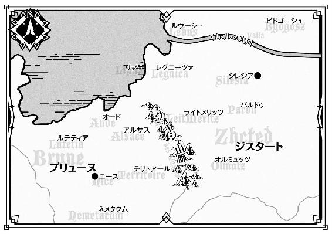

| 魔弾の王と戦姫〈ヴァナディース〉16 (MF文庫J) | |
| 川口 士 | |
| KADOKAWA / メディアファクトリー (2017) | |

魔弾の王と戦姫16
川口 士

本作品の全部または一部を無断で複製、転載、配信、送信したり、ホームページ上に転載したりすることを禁止します。また、本作品の内容を無断で改変、改ざん等を行うことも禁止します。
本作品購入時にご承諾いただいた規約により、有償・無償にかかわらず本作品を第三者に譲渡することはできません。
本作品を示すサムネイルなどのイメージ画像は、再ダウンロード時に予告なく変更される場合があります。
本作品の内容は、底本発行時の取材・執筆内容に基づきます。
本作品は縦書きでレイアウトされています。
また、ご覧になるリーディングシステムにより、表示の差が認められることがあります。


１ 混迷の都
厚みのある黒灰色の雲がいくつも重なって、王都シレジアの空を覆っている。
まだ昼を過ぎたばかりだというのに地上は薄暗く、通りを行く人々は顔を曇らせ、急ぎ足になっていた。冷たい秋の風に、赤らんだ鼻をすする者もいる。露店を出している商人たちは、一雨くる前にと商品をかたづけはじめていた。
「いつ降りだしてもおかしくないな」
空を見上げて、ティグルヴルムド＝ヴォルンは物憂げな表情をつくった。
若者は旅装に身を包み、左手に家宝の黒弓を持って、腰に矢筒を提げている。旅装なのは、町中で弓を持っていてもなるべく怪しまれないようにという、彼なりの考えだ。
王都が平和であれば、若者とてわざわざ弓矢を持ち歩こうとは思わない。
だが、現在の王都が見かけほどには平穏でないことを、彼は知っている。自分や仲間を守るためにも、弓を手放すことはできなかった。
「ティグル。今日はもう引きあげましょうか」
若者を愛称で呼んで、そう提案したのはリュドミラ＝ルリエだ。ティグルと同じ十八歳で、親しい者からはミラという愛称で呼ばれている。
ミラのそばに立っている、三つ年下のオルガ＝タムも、薄紅色の髪の先端を指でいじりながら口を開いた。
「わたしも、そうした方がいいと思う。風が湿っぽい」
ミラとオルガはそれぞれ地味な色合いの外套をまとい、帽子を目深にかぶっている。正体を隠すための変装だった。王国の重鎮である戦姫が市街を歩きまわっているなどと知られたら、ちょっとした騒ぎになってしまう。
人々が慌ただしく歩き去っていく通りを見つめて、ティグルは残念そうにつぶやいた。
「今日は、あまりはかどらなかったな」
「こんな日もあるわよ。ソフィーの屋敷に戻ったら、紅茶を淹れてあげるわ」
ミラが苦笑を浮かべてなぐさめる。若者は気を取り直して、彼女に礼を言った。
ティグルたちは朝から王都を歩きまわって、情報収集に努めていた。
下級貴族や騎士がよく使っている酒場に足を運んだり、道ばたで休んでいる吟遊詩人に声をかけたりして、王都で最近起きた出来事についてどう思うかと聞いてまわっていたのだ。もう何日も、三人はこうしたことを続けている。
この秋、王都ではいくつかの事件が起きた。
八年もの間、病に伏せていたルスラン王子が、健康を取り戻して王宮に復帰したことは吉報といっていいだろう。しかし、そのあとには悲劇が続いた。
有力な貴族だったビドゴーシュ公イルダー＝クルーティスが王宮で命を落とし、長年にわたって王国を治めていたヴィクトール王もこの世を去ったのだ。
ルスラン王子は、冬が終わるまでは喪に服し、春を待って戴冠の儀を行うことを宣言した。それを聞いた人々は安堵し、王都を覆いかけていた暗雲は消え去ったかに思われたのだが、貴族諸侯の中には、ルスランに不信の目を向ける者が少なからずいたのである。
そのように緊迫した情勢下で、ティグルと戦姫たちはさまざまな方面から情報を集めることにしたのだ。自分たちの発言や行動が、王宮に新たな混乱をもたらすようなことになっては目も当てられない。情報が充分にそろうまでは、うかつに動けなかった。
大通りを抜けるべく歩きだしたとき、ティグルの頭に冷たいものが当たった。若者は外套についているフードを引っ張りだして、しっかりとかぶる。
ほどなく、雨が地面を叩きはじめた。ティグルたちのすぐそばを、数人の子供たちが駆け抜けていく。
「おれは早く帰ろうって言ったのに！ おまえが妖精を見たなんて言ってつきあわせるから、降ってきちゃったじゃないか」
「ほんとうに見たんだって！ 爺ちゃんから聞いた妖精にそっくりだったんだ！ おまえだってこの前、怪物みたいなのを見たって言っただろ」
「怪物じゃないよ！ キキーモラだって！」
「怪物とどう違うんだよ！」
怒鳴りあいながら走り去っていく子供たちを、ティグルは何とはなしに見つめた。
──妖精に、怪物か。
子供たちの話を、真に受けるべきではないのかもしれない。
しかし、ここ二、三日の情報収集で、ティグルは大人たちからも似たような話をいくつか聞いていた。曰く、野良猫の背中に乗っている小人たちを見た、建物の陰からこちらをうかがっている化け物を見た、脇道の奥にたたずむ幽霊を見た......。
こうした話に対するミラの反応は、現実的なものだった。
「風に吹かれて転がるぼろきれを、野良猫と思いこむようなものよ。小人だの化け物だのが本当にいたら、もっと大騒ぎになっているわ」
オルガも彼女なりの意見を述べた。
「幽霊や精霊を信じないとはいわない。でも、そうしたものはもっと特別な相手に姿を見せるのだと思う。命を落とした者を強く想い続ける者の前に。生まれつき、そうした能力を持つ者の前に」
ようするに、ほとんどは見間違いだろうというのが二人の意見だった。
ティグルも二人に反対というわけではない。だが、何かが気になるのだ。
──俺たちが、魔物と戦ったことがあるからか。
ヴォジャノーイ。トルバラン。バーバ＝ヤガー。そしてドレカヴァク。おとぎ話に出てくる妖精の名を冠した、恐ろしい怪物たち。
──世界を変えることがやつらの目的だと、ティル＝ナ＝ファは言っていたな。
不安が湧き起こる。本当に見間違いなのだろうか。
変わりつつある世界の一端を、そのひとたちは目にしてしまったのではないか。
「ティグル、どうしたの？」
足を止めて考えこんでいたせいだろう。数歩先を歩いていたミラが、怪訝な顔をしてこちらに戻ってきた。若者は何でもないというふうに首を横に振る。
三人の視界の端に金色の閃光が瞬いたのは、そのときだった。
「雷......？」
「いや、違う」
オルガのつぶやきを、ティグルが否定する。その光は空から解き放たれたのではなく、地上から発せられたものであることを、若者は正確に見抜いていた。
再び、閃光がほとばしる。やはり地上から。
ティグルの脳裏を、リーザ──エリザヴェータ＝フォミナの顔がよぎった。彼女の竜具である雷渦ヴァリツァイフは、稲妻を操る力を備えた漆黒の鞭だ。
若者が最後にリーザと会ったのは、今朝のことだった。ティグルたちが活動の拠点としているソフィーの屋敷に、彼女は顔を見せた。そうして若者たちと挨拶をかわすと、とくに話をするでもなく屋敷をあとにしたのである。
リーザは王宮へ足を運んだり、親しい貴族の屋敷を訪ねたりするなどして、彼女なりに情報を集めている。だから、あのときは何か急ぎの用事でもあるのだろうと思っていた。だが、彼女にはっきりと確認したわけではない。
「二人は先に帰っていてくれ。俺は、いまの光を見てくる」
胸騒ぎを覚えて、ティグルは雨の中を駆けだした。
◎
ティグルたちが目にした雷光は、薄汚れた空き地から撃ちだされたものだった。
そこでは、二人の戦姫が竜具をかまえて対峙している。
深い紫色のドレスに身を包み、黒い鞭を握りしめているのは「雷渦の閃姫」の異名を持つエリザヴェータ＝フォミナだ。彼女は異彩虹瞳と呼ばれる、左右で色の異なる瞳の持ち主でもある。
金色の右目と碧色の左目にそれぞれ戦意を湛えて、リーザは敵手を見据えていた。
彼女の視線の先に立っているのは、長い黒髪の女性だ。隼の模様が縫いこまれた黒い服を身につけ、両手に小剣を持っている。小剣の刃はそれぞれ金色と朱色で、紅蓮の炎をまとっていた。
彼女はフィグネリア＝アルシャーヴィン。「煌炎の朧姫」の異名を持つ。
戦いがはじまってから、まだたいして時間は過ぎていない。それにもかかわらず、二人の髪は乱れ、服は泥にまみれ、肌には小さな火傷が無数にできている。地面にはリーザの繰りだした鞭による破壊の跡がいくつも刻まれ、石でできた壁の一部も崩れていた。
──強い、などというものではありませんわね。
リーザは黒鞭をかまえて、フィグネリアとの間合いを慎重にはかっている。
武器の長さだけを見るなら彼女が圧倒的に有利だが、フィグネリアはおそるべき体術でその差を埋めてのけた。彼女は黒鞭をかいくぐり、あるいは小剣で弾き返して、瞬く間に間合いを詰めてくるのだ。リーザとしては、むやみに黒鞭を振るうことはできなかった。
緊張から呼吸が乱れかける。力の入らない右手が、いつも以上に気にかかる。さきほど降りだした雨のせいでドレスが身体に張りつき、不快感を覚えた。
──でも、この雨は好機かも。
地面のぬかるみは、フィグネリアの足を鈍らせてくれるだろう。彼女の竜具が帯びた炎も、その勢いを衰えさせるに違いない。
フィグネリアは一言も発さず、双剣をかまえてたたずんでいる。雨に濡れた黒髪が顔の左半分を覆っても、かきあげようとすらしない。
彼女はどう動くつもりなのか、リーザには予測がつかなかった。
「もう一度、うかがいますわ。どういうつもり？」
答えは返ってこないだろうと思いつつ、紅の髪の戦姫は疑問を投げかける。
リーザがこのようなところにいるのには、わけがあった。「虚影の幻姫」の異名を持つ戦姫ヴァレンティナ＝グリンカ＝エステスに呼びだされたのだ。
数日前、リーザはヴァレンティナにあることを頼まれた。ルスラン王子の支持を表明してほしいというものだ。
リーザは承諾した。実のところ、彼女はルスランに対していくつかの点で不審を抱いていたのだが、ヴァレンティナから何か情報を引きだせるかもしれないと考えたのである。
──それで、話があるというので来てみれば。
この空き地でリーザを待っていたのは、フィグネリアだけだった。しかも、彼女は問答無用で斬りつけてきたのである。
「雷精」
リーザの声に応えて、その手にある黒鞭が白く輝く。彼女の周囲に無数の光の粒子が出現し、綿毛のように漂いながらまとわりついた。
粒子は、ひとつひとつが極小の稲妻ともいうべきものであり、リーザ以外の者が触れれば熱と衝撃を放って弾けとぶ。彼女を守る強力な光の甲冑だった。
次の瞬間、フィグネリアが動く。彼女の持つ双剣──煌炎バルグレンの刃が、それぞれ炎をまとった。
「飛炸焰」
下から上へ、すくいあげるように黒髪の戦姫は双剣を振りあげる。二本の刃から、二つの火球が放たれた。大人の頭ほどもある火球は、降りしきる雨などものともせず、空中に炎の尾を引いてリーザに襲いかかる。
──時間差をつけたわね。
フィグネリアの左腕の動きが、右腕にわずかに遅れていたのを、紅の髪の戦姫は見逃さなかった。黒鞭を横薙ぎに振るって、火球のひとつを打ち砕く。火球は轟音とともに熱風と黒煙をまきちらして四散した。
リーザは返す一撃で、二つめの火球を粉砕しようとする。
直後、彼女の数歩先の地面が爆発して、大量の土砂が噴きあがった。土塊の嵐を雷光の甲冑で受けとめながら、リーザは忌々しそうに目を細める。
「やってくれるじゃない......！」
ひとつめの火球は迎撃させるための囮であり、二つめの火球は、はじめから地面を狙って放たれたものだったのだ。リーザの視界を奪って、対応を遅らせるために。
驚くべき速さでフィグネリアが向かってくる。土砂混じりの雨を浴びながら。地面に穿たれた穴を飛び越えて、彼女はリーザとの距離を一気に詰めた。
「鋼鞭！」
リーザは黒鞭をすばやく手元に引き寄せる。鞭の柄から先が縮んで、短い棒状の武器へと変形した。同時に、フィグネリアも二本の小剣を正面で交差させ、左右に振り抜く。
「突火槍列」
二人の戦姫の間に、何本もの火柱が出現した。それらは横一直線に隙間なく並んで、あらゆるものを阻むように高くそびえたつ。
リーザの異彩虹瞳に迷いがにじんだ。この炎の槍の壁は、何のためのものなのか。
一瞬のためらいのあと、紅の髪の戦姫は直感に従って後ろへ飛び退る。
刹那、炎の槍を突き抜けて、黒髪の戦姫が姿を見せた。
まっすぐ突きだされた金色の刃を、リーザは己の竜具で弾き返す。フィグネリアはもう一方の小剣で攻めてくるかと思いきや、横へ跳んだ。
頭上に落ちかかってくる火球の存在にリーザが気づいたのは、そのときだ。
よける暇もなく、紅の髪の戦姫は火球に吞みこまれる。炎と熱波と爆風が彼女のまとう雷光の粒子を吹き飛ばし、全身を容赦なく焼いた。
猛火に炙られながら、リーザは理解する。
突火槍列は目くらましだったのだ。空中に火球を放ったことを、隠すための。そのあとに斬りつけてきたのは、火球を確実に当てるためだろう。
残り火と黒煙が雨によって霧散する。雷精が炎を弱めていなければ、リーザは黒焦げになっていたに違いない。
苦しげに息を吐きだした紅の髪の戦姫に、フィグネリアはすかさず斬りかかった。
棒状の武器のままの黒鞭を両手で握りしめて、リーザは黒髪の戦姫に向き直る。小剣を受けとめた。金属音が響きわたり、竜具の輝きを反射して無数の雨粒が煌めく。
リーザの靴の踵が、ぬかるみに深い靴跡をつくった。押しこまれる金色の刃を、彼女は歯を食いしばって懸命に食い止める。
戦意をにじませた三つの色の瞳が交錯した。リーザのそれが激情を帯びているのとは対照的に、フィグネリアの瞳は真夜中の湖のように静かで、感情の動きを見せない。彼女は右手の小剣をそのままに、左手の小剣をリーザの脇腹に突きこもうとする。
「──ヴァリツァイフ！」
リーザが叫んだのは、まさにその瞬間だった。黒鞭がまばゆいばかりの閃光を放ってフィグネリアの視界を灼く。おもわぬ反撃に、黒髪の戦姫はよろめいた。左手の小剣はリーザの脇腹をかすめるだけに留まる。
フィグネリアを押し返して距離をとると、瞬時にリーザは己の竜具を鞭状に戻した。
裂帛の気合いとともに、渾身の一撃を叩きつける。フィグネリアの身体が吹き飛んで、地面に倒れた。間髪を入れず、リーザは二撃目を繰りだす。
黒鞭の先端が音高くはねあがった。双剣に弾き返されたのだ。しかし、フィグネリアも勢いを完全に殺すことはできなかったらしく、泥をはねあげて地面を転がる。
──釘付けにできるなら、かまいませんわ。
リーザは雷渦を振りあげた。不規則な軌道を描いて、黒鞭はフィグネリアをめった打ちにする。まともにくらえば、文字通り身体を引き裂く猛撃だ。煌炎の朧姫は双剣で己の身を守ることが精一杯で、立ちあがることすらできずにいるようだった。
手を休めず、リーザは黒鞭を振るい続ける。フィグネリアを少しでも消耗させて、その動きを鈍らせなければならない。必殺の竜技で、確実に仕留めるために。
リーザが十何度目かの攻撃を行ったときだった。
不意に、泥がひときわ大きくはねた。黒鞭がそれまでよりも強く打ち返される。
無造作に、フィグネリアが身体を起こした。頭から爪先まで泥にまみれ、身体中に細かな傷を負っている。呼吸も乱れていた。
だが、彼女の表情に変化はない。その手にある双剣も炎をゆらめかせて、降りかかる雨を蒸発させている。
リーザは緊張に顔を引き締めて、ヴァリツァイフに命令を下した。
「雷刃」
黒鞭が、巨大な片刃の剣へと形を変える。大振りの鉈を思わせる漆黒の刃には、白い光に包まれた無数の突起が備わっていた。
鋼鞭よりも強力だが、重量があり、長くもたないという欠点も持っている。
──フィグネリアが呼吸を整える前に、決着をつける。
彼女がなぜ自分を襲ってきたのか、またヴァレンティナが何をたくらんでいるのかについては、そのあとでじっくりと聞けばいい。
泥濘を蹴って、紅の髪の戦姫は黒髪の戦姫との間合いを詰める。
「陽炎」
稲妻の刃を届かせるまであと数歩というところで、フィグネリアの周囲の大気が奇妙に揺らいだ。不透明なガラスを通して見るかのように、彼女の姿がおぼろげなものになる。
リーザはわずかに目を瞠ったが、足を緩めずに敵手へと接近した。竜具を振りあげて、力任せに叩きつける。
金属同士のぶつかりあう耳障りな音が耳朶を打ち、青白い火花が飛散した。霞みがかっていたフィグネリアの姿はかき消えて、黒髪の戦姫は後ろへ吹き飛ぶ。空中で体勢を立て直して転倒だけはまぬがれたものの、彼女はがくりと膝を折った。
「──突火槍列」
肩で息をしながら、フィグネリアが声を絞りだす。リーザと彼女の間に、炎の槍を連ねた壁が出現した。
リーザは表情を険しいものにして、炎の槍へと斬りかかる。雷撃を帯びた刃を横薙ぎに振るった。上下にわかたれた炎の槍の壁は、火の粉をまきちらしながら崩れ落ちる。
だが、その向こうにフィグネリアの姿はない。
竜具をかまえて、リーザは視線を巡らせる。視界の端で何かが動いた。
この空き地からは二本の細い道が延びているのだが、そのひとつに何者かが飛びこんだのだ。フィグネリアに間違いない。
「逃がすものですか......！」
雨と泥で汚れたドレスの裾をひるがえして、リーザはフィグネリアを追う。彼女が呼吸を整える前に追い詰めて、打ち倒さなければならない。
しかし、空き地と道の境目に立ったところで、紅の髪の戦姫は愕然とした。建物と建物に挟まれたその細い道には、何者の姿もなかったのだ。
どこへ、とつぶやきかけて、背筋が凍りつく感覚にリーザは言葉を吞みこむ。
頭上から迫る危険を、戦士の本能が察知した。
顔をあげた彼女の両眼は、落下の勢いを利用して襲いかかってくる何者かの姿を映しだす。そこだけ目の焦点が合わないかのように、それは輪郭さえも不鮮明だった。
リーザは竜具をまっすぐ突きあげる。刃鳴りが響いた。雷光が瞬き、火の粉が舞う。
自分の刺突が受け流されたことを、彼女は悟った。
同時に、突きだされた何かがリーザの左肩を鋭くえぐる。かわせなかったのは、その攻撃もやはり、ひどくぼやけて見えたからだ。
短い悲鳴をあげてリーザは体勢を崩し、受け身もとれずに地面に倒れた。激しい戦いでぼろぼろになっているドレスの肩口が、流れでる血で染まっていく。
激痛に耐えながら身体を起こそうとするリーザの前に、フィグネリアが降りたった。勝ち誇るでもなく、彼女は冷ややかにリーザを見下ろしている。
リーザは歯を食いしばって、フィグネリアを睨みつけた。色の異なる双眸に、怒りと悔しさと、自分に対する情けなさとをにじませて。
黒髪の戦姫は、追いつめられたふりをしてリーザをここまで誘いこんだのだ。
そして「陽炎」による大気の揺らぎをまとって頭上から攻めかかり、左手の小剣で黒鞭を受け流し、右手の小剣でリーザの左肩を傷つけたのである。
フィグネリアが双剣を振りあげる。リーザは勢いよく身体を起こしざま、牽制するように大きく片刃の剣を薙ぎ払った。フィグネリアは一瞬早く後ろへ跳んで、斬撃をかわす。
喘ぐように荒い呼吸をしながら、リーザは立ちあがった。雨に打たれて身体は冷えているはずなのに、左肩だけは熱を帯びているのがわかる。
──まずいわね。
竜具を振ってわかったのだが、左腕が思った以上に動いてくれない。ただでさえ右手に力が入らないというのに。出血のせいか身体も重くなってきた。
「雷刃」を解いて、竜具を鞭状に戻す。残った気力を奮い起こして、リーザは雷渦を振りかざした。主の覇気に応えて、漆黒の鞭が白い雷光をまとい、尋常でない輝きを放つ。あふれた稲妻のかけらが大気を焼き焦がした。
ヴァリツァイフの柄の先が九本にわかたれる。その一本一本が、天を裂き、地を砕く恐るべき雷鎚であった。
リーザの気迫に、フィグネリアはただならぬものを感じたのだろう。両腕で顔を守るように双剣をかまえる。金色の刃は煌めく黄金の炎に包まれ、朱色の刃は紅蓮の炎を噴きあげた。左右の腕の隙間から覗く右目は、紅の髪の戦姫を静かに見据える。
おたがいに半歩、踏みだす。目の前の敵だけを視界に入れ、雨音にかき消されそうな、かすかな息遣いすらも聞きとろうと耳をすませる。
さらに半歩、リーザは前へ出た。フィグネリアは、地面を蹴って飛びだした。双剣の刃を包んでいた二つの炎が、金と赤の巨大な輪となる。
「──天地撃ち崩す灼砕の爪！」
「──双炎旋」
九つの稲妻は光の波濤となって放たれ、二つの焰輪は炎の尾を引いて業火の濁流と化した。竜のそれに勝るとも劣らぬ咆哮をあげて雷と炎は正面から激突し、相手を吞みこみ、消し去らんと暴れ狂う。無数の光が乱舞するせめぎあいの中で、あふれた力は暴風となって吹き荒れ、圧力に耐えかねた建物の壁に亀裂が走った。
竜技の破壊力は、互角だった。差があったとすれば、それは使い手の体力だろう。
押されている。そう思った次の瞬間には、リーザの足は地面から離れていた。
身動きもとれずに吹き飛ばされ、灼熱の猛火に吞みこまれて、背中から地面に叩きつけられる。それでも勢いは止まらずに何度か転がり、止まったときには泥まみれで仰向けに倒れていた。視界が揺れ、息が詰まって、声が出ない。
意識がもうろうとして、何が起こったのか、すぐにはわからなかった。瞳には黒灰色の空と降り続ける雨だけが映り、身体は痺れたように動かない。だが、焼けるような痛みと泥の冷たさはかすかに感じていた。
徐々に感覚が戻ってくる。身じろぎすると左肩に激痛が走って、リーザは呻き声を漏らした。右手で竜具を握りしめ、左手で泥を引っかいて、懸命に身体を起こす。
左右には壁があった。フィグネリアが自分を誘いこんだものとは違う、もう一本の路地までリーザは吹き飛ばされていたのだ。
二十歩ほど先に、黒髪の戦姫が傲然と立っている。彼女の背後には、二つの竜技による破壊の跡があった。地面は嵐が通り過ぎたあとのようにえぐられており、左右の建物には巨大な穴ができている。その周辺は黒く焼け焦げていた。
リーザは立ちあがろうとして失敗し、転倒する。泥濘に頭から倒れこんだ。顔についた泥を雨が中途半端に洗い流して、奇妙な模様をつくる。
フィグネリアはその場から動かず、金色の刃を持つ小剣を振るった。刃から黄金に煌めく火球が放たれる。
膝をついてうずくまるような体勢で、リーザは右手を左手で支えながら黒鞭を一閃させた。火球は空中で吹き飛び、無数の火の粉へと姿を変える。
リーザは顔を歪めて大きく息を吐いた。身体が重い。ただ竜具を振るうだけの動作が、ひどくつらい。それでも短い呼吸を繰り返しながら、紅の髪の戦姫は立ちあがった。
──私、ここで死ぬのかしら。
そんなことを思う。仮に右手が万全の状態だったとしても、最終的な結果は変わらなかっただろう。両者の力量には明確な差があった。
不意に、リーザの口元に笑みが浮かぶ。両足に力をこめて、彼女は大地を踏みしめた。左手を右手に重ね、竜具を両手でかまえる。
笑いとばしたのは、自分の弱気だ。小さいころ、自分に戦う術を教えてくれたエレオノーラなら。あるいは、相手が竜や魔物だろうと敢然と立ち向かったティグルヴルムド＝ヴォルンなら。死が眼前に迫っても、諦めるようなことはないはずだ。
──そうよ。私は負けない。
たとえ竜具を振るえなくなっても。斬り刻まれ、体内の血を流し尽くしても。
フィグネリアが一歩、前へと踏みだす。リーザはその場から動かない。相手の一撃を受ける覚悟で、こちらの一撃を叩きこむつもりだ。一歩分の体力すら惜しかった。
しかし、予期した激突は起こらなかった。
雨音に混じって、大気を貫く音がかすかに聞こえたかと思うと、空から一本の矢が落ちてきたのだ。それは、二人の戦姫の間に正確に落下して地面に突き立つ。
フィグネリアが足を止めて、リーザの背後へと視線を向けた。リーザは、黒髪の戦姫から目を離すような真似こそしなかったが、安堵と嬉しさに表情を緩める。
力強い足音が後ろから近づいてきて、リーザの前に若者が立つ。彼女を守るように。
くすんだ赤い髪。黒い外套。その左手には漆黒の弓。
ティグルヴルムド＝ヴォルンだった。
人気のない路地裏とはいえ、これだけ派手に騒ぎを起こしたのだ。誰かが現れるだろうとフィグネリアは思っていた。
それがティグルであったことにはさすがに意表を突かれたものの、黒髪の戦姫はすぐに驚きから立ち直って、冷静に若者を見据える。
──三百アルシンだったか。ずいぶん遠くまで矢を飛ばせるという話だが。
ティグルについて、フィグネリアはそれほど詳しくない。三百アルシンという数字は誇張だとしても、弓の扱いに長けているのはたしかなのだろう、というぐらいの認識だ。
両者を隔てる距離は、二十歩足らず。左右には建物が壁となってそびえ、自由な動きを許さない。それだけを見ると、フィグネリアの方が不利に見える。
──いや、不利なのは、あいつだ。
雨が降っている上に、これほど短い距離では矢が充分に飛ばないだろう。加えて、ティグルの後ろにはリーザがいるため、こちらの攻撃をかわすことは非常に難しい。
──頭か、脚を狙ってくるだろうな。正確さに自信があるなら、脚か。
自分の脚を射抜いて動きを鈍らせ、それから頭を狙うだろうと推測する。
ティグルが黒弓に矢をつがえた。
フィグネリアは腰を落として前傾姿勢をとる。まっすぐ突っこむつもりだった。双剣の刃を届かせるには、それがいちばん速い。
相手が異国の英雄だろうと知ったことではない。ヴァレンティナが何とかするだろう。
地面を蹴った。無数の雨粒を弾きとばし、黒髪の戦姫は驚くべき速さで若者に迫る。両者の距離はたちまちのうちに十歩以下にまで縮んだ。
勝った。フィグネリアはそう思った。双剣の炎で矢を焼き払い、斬撃で仕留めるところまで計算する。リーザに対しては、ティグルを盾にすることで何もさせない。
だが、彼女の考えた通りにはならなかった。ティグルは黒弓を持つ左手をやや下げて、黒髪の戦姫ではなく、地面に向けて矢を射放ったのだ。
矢は、フィグネリアの数歩先の地面を撃ったかと思うと、硬い音を響かせて跳ね返り、黒髪の戦姫の顔めがけて飛んできた。鋭い鏃を、彼女に向けて。
とっさに足を止めて、フィグネリアは身体を傾ける。矢は、彼女の顔のすぐ横を通過して空中に小さな弧を描き、地面に落ちた。
フィグネリアは目を見開き、呼吸することも忘れてティグルを見つめる。
いま、目の前で起きたことが信じられなかった。
若者の動きに注意を払いつつ、さきほど矢が跳ね返ったあたりを慎重に観察する。そこには指の先ほどの大きさの小石があった。
──最初からあれを狙っていたのか？
小石ではなく、地面に当たれば、矢は跳ね返ることなくそのまま突き立つだけとなる。上手く小石に当てたとしても、跳ね返ってフィグネリアの顔に飛んでこなければ、ただの外れた矢に過ぎない。
──できるのか、そんな真似が。この雨の中で。
フィグネリアは慄然とした。弓の上手な傭兵は何人か知っているが、このような離れ業をやってのける者など思いあたらない。それも、失敗すれば命を失うような状況で。
ティグルが新たな矢を黒弓につがえた。フィグネリアは双剣をかまえながら、急いで後ろに飛び退る。若者を甘く見ていたことを、彼女は認めた。
これは、単純に間合いを詰めれば勝てるというような相手ではない。
「どうしてリーザを襲った？」
こちらが距離をとったからか、ティグルが静かな声音で訊いてきた。
フィグネリアはどうしたものかと思案する。
理由を答えることは簡単だ。ヴァレンティナに用意してもらっている。
だが、ティグルはブリューヌ王国の貴族だ。こちらが考えもしない反応を見せるかもしれない。下手に会話が続けば、失言する恐れもある。こうしたことに対する知識や経験の不足は、戦姫になったばかりゆえに仕方がないとはいえ、フィグネリアの弱点だった。
──それに、こいつが現れたということは......。
他の戦姫もここに駆けつける可能性がある。遅まきながら、黒髪の戦姫はそのことに気づいた。それは、ティグルの弓の妙技を目にした衝撃から、彼女がまだ完全に立ち直っていないことの証明だった。
「答える気がないのか」
ティグルの声に怒りがこもる。フィグネリアは肩をすくめて応じた。
「すまないな。おまえの弓の技量に見惚れていた」
その言葉が皮肉や嫌味、あるいは何らかの意図を含んだものであれば、ティグルかリーザのどちらかが気づいただろう。
しかし、それは不純物などかけらも存在しない、素直な賞賛だった。若者の表情から怒りがわずかに薄れて、戸惑いが浮かびあがる。
フィグネリアはさらに数歩下がると、黒衣をひるがえしてティグルたちに背を向けた。さきほどリーザを誘いこんだ路地に向かって、一目散に駆けだす。竜技も使わずに。
一方、ティグルは呆然として、恐ろしい速さで遠ざかっていくフィグネリアの後ろ姿を見つめていた。逃げたのか、と思ったのは、三つ数えるほどの時間が過ぎてからだ。
若者は黒弓をかまえ直したものの、矢を射放つべきか判断に迷った。
雨は何十もの白い幕となって視界を霞ませているが、それでも矢を命中させる自信はある。だが、相手は戦姫だ。何らかの防御策を持っている可能性は充分に考えられる。
そして、もしもフィグネリアが考えを変えて戻ってきたら、ティグルは重傷のリーザをかばって戦うことになる。相手が逃げてくれるというなら、そうさせるべきだった。
フィグネリアの姿が見えなくなる。ティグルはさらに十まで数えて、彼女が戻ってこないことを確認すると、弓弦を戻し、矢を腰の矢筒に放りこんだ。リーザを振り返る。
「リーザ......」
だいじょうぶか、と続けようとして、ティグルは言葉が出てこない。あらためて見ると彼女の姿はひどく痛ましかった。
紅の髪の戦姫は、頭から爪先まで泥にまみれ、傷だらけだった。ドレスは原形を留めておらず、元の色を推測するのが不可能なほどに黒ずんで、彼女の身体を覆う薄汚れた布きれと化している。むき出しになっている肩や太腿にはすり傷と火傷がいくつもあり、とくに左肩の傷は深そうだった。
「来て、くれたのね」
立っているのがやっとだろうに、リーザはティグルに微笑みかける。その胸元で、泥だらけの首飾りが揺れた。かつて若者が彼女に贈ったものだ。
ぐらりとリーザの身体が傾く。ティグルはすばやく腕を伸ばして、彼女を抱きとめた。不安と緊張に満ちた深刻な表情で、リーザの様子をうかがう。気を失っただけのようだとわかって、若者は安堵の息をついた。自分の外套を脱いで、彼女にかけてやる。
フィグネリアを逃がすべきではなかったか。
黒髪の戦姫への怒りから、ティグルはそう思ったが、すぐに頭を振る。この状態のリーザを戦いに巻きこむなど考えたくもない。やはり、これでよかったのだ。
弓を背負い、両腕でリーザを抱きあげる。
そのとき、自分が駆けてきた路地の奥にミラとオルガの姿が見えた。若者を追ってきたのだろう。二人に向かって、ティグルは歩きだした。
◎
路地裏でリーザとフィグネリアが戦っていたころ、王宮の一画でもひとつの戦いが繰り広げられていた。
雨の降りしきる小さな庭園で、二人の娘が武器をかまえて向かいあっている。ともに、年齢は二十代前半といったところか。
ひとりは波打つ金色の髪を腰まで伸ばし、緑を基調としたドレスに身を包んでいる。その手には金色の錫杖が握られていた。
もうひとりは青みがかった長い黒髪をなびかせ、随所に薔薇をあしらった純白のドレスをまとっている。彼女が手にしているのは、大人の背丈ほどもある長柄の大鎌だ。
いずれも際立った美貌の持ち主で、金髪の娘はソフィーヤ＝オベルタス、黒髪の娘はヴァレンティナ＝グリンカ＝エステスといった。ヴァレンティナに虚影の幻姫の異名があるように、ソフィーは「光華の耀姫」の異名を持つ。
戦いがはじまったのは、雨が降る少し前のことだった。庭園で休んでいたソフィーに、ヴァレンティナが襲いかかってきたのである。
逃げられないと悟ったソフィーは、錫杖──光華ザートを振るって応戦した。
錫杖と大鎌は虚空に無数の軌跡を描いて、その激突は二十を超えた。決着は容易につかず、そのうちに雨が降りだして、現在に至る。色とりどりに咲き誇っていた秋の草花が、二人の戦いに巻きこまれて吹き散らされ、泥の中に沈んでいた。
ソフィーの髪は水を滴らせ、ドレスは冷たく身体に張りついている。雨に濡れそぼっているのはヴァレンティナも同じだが、金髪の戦姫が緊張に顔を引き締めているのに対し、黒髪の戦姫は口元に笑みすら浮かべていた。
「わたくしが邪魔というのは、どういう意味かしら」
呼吸を整えながら、ソフィーが問いかける。最初に大鎌で斬りつけてきたとき、ヴァレンティナは言ったのだ。「あなたは邪魔なんです、ソフィーヤ」と。
ソフィーは以前から、彼女の動きに注意を払ってきた。虚影の幻姫は病弱を装って、何かをたくらんでいるのではないかと考えていたからだ。彼女の行動を具体的に阻んだことはないが、目障りな存在ではあっただろう。
また、最近のソフィーは王宮に足繁く通って、何人もの貴族や官僚に会っている。こちらは明確に、ヴァレンティナに対抗しようと考えてのことであり、何かしら仕掛けてくるだろうとは思っていた。
しかしヴァレンティナとて、邪魔だからなどという理由で、戦姫であるソフィーを排除できるはずがない。それなりの理由を用意しているはずだった。
「わかりませんか？」
「さっぱりね。何か勘違いをしているのだと思うわ」
「しらを切るなんて、私は悲しいです」
漆黒と真紅で構成された大鎌──虚影エザンディスを肩に担いで、ヴァレンティナが地面を蹴る。水に濡れたドレスをまとっているとは思えない俊敏さで、間合いを一気に詰めた。ソフィーはその場から動かず、光華で迎え撃つ態勢をとる。
大鎌による横殴りの一撃を、ソフィーは錫杖で弾き返した。耳の奥の残響が消えるよりも速く、金髪の戦姫は手首を返す。錫杖を回転させて反撃の一打を叩きこんだ。ヴァレンティナは身体をひねってそれを避ける。
「いつも身体が弱いと言っている割に、いい動きをするじゃない」
「こう見えても、かなり無理をしているんですよ」
ソフィーの皮肉を、ヴァレンティナはかろやかに笑って受け流した。無造作に間合いを詰め、すばやく踏みこんで大鎌を振るう。ソフィーは錫杖でそれを受けとめた。最初の刃鳴りは二つめの刃鳴りにかき消され、さらに新たな刃鳴りが大気を引き裂く。
ソフィーのスカートの裾が引き裂かれ、太腿に赤い筋が走った。同時に、ヴァレンティナの左腕を錫杖の先端がかすめて、腫れあがったような傷痕をつくる。
ヴァレンティナは竜具を振りまわして、さまざまな角度からソフィーを攻めたてた。その鋭さと苛烈さ、何よりも軌道の読みづらさに、ソフィーは防戦一方となる。
受けとめ、弾き返す。身をそらして避け、錫杖を小さく振るって牽制する。竜具と竜具がぶつかりあうたびに金色の火花が飛び散って、虚空に消えた。
大鎌が、今度は足元を狙ってくる。よけられないと判断し、ソフィーはかろうじて錫杖で打ち払った。雨粒が弾け、竜具の輝きを反射して、二人の間に極小の虹を輝かせる。
──強いわね。
ヴァレンティナの戦士としての技量を、ソフィーは率直に認めた。彼女の強さは、エレンことエレオノーラ＝ヴィルターリアやミラに並ぶものだ。このまま戦い続けたら、負けるのは自分だろう。
「──虚空回廊」
つぶやきとともに、ヴァレンティナの姿がふっと消える。ソフィーは目を瞠ったが、それ以上の驚きは示さず、冷静に錫杖を掲げた。
「──我が傍に集え眩い粒砂よ」
円環を連ねた錫杖から黄金の輝きがこぼれ落ちて、彼女の身体にまとわりつく。ソフィーの頭上にヴァレンティナが姿を現したのは、その瞬間だった。
金色の粒子に包まれたソフィーの姿は音もなく消え去り、ヴァレンティナの振るった大鎌は空を切る。
傍から見ている者がいたとしたら、いったい何が起こったのかわからなかっただろう。ヴァレンティナは竜技によって空間を飛び越え、奇襲をかけた。そして、ソフィーはとっさに竜技で姿を消し、恐るべき一撃をかわしてみせたのだ。
黒髪の戦姫は地面に着地すると、楽しそうな表情であらぬ方向を見つめる。
「さすがです、ソフィーヤ」
その声に応えるように、何もない空間に人間の輪郭が浮かびあがった。それは明確な線を描き、いくつもの色を帯びて、ソフィーの形をとる。
ソフィーは言葉を返さなかった。それだけの余裕がなかったのだ。
空間を飛び越える彼女の竜技については、話を聞いたことがあったので警戒することができた。知らなかったら、おそらくやられていただろう。また、姿を消す竜技がなかったら避けきれたかどうか。
「ビドゴーシュ公も、こうやって殺害したのかしら？」
劣勢を承知の上で、ソフィーはあえて挑発的な言葉をヴァレンティナに投げつける。黒髪の戦姫は小首をかしげた。
「あの方は、階段から落ちて亡くなられたのですよ」
「公爵の遺族の方々は、そんなことはありえないと言っているそうだけれど」
ソフィーは食いさがる。ヴァレンティナが口を滑らせるとは思っていないが、正面から戦っても勝ち目が薄い以上、他の方法で隙を見出すしかなかった。
「彼らの気持ちはわかりますが、世の中は往々にして、想像もしなかったことが起こるものです。あなたもそう思ったことはありませんか、ソフィーヤ」
笑顔はそのままに、どこかしみじみとした口調でヴァレンティナは答えると、泥濘の中を一歩踏みだす。ソフィーは錫杖をかまえて迎え撃つ体勢をとった。
──まっすぐ斬りかかってくるとはかぎらないのが、いやらしいわね。
距離を詰めながら、ヴァレンティナは空間を跳躍してソフィーの側面や背後に現れるかもしれないのだ。ソフィーとしては後手にまわらざるを得ない。
両者が再び竜具をまじえようとした、そのときだった。
「何をやっているのだ、そなたら！」
横合いから飛んできた一喝が、二人の戦姫の動きを止める。
先に敵手から視線を外したのはヴァレンティナだった。彼女は声をかけてきた者に身体ごと向き直ると、竜具を地面に置いて膝をつく。
ソフィーもその人物が誰なのかを知ると、臣下としての礼をとった。
「これはルスラン殿下......」
雨に打たれながら、ひとりの男が立っている。白い絹服が濡れるのもかまわずに。
年齢は三十代半ばといったところか。薄い金髪と青い瞳、均整のとれた身体つきの持ち主で、整った顔には怒りがにじんでいる。
ルスランと呼ばれたその男は、二人の戦姫を見下ろして苛立たしげに告げた。
「二人とも、廊下まで来い。我が国の大切な戦姫たちを、これ以上雨に打たせ続けるわけにはいかぬ」
背を向けて廊下へと歩いていくルスランに、二人の戦姫はおとなしく従う。彼こそがこの国の王子であり、次代の国王とされる男だった。
──どういうことかしら。
緑柱石の色の瞳に疑問を湛えて、ソフィーは一歩先を歩くヴァレンティナの背中を見つめる。このような場所で襲いかかってきたからには、誰も近づけさせないようにしたとばかり思っていたのだが。
廊下に戻ると、ルスランは厳しい声音でソフィーたちに問いかけた。
「そなたらは昨日今日戦姫になったわけでもなかろう。己の立場についてもよくわかっているはずだ。王宮で争うとはいったい何があった。──ソフィーヤ＝オベルタス、まずはそなたの主張から聞こう」
ルスランの態度は、ヴァレンティナに味方するというものではなく、公正さを保っている。ソフィーはあらためて王子に一礼し、庭園で休んでいたところ、突然ヴァレンティナに襲われたと語った。ルスランはうなずき、ヴァレンティナに視線を向ける。
「では、ヴァレンティナ＝グリンカ＝エステス。そなたの主張を聞かせてもらおう」
「私がソフィーヤ殿に斬りかかったのは事実です」
虚影の幻姫は優美な動作で頭を下げて、そう答えた。
「理由は何だ」
「密告がありました」
ヴァレンティナの言葉に、ルスランは眉をひそめる。黒髪の戦姫は続けた。
「ソフィーヤ殿が、同じ戦姫であるエレオノーラ殿、エリザヴェータ殿と語らい、パルドゥ伯爵を擁して、ルスラン殿下への謀反を計画しているというものです」
ソフィーは戦慄に息を吞んだ。もしもヴァレンティナとルスランが共謀していたら、彼女はこの場でいわれのない罪を着せられてしまう。ソフィーだけではない、エレンとリーザ、そしてパルドゥ伯爵ユージェン＝シェヴァーリンもだ。
だが、そのような事態にはならなかった。
「証拠はあるのか」
ルスランは厳格な表情を変えずに、ヴァレンティナへ質問を重ねる。わずかな間を置いて「いいえ」と、黒髪の戦姫は首を横に振った。
「ですが、ソフィーヤ殿とエリザヴェータ殿がここ数日、王宮に通っていること、エレオノーラ殿がパルドゥ伯爵を何度も訪ねていることは確認しております」
「もうよい」
怒りを隠さずに、ルスランは言った。
「戦姫が王宮に通うことは、とくにおかしいことでもあるまい。とくに、いまのような情勢ではな。エレオノーラとパルドゥ伯爵が以前から親しくしていることは、伯爵から聞いている。そなたも自覚しているようだが、それだけでは動く理由にはならぬ」
よほど腹が立ったのか、ルスランはさらに言い募る。
「ヴァレンティナ。私はそなたを頼りにしているが、密告などを真に受けるとは、あまりに軽率な振る舞いではないか。最悪の場合、私は有能で忠実な二人の戦姫を失うことになったのだぞ」
「まことに申し訳ございません。おっしゃる通りでございます」
ヴァレンティナは一段と深く頭を下げた。予想もしなかった展開に、ソフィーはどうするべきか判断がつかず、ヴァレンティナの様子を見守っている。
「そなたが頭を下げるべきは、私ではなくソフィーヤであろう。二人とも大きな怪我はないようだが......」
ルスランが嘆息し、ヴァレンティナは膝をついたまま、ソフィーの方を向いた。
「ソフィーヤ。私の軽はずみな行動で、多大な迷惑をかけました。申し訳ありません」
心から悔いているような表情と声音で、黒髪の戦姫は金髪の戦姫に謝罪する。
ソフィーは怒りがおさまらないふうを装って、言葉を返さなかった。演技に対して、何かを言う気にはなれなかったのだ。また、彼女が何をたくらんでいるのかも気になった。
「──ヴァンレティナ」と、ルスランが謹厳な顔つきで呼びかける。
「王宮をみだりに騒がし、同輩たるソフィーヤに危害を加えんとした罪によって、私はそなたに罰を与えねばならぬ」
「はい。どのような処分でも」
ヴァレンティナは粛然とした態度を崩さず、ルスランの言葉を待った。
沈黙が廊下を包みこむ。庭園に降る雨の音だけが、三人の耳に聞こえていた。
「そなたは王都に邸宅を持っていたな。三十日の間、竜具を預かり、謹慎を申しつける。謹慎中は一切の外出を許さぬ。来客も、私が許可した者以外は認めぬ。手紙などによる交流もだ。監察官は追って派遣する。ソフィーヤへの謝罪についても、のちほど言い渡す」
この場合の監察官とは、監視役のことだ。人目を盗んで外出したり、客を招いたりしないか厳しく見張るのである。
「ソフィーヤはどう思う」
ルスランはソフィーに聞いた。これで納得してくれるかという意味だ。
ソフィーにしてみれば、不当な言いがかりをつけられて襲われたのだから、もっと厳しい処分を要求することもできるだろう。たとえば、ヴァレンティナの治めるオステローデ公国の一部を取りあげ、王家の直轄地にするというような。
「わたくしに異存はありません」
だが、彼女は王子の提案を受けいれることにした。ここでソフィーが意見を述べ、それをルスランが採用すれば、戦姫同士の権力闘争という印象を他者が抱くかもしれない。そのことを危惧したのだ。
「ところで殿下。ヴァレンティナ殿が言っていた密告については、いかがなさいますか」
ソフィーが聞くと、ルスランは顔をしかめる。
「むろん、密告者の正体を突きとめて、厳しく罰するつもりだ。名前を使われたそなたの怒りはわかるが、ここは私に任せてもらえないか。決して悪いようにはせぬ」
ルスランが危惧していることを、ソフィーは察した。密告者が高い地位にある者だったり、有力な貴族であったりしたらおおごとになる。相手の素性がわかるまでは、内密にことを進めたいのだろう。
「わかりました。殿下にお願いいたします。それから、エレオノーラとエリザヴェータにはわたくしから事情を話しておきましょう」
「そうだな。頼む。パルドゥ伯爵には私から言っておく。では、それぞれに一室を与えるゆえ、身体を拭いて着替えるように。この季節の風邪は油断できぬからな」
王子のもの言いが、さきほどよりもやわらかくなった。おそらく、この穏やかな態度こそが本来のルスランなのだろう。
廊下の向こうから兵たちが駆けてくる。ルスランは「戦姫殿たちが、雨の中で言い争いをしていてな」と不器用にごまかし、ソフィーたちを空いている部屋へ連れていくように命じた。自身は二人ばかり兵をともなって、廊下を歩き去る。
兵たちに守られて、ソフィーは廊下を歩きだした。いまごろになって、身体に張りつくドレスに不快感を覚え、寒さを感じる。
隣を歩くヴァレンティナに何気なく視線を向ける。彼女の横顔を見たとき、ソフィーの胸中にわだかまっていた疑惑は確信へと変わった。
ヴァレンティナは落ち着き払っており、その顔から落胆や失望といった感情はうかがえない。彼女にとって、おそらく予想通りのものなのだ。この状況は。
──早く帰って、みんなと話しあわないと......。
ともすれば早足になるのを、ソフィーは懸命におさえなければならなかった。
◎
気がついたとき、リーザはベッドに寝かされていた。
「ここは......」
薄暗い部屋だ。自分の身体には厚手の毛布がかけられている。身じろぎすると、全身が痛みを訴えた。とくに左肩の痛みが強い。
首だけを動かして、リーザは部屋の中を見回す。
どこかの屋敷の一室のようだ。壁に設置された暖炉の火が室内をぼんやりと照らし、空気を暖めている。ガラスをはめこんだ窓から見える外の景色は真っ暗で、依然として雨が降り続けているのがわかった。
記憶をさぐって、リーザは気を失う前の出来事を思いだす。
自分はフィグネリアと戦って、敗れた。そして、ティグルに助けられたのだ。
「ここはソフィーの屋敷かしら」
おそらくそうだろう。傷だらけで泥まみれの戦姫など、下手なところへ運びこめば、それだけで騒ぎになってしまう。ソフィーの屋敷がもっとも安全なはずだ。
ため息がこぼれる。右腕を持ちあげてみると、肘よりも上に包帯が巻かれていた。右腕だけでなく、身体のいたるところに包帯が巻かれていることが感触でわかる。
「よくもこれだけですんだものですわ」
フィグネリアは、確実に自分を殺すつもりだった。ティグルが駆けつけてくれなかったらと思うと、リーザの背筋に寒気が走る。
「ティグルにお礼を言わないと」
何気なくつぶやいたとき、扉が外から叩かれた。もしかしてティグルが来てくれたのではと思い、リーザは嬉しさと混乱から頰を赤く染める。毛布を顎のあたりまで引っ張りあげて、髪の乱れをすばやく直した。
昨年の冬、ティグルが自分に言ってくれた「何かあれば、俺はすぐに駆けつける」という台詞が当時の情景とともによみがえる。そこに、雨の中で見た若者の背中が重なる。
リーザは幸せな気分に浸りながら、扉の向こうに言葉を返した。
「入るぞ」という小さな声とともに姿を見せたのは、エレンだった。
一瞬前までの自分を恥ずかしく思いながら、リーザは毛布を鼻のあたりまで引っ張り上げる。いまの自分の顔を、見られたくなかった。
エレンは手に丸い盆を持っていた。盆には水を注いだ銀杯と、黒い豆粒のようなものをいくつか載せた小皿がある。それをベッドのそばのテーブルに置くと、彼女は近くの椅子を引き寄せて座った。
「傷は痛むか？」
「あなたが、私の心配をしてくれるなんてね」
エレンから視線をそらして、リーザはつい憎まれ口を叩く。白銀の髪の戦姫は眉をひそめたが、言い返すことはせずに用件を告げた。
「薬を持ってきたんだ。飲め」
リーザはテーブルの上の盆を見上げる。小皿に載っているものが薬なのだろう。
「その薬は誰が......？」
「ソフィーの侍女の中に、簡単な薬なら調合できるという者がいてな。おまえの傷の手当てをしたのも、その侍女だ」
「やはり、ここはソフィーの屋敷でしたのね」
「ああ。私はここに戻ってきたばかりだから見ていないが、服を脱がせ、泥を落とし、身体を拭いて、薬を塗ってと、なかなかの大仕事だったらしい。いまは屋敷の仕事で手を離せないというので、代わりに私が持ってきた。あとで礼を言っておけ」
リーザはうなずき、痛みに耐えながら身体を起こす。毛布をどけてわかったのだが、彼女はゆったりとした夜着をまとっていた。件の侍女が着せてくれたのだろう。
肩や腕の傷を見て、エレンが顔を曇らせた。
「手ひどくやられたな」
リーザは受けとった薬を、水で流しこむ。薬は想像以上に苦かった。
「そういえば、これは何の薬ですの？」
「痛みをやわらげるのと、熱冷ましだそうだ。あとはよく食って、よく休めだと」
「ソフィーはいい侍女を持っていますわね」
リーザは再び横になる。彼女はようやく、ティグルではなくエレンが薬を持ってきた理由に思いあたっていた。夜着の下は、下着と包帯だけだ。この格好でティグルに会うのはさすがに恥ずかしい。
「他の方たちは？」
「ソフィーが王宮からまだ帰ってきていないのでな。リュドミラとオルガが様子を見にいっている。リムとティグルはここにいるが、呼ぶか？」
リムというのは、エレンの親友であり副官でもあるリムアリーシャのことだ。リーザは首を横に振った。それから、椅子から立ちあがろうとせず、自分を見つめているエレンを不思議そうな顔で見上げる。
「もう薬は飲みましたわ」
「おまえが寝るまで見守れといわれている」
エレンは肩をすくめて答える。リーザは「そう」とだけ言葉を返した。
リーザは目を閉じたが、まだ身体にだるさを感じるにもかかわらず、なかなか眠くならない。エレンが立ち去る気配もない。何か話しかけるべきかしらと思ったが、とくに何も思い浮かばなかった。
──少し前まで、おたがいに憎みあって、争っていたものね。
リーザはエレンに縁のある村を焼き、エレンはリーザの父を討った。それぞれ理由があったことだが、だからといって感情を納得させることは、おたがいにできなかった。
記憶を失ったティグルを巡る一連の事件では、最終的に肩を並べて戦った。だが、和解したわけではない。いまは、おたがいに接し方をさぐりあっている状態だ。
──そういえば、エレオノーラとはじめて会ったときも、こんなふうだったわね。
リーザがエレンとはじめて会ったのは、彼女が十歳のころだ。エレンは九歳だった。リーザは寒村の捨て子であり、異彩虹瞳を隠すため、右目に眼帯をしていた。エレンはその村に立ち寄った傭兵団の、幼い戦士だった。
リーザが村の子供たちにいじめられていたところに、エレンが通りかかったのだ。彼女は子供たちをあっという間に叩きのめして、リーザを助けてくれた。そして、傭兵団が村に滞在した四日の間に、リーザに戦い方を教えてくれたのである。
──エレオノーラは覚えているかしら。
戦姫になってから、このような静かな空間でエレンと二人きりになったのは、おそらくはじめてのことだ。昔のことを尋ねるいい機会かもしれない。
──でも、覚えてなかったら......？
不安と恐怖が、彼女の中に生まれる。ためらっていると、いつまでもリーザが眠らないことで考えを変えたのか、エレンが話しかけてきた。
「どうして、フィグネリアはおまえを襲ったんだ」
安堵と落胆を胸のうちに押しこめて、リーザは目を閉じたまま答えた。
「わかりませんわ。彼女は何も答えなかったもの」
「そうか」とだけ言って、エレンはすぐに次の質問に移る。
「おまえがあんなところにいたのは、どういう理由だ」
リーザの眉が不機嫌そうな曲線を描いた。強い怒りと、いくらかの後ろめたさが入り混じった表情を、彼女はつくる。五つ数えるほどの間、エレンを待たせたあと、紅の髪の戦姫はぽつりぽつりと話しはじめた。
話を聞き終えたエレンは呆れた声を出した。
「無茶な真似をしたな」
「うるさいわね」
自覚はあるだけに、他人に言われるといっそう腹が立つ。憤然として言い返すと、エレンは小さく笑った。
「怒る気力があるなら、だいじょうぶか」
リーザは目を開く。色の異なる瞳に、微笑を浮かべるエレンの顔が映った。彼女なりに気を遣ってくれているらしいとわかって、内心の憤りは薄れていく。何となく思いついたことを、リーザは尋ねた。
「もしも、ヴァレンティナに誘われたのがあなただったら、どうしたかしら」
「向こうにフィグネリアがいるという時点で、私がやつらと手を組むことはない」
笑みを消して、エレンは即答する。それから、真面目な顔で付け加えた。
「フィグネリアのことを横に置いても、私はヴァレンティナを信用できない。あいつも私を信用しないだろう。正直に言って、仲間のふりをするような演技は得意じゃないし、やはり断る以外の選択肢はないな」
「あなたらしいですわ」
リーザは口元に笑みをにじませる。皮肉などではなく、本心だ。エレンの明快で率直な態度は、彼女にとって昔から好ましいものだった。
「どうも私がいると、逆に眠りづらいようだな」
エレンが苦笑を浮かべて、椅子から立ちあがる。
「みんなには私から説明しておく。おまえはゆっくり休め」
そう言って部屋を出ていこうとした彼女の背中に、リーザは訊いた。
「あなた、フィグネリアと戦うつもりですの？」
「ああ」
エレンの返答は短い。だが、その一言に、聞く者をひるませるほどの強烈な感情が内包されているのを、リーザは正確に読みとった。
「待ちなさい、エレオノーラ」
ベッドの上に身体を起こし、真剣な声でリーザはエレンを呼び止める。訝しげに振り返った白銀の髪の戦姫に、椅子を指で示した。
「フィグネリアがどんなふうに攻めてきたのか、話してあげるわ」
エレンは真剣な顔つきになって、椅子に座り直す。彼女の知っているフィグネリアの戦い方は、五年前のものだ。今日までにエレンが戦士として格段の成長を遂げたように、フィグネリアもその技量を高めているに違いない。聞いておくべきだった。
フィグネリアの動きや、彼女がどのような竜技を放ったのかを、リーザはひとつひとつ丁寧に説明する。ときどき手振りをまじえてしまい、痛みから話が途切れることはあったものの、彼女の話はわかりやすいものだった。
一言も口を挟まずに耳を傾けるエレンを見て、ふとリーザは不安を抱いた。
──だいじょうぶかしら。
エレンとフィグネリアの関係について、リーザは詳しく知らない。だが、彼女の態度や表情から、そうとうな因縁があることは容易に想像できる。
昂ぶる感情が、視野を狭くさせてしまうかもしれない。リーザ自身にも経験のあることだ。そのようなことになったら、エレンはフィグネリアに負けるだろう。
リーザが説明を終えると、エレンは小さく息を吐いて、椅子から立ちあがった。
「ありがとう。助かった」
リーザはすぐには言葉を返さず、エレンの顔をじっと見つめる。不思議そうに首をかしげた白銀の髪の戦姫に、言った。
「余計なお世話とわかっているけれど......。相手に勝とうとする気持ちは大切よ。それを捨てては、勝機が訪れたときにつかみそこなってしまう。けれど、フィグネリアは本当に強いわ。負けないことを考えて戦った方がいいと思うの」
言い終えたとき、エレンが驚いた顔で自分を見つめていることに、リーザは気づいた。怒っているのでもなければ、呆れているのでもない。思いもよらない反応だった。
「な、何よ......」
「いや、意外だったのでな」と、口元に苦笑をにじませて、エレンは続ける。
「私も見込みのある兵を見かけたときには、そう教えているんだ。勝とうという意思は大事だが、まずは負けないことを考えろと。まさか、おまえに同じことを言われるとはな」
緊張に、リーザの胸が高鳴った。顔が熱くなる。
「教わったのよ、昔。小さなころに」
何気なさを装って言葉を返したつもりだったが、声がややうわずった。
「ねえ、エレン」
右目を手で隠し、碧い瞳を持つ左目だけで、リーザはエレンを見上げる。
「ずうっと昔、こんな顔の女の子に会ったことはなかったかしら。あなたが小さな傭兵だったころに立ち寄った、小さな村で」
エレンは戸惑いも露わに、リーザを見下ろす。眉間に皺を寄せて、彼女は懸命に記憶をたどっているようだった。五つか六つを数えるほどの時間が過ぎたとき、リーザが右目を隠していることの意味に、ようやくエレンは気がついた。
「エリザヴェータ？ 眼帯をしていた......？」
エレンは驚きを隠せず、リーザは表情を緩めて、おたがいを見つめた。
九年前の光景が、二人の脳裏によみがえる。
寒村を背景に、戦い方を教える白銀の髪の少女と、左目を輝かせて熱心に聞き入る紅の髪の少女がいた。自分には絶望しかないというリーザの思いこみを、エレンはあっけなく粉砕して、前を向いて歩く術を教えてくれた。
エレンが残してくれた灯火を掲げて、リーザは闇の中を歩き続けてきた。あのときの二人は、いま、ようやく再会を果たしたのだ。
外で降りしきる雨の音だけが、部屋の中に聞こえていた。
リーザの部屋を出たエレンは、それまで浮かべていた複雑な微笑を一瞬で消し去った。予期せぬ再会に戸惑いつつも喜んでいた娘の姿はそこにはなく、紅玉の瞳に激しい怒りを宿したひとりの戦士が立っていた。
壁に据えつけられたランプの火が照らす薄暗い廊下を歩いて、彼女は自分の部屋ではなく、ティグルの部屋へと向かう。
自分の部屋に戻らなかったのは、そこにティグルとリムがいるはずだからだ。自分がフィグネリアをさがそうとしていることを知ったら、二人は間違いなく止めるだろう。
ティグルの部屋に鍵はかかっておらず、明かりひとつない中、エレンは手探りで若者の外套をさがして、それを羽織った。自分の竜具である銀閃アリファールは、屋敷を出たあとで手元に呼べばいい。
屋敷を出ようとしたところで、白銀の髪の戦姫は後ろから呼び止められた。
仕方なく足を止めて、振り返る。そこにはティグルが立っていた。
「もう日も沈んでいるのに、どこへ行くんだ」
「ちょっとそのへんを歩いてくるだけだ」
ことさらにぶっきらぼうな口調でエレンは答える。しかし、若者は恋人のごまかしを許さなかった。黒い瞳が、射抜くように戦姫を見据える。
「フィグネリアのところへ行くのか」
「そんなわけないだろう。フィグネリアがどこにいるのか、私は知らないのだからな」
「だったら、どうして俺たちの目を盗むような行動をとる」
俺たち、という言い方からすると、リムもどこかにいるらしい。口を引き結んで黙りこむエレンに、ティグルは言葉を続けた。
「王宮に行けば、フィグネリアがどこに滞在しているのかわかるかもしれない。もし、わからなかったとしても、夜道をひとりで歩いていれば、誘いだせるかもしれない。そう考えているんじゃ──」
「あいつを放っておいていい理由がどこにある」
ティグルの言葉を遮って、エレンは怒気をはらんだ声をぶつける。
「エリザヴェータだけじゃない。おまえだって、ああなっていたかもしれないんだぞ」
行かせてくれと、白銀の髪の戦姫は視線で訴えた。
だが、ティグルは短く拒絶する。
「行くな」
エレンは拳を握りしめて若者に詰め寄った。すさまじい剣幕だったが、ティグルはたじろぐこともなく、落ち着いて彼女の視線を受けとめる。
「どうして──」
抗議の声はそこで途切れた。ティグルがだしぬけに、エレンを抱きしめたのだ。白銀の髪の戦姫の顔に戸惑いが浮かび、次いで羞恥と狼狽が広がる。何かを言おうとしても、かき乱された思考はまともな言葉を引きだしてくれなかった。
「な、何の、つもりだっ」
ようやく声を発したものの、舌がもつれて迫力に欠ける。ティグルは答えず、エレンの背中へまわした腕にいっそう力をこめた。彼女を、決して放すまいとするかのように。
エレンは拳を振りあげかけたものの、半ばで止めた。若者の身体から伝わってくる熱い想いとぬくもりが、体内の烈気をやわらげたのだ。無茶なことをやろうとしているという自覚もあった。
十を数えるほどの時間が過ぎたころ、ささやくような声でティグルは言った。
「もう二年も前のことになるが......。俺がテナルディエ公と一騎打ちをしたときのことを覚えているか？ あのとき、君が俺にかけてくれた言葉を」
エレンの答えを待たず、ティグルは続ける。
「──復讐心を持つなとは言わない。だが、それに酔うな。それだけを武器にするな」
その言葉と拳が、心の中の暗い迷宮に踏みこみかけていた若者を引き戻したのだ。それがなかったら、その後のティグルの人生は現在と大きく変わっていたに違いない。
苦みを帯びた顔と声で、エレンは聞いた。
「おまえに、私はそう見えたのか？」
ティグルがうなずくと、エレンは若者の背中に手をまわして、軽く叩く。
「わかった。いまはおとなしくしている」
若者が抱擁を解いた。薄暗がりの中、エレンは困ったような表情をつくる。
「おまえの気持ちは嬉しいが......。そういう理由なら、遠慮なく私を殴ってよかったぞ」
「他に手がなさそうなときはそうするよ」
二人は笑顔を見せあうと、エレンたちの部屋に戻った。
この屋敷にいくつかある客室のひとつで、床には絨毯が敷かれ、二つの椅子と小さなテーブル、それから二人の人間が座れるほどのソファが置かれている。天井から吊り下がっているランプが室内を照らしていた。
部屋の中にはリムがいて、エレンの姿を見ると安堵の息をついた。
彼女は艶のない金色の髪を頭の左側で結び、エレンと同じく青を基調とした軍衣を身につけている。普段は愛想のかけらもうかがわせないその顔には、エレンとティグルにしか見せない微笑が浮かんでいた。
「ティグルヴルムド卿。エレオノーラ様を連れ戻してくださり、ありがとうございます」
リムは椅子から立ちあがって、若者に深く頭を下げる。それから、外套をまとったままソファに腰を下ろしたエレンに訝しげな視線を向けた。
「エレオノーラ様。部屋の中なのですから、外套はお脱ぎください」
「別にいいだろう。ティグルと約束した。外へ出るような真似はしないさ」
エレンの答えにリムは首をかしげる。彼女は静かに観察して、自分の主がまとっている外套がティグルのものだと気づくと、ため息をこぼした。エレンがティグルに甘えすぎていると思ったのか、ティグルがエレンを甘やかしすぎると思ったのかは、彼女自身にもよくわからない。ただ、そのため息の中に微量の羨望があったのは、間違いなかった。
「ところで、エレン。ユージェン卿のことなんだが......」
椅子に座ったティグルが話を切りだすと、エレンとリムはすぐに気持ちを切り替える。
ティグルがミラたちと市街を歩きまわっていたころ、エレンとリムは、二人にとって礼儀作法の師であるユージェン＝シェヴァーリンを訪ねていたのだ。
いつもなら、ユージェンはルスラン王子を補佐するべく王宮にいるのだが、今日は神殿や城門、塔などを視察する予定が入っており、王宮を離れていた。エレンたちとも、自分の屋敷で会ったのである。
「リムから少し話を聞いたけど、相変わらずひどい様子なのか」
「それどころか、日増しに悪くなっている。しかも改善する未来が見えない」
憤然として、腕組みをしながらエレンは答えた。リムも言い添える。
「数日前にお会いしたときより、さらに瘦せたように思えました」
ユージェンを苦しめているものを一言でいうなら、王宮となるだろうか。
ルスランが次代の国王に指名されたとき、それまでユージェンに群がっていた貴族諸侯や官僚たちは、彼から離れていった。
ところが、ユージェンの娘であるアリサが、ルスランの息子であるヴァレリーの妻となることがほぼ決定すると、彼らは再びすり寄ってきたのである。
他にも、嫉妬から誹謗を浴びせてくる者や、ルスランやヴァレンティナへの反感からユージェンに媚びを売ってくる者まで現れるようになった。
また、何者かの差し金なのか、本来ユージェンのものではない仕事を彼がやることになったり、出した指示が誤って伝えられたりして、仕事に支障が出はじめた。
もともとユージェンは健全な精神と肉体の持ち主だったが、イルダーやヴィクトール王など身近な人物の死が相次ぎ、それに前後して、十四歳の娘の結婚に政略的な要素を投げこまれて、心身ともに疲れ果てていた。
そこへきて、連日のように世辞や追従を浴びせられ、陰口と中傷を投げつけられれば、まいらないはずがない。
だが、王宮を去って己の領地であるパルドゥに戻ることは、ユージェンにはできなかった。心ない者たちが、謀反の疑いありと決めつけることは疑いないからだ。
何より、ユージェンは亡きヴィクトール王に忠誠を誓っていた。その王からルスランを頼むと言われ、当のルスランからも信頼を寄せられている以上、政務を放りだすことはできなかったのだ。
「実は、私たちがユージェン殿と話しているときに来客があったのだがな」
ユージェンを訪ねてきたのは、王都に屋敷を持つ下級貴族だった。下級貴族とはいえ家柄は古く、あまり粗略な対応もできない。ユージェンはエレンとリムに別室で待ってもらって、その男の相手を手短にすませることにした。
その男は挨拶もそこそこに、ユージェンに向かって権力の掌握を説いたのである。
「あまりに腹が立ったので蹴りだしてやった」
語気も荒く話すエレンに、ティグルは首をひねって尋ねた。
「蹴りだしたって、誰が？」
「もちろん私だ」
「ユージェン卿は、君を同席させたのか？」
「偶然、その部屋の前を通ったら、話が聞こえてな」
ティグルは恋人からリムへと視線を移す。エレンの副官は愛想のない顔で答えた。
「ユージェン殿を心配してのことと、結果的には間違っていなかったということで、ユージェン殿は笑って許してくださいました」
つまり、盗み聞きをしたわけである。ティグルは呆れた顔でエレンを見つめた。もっとも、考えてみるとこの対応はそれほど悪くない。
エレンは戦姫であり、大貴族に並ぶ権威の持ち主だ。妄言を吐く貴族のひとりをこらしめたところで、問題になる立場ではない。相手にしても、ユージェンに言ったことを思えば、エレンを表立って非難することはできないだろう。
「ああいう手合いが毎日のようにやってくるというだけでも、ユージェン殿の苦労が察せられる。なんとかして元気づけたいところだが、どうしたものやら......」
「ユージェン卿とルスラン殿下の仲は、どうなんだ？ 殿下に言って、状況を変えてもらうことはできないのか」
ティグルの質問に、エレンは難しい顔でうなずいた。
「私たちも気になっていろいろと聞いてみたが、よくも悪くもないというところらしい。どちらかというと、ユージェン殿が遠慮しすぎのように思える」
「ですが、ユージェン殿の発言は一臣下のそれではなく、次代の国王になるはずだった者の発言として捉えられているようです。慎重になるのも仕方のないことかと」
リムが控えめに意見を述べる。エレンは小さく唸った。
「言うべきことをはっきりと言えないのは、ユージェン殿もお辛いだろうな......」
二人の会話を聞きながら、ティグルは思案にふけっている。
──俺に、何かできることはあるだろうか。
ティグルがジスタートを訪れたのは、ブリューヌ王国の正使として、先の戦で協力してもらった礼をするためだ。ルスラン王子に謁見し、贈りものを献じ、予想外の出来事であったヴィクトール王の葬儀にも参列して、正使としての役目は終えた。
ティグルがまだ王都に留まっている理由は、いくつかある。
ひとつは、魔物について調べるために、王宮の書庫を利用したいというもの。
もうひとつはジスタートの情勢を見極め、ブリューヌに危機が及ばないように力を尽くすというものだ。他に、恋人であるエレンといかにして結ばれるかというものもあるが、それはこの際二の次である。
そのとき扉が叩かれて、栗色の髪とはしばみ色の瞳を持つ少女が顔を覗かせた。少女は髪を頭の後ろで結んで、黒い長袖と足元まであるスカートの上に白いエプロンをつけている。ティグルに仕えている侍女のティッタだ。
彼女は数日前から、この屋敷で生活している。そのようにティグルが頼んだのだ。もちろんソフィーは快く引き受けた。
そして、ティッタは厚意に甘えてばかりはいられないと、屋敷に仕える侍女たちの仕事を手伝っているのだった。すでに彼女は、侍女たちと打ち解けているらしい。
「ティグル様。エレオノーラ様とリムアリーシャさんも。ソフィーヤ様たちがお帰りになられました」
その言葉に、三人はほっと胸を撫でおろす。エレンが言った。
「まだ帰ってこないから何かあったかと思ったが、無事だったようだな」
ティグルたちは部屋を出ると、ティッタに先導されて屋敷の出入り口へと向かう。
そこにはソフィーとミラ、オルガの三人に加えて、屋敷で働く侍女が二人いた。燭台の明かりに照らされて、侍女たちが三人の戦姫から濡れた外套を受けとっている。
「おかえり、ソフィー。ミラたちも」
ティグルが呼びかけると、金髪の戦姫はこちらに顔を向けた。
「ただいま帰りましたわ、あなた」
夫に対する妻のような表情と声音で、ソフィーはティグルに笑いかける。とっさに反応に困って、若者は曖昧な笑みを浮かべた。そのとき、彼女の服装が朝に見たものと違うことにティグルは気づいた。雨に濡れて着替えたのだろうか。
ソフィーはまっすぐこちらへ歩いてきて、ティグルの前に立つ。
ごく自然な動作で、若者を抱きしめた。
◎
円形の大きなテーブルに、さまざまな料理が並べられている。
ジスタート人にとって馴染み深い深皿いっぱいの魚スープ、羊肉と木の実を葡萄の葉で包んで煮込んだもの、茹でたジャガイモ、塩をふって丸ごと焼いた鱈、羊乳をたっぷり使った麦粥、香草と鳥肉の炒めもの、豚肉の串焼き、薄切りの豚肉を挟んだ卵焼きなどが、それぞれ膨大な湯気を立ちのぼらせて、テーブルの上に白い雲をつくりだしていた。
眺めているだけでも食欲をそそられるというのに、湯気のひとつひとつが香ばしい匂いを放って、テーブルを囲む人間たちを誘っている。
あたたかいものがすべてではない。何種類ものパンが大皿に盛られ、パンにつけるためのジャムの瓶が並んでいる。チーズが塊でごろりと置かれ、薄切りにした塩漬け肉が平たい皿に飾りつけられていた。さらに、何本かの果実水の瓶がテーブルの端を飾っている。
天井からは三つのランプが吊り下がって、室内を明るく照らしていた。
ソフィーの屋敷の食堂である。テーブルを囲んでいるのはティグルとエレン、リム、ミラ、ソフィー、オルガの六人だ。遅めの夕食をとりながら、今日あったことを話しあおうというのだった。
ティッタがここにいないのはそのためで、ジスタートの陰謀に関わる話を、ティグルは愛する侍女に聞かせる気にはなれなかったのである。彼女は屋敷の侍女たちと、厨房で夕食をとっている。
銀杯に果実水を満たして乾杯すると、さっそくソフィーがヴァレンティナとの戦いについて語った。
「密告か。──不愉快きわまる話だな」
ジャガイモをかじりながら、エレンが怒りに表情を歪める。ティグルも同感だった。
「ユージェン殿がルスラン殿下に対して叛意を抱いているというなら、あれほどやつれた姿になるはずがありません」
主に劣らず、リムも感情を昂ぶらせる。青い瞳の奥に、静かな闘志がゆらめいていた。
「ソフィー。その密告を、ルスラン殿下はまったく取りあわなかったのね？」
魚スープを上品にすすって、ミラが確認する。パンを小さくちぎって口へ運びながら、ソフィーはうなずいた。
「少しでも疑いを抱いていたなら、わたくしは今日中に帰ってこられなかったと思うわ」
ちなみに、ソフィーは帰ってくるなりティグルを抱きしめたという暴挙により、若者からもっとも離れた席に座らされている。当人によれば「いちばんあたたかそうなひとから暖をとったのよ」ということだったが、納得した者はひとりもいなかった。
そのソフィーの隣で、オルガは無言でパンと串焼きを頰張り、チーズをかじっている。話はちゃんと聞いているようだが、当面は食欲を満たすことを優先するつもりらしい。
魚スープをすすって、ティグルは熱い息を吐いた。ぶつ切りにした鱈と、てきとうな大きさに切ったジャガイモ、タマネギ、ニンジンが入っている。
一口すすると、塩と胡椒とスープに溶けこんだ鱈の味が口の中に広がる。胃へ流しこめば、身体が内側から温かくなる。鱈はもちろん、ほどよいやわらさかになったジャガイモやニンジンもおいしい。
ソフィーが話を終えると、次はティグルが説明をはじめた。
もっとも、市街での情報収集についてはめぼしい話がなかったことと、早い段階で切りあげていたので、とくに話すことはない。リーザを助け、彼女から聞いたことが中心となった。エレンがいくらか補足する。
「エリザヴェータは、ヴァレンティナに話を持ちかけられたそうだ。ルスラン殿下への支持を公言してくれとな。そのことを考えても、ヴァレンティナとフィグネリアは手を組んでいると考えて間違いない」
エレンの言葉に、ミラが顔をしかめた。
「フィグネリアはどんな理由で協力することにしたのかしら。彼女は、打算と感情のどちらで動くひとなの？」
「打算だな」
エレンが即答する。リムも同意するようにうなずいて、それから付け加えた。
「情がないとは言いませんが、基本的に情で動く方ではありません。ヴァレンティナに手を貸しているのも、相応の見返りを提案されたのだと思います」
「ヴァレンティナが謹慎を命じられた以上、同じことをやったフィグネリアもそうなるでしょうけれど......。相応の見返りね、ちょっと思いつかないわ」
「そんなものは直接あいつに聞けばいい」
戦意を隠さずに、エレンがミラに答える。フィグネリアが謹慎の身となれば、そのような機会を得ることは難しくないはずだ。
「そういえば、リーザはこのことをルヴーシュに知らせると言っていたか？」
彼女に仕える騎士ナウムや老文官ラザールを思いだしながら、ティグルは聞いた。忠誠心の高い彼らのことだ。主が襲われたと聞けば黙っていないだろう。
卵焼きをかじりながら、エレンはうなずいた。
「あいつが起きたら手紙を書いてもらう。筆を持つのがつらいようなら、誰かに代書してもらってな。夜明けを待って、信頼できる者をルヴーシュに走らせるつもりだ」
恐ろしいのは、誤った情報がルヴーシュに伝わることだ。一刻を争う事態とはいえ、正確さを欠くべきではなかった。
それから、エレンがユージェンと会ってきたことを話す。さる下級貴族を撃退した一件はもっと穏当な話になっていたが、ティグルもリムも口を挟まなかった。脱線するような話題を出すこともない。
彼女の話が終わるのを待って、ティグルはソフィーに聞いた。
「ヴァレンティナは、本当に密告なんかを信じたんだろうか」
客観的に見れば、彼女の行動は愚かしいとしか言いようがない。密告の真偽について調べようともせず、自ら武器をとって戦姫に襲いかかり、失敗した上にルスランから謹慎を命じられたのだから。
だが、あの虚影の幻姫がそのようなへまをしたとは、誰も思っていなかった。何か狙いがあるはずだと考えている。
「たぶん、信じているふりね」
銀杯に口をつけながら、ソフィーは冷静な口調でティグルに答えた。
「だが、彼女は謹慎になっただろう」
若者がそう言うと、ソフィーは緑柱石の瞳をいたずらっぽく煌めかせる。
「ねえ、ティグル。ヴァレンティナたちが謹慎になったことで、王宮にはどんな影響が出るかしら。あなたの考えを聞かせてくれる？」
いきなり問いかけられて、ティグルは焦った。
「そうだな......。殿下は彼女を頼りにしていたから、政務に支障が出るんじゃないか」
「他には？」
光華の耀姫は楽しそうな笑みを浮かべて、さらなる答えを要求する。
かじりかけのパンを手に持ったまま考えこむ若者を見かねてか、愛想のない表情をそのままに、リムが横から口を挟んだ。
「ソフィーヤ様。ティグルヴルムド卿は、ジスタートの王宮のことにはあまり詳しくありません。考えろといっても、すぐには難しいのではないでしょうか」
「あらあら。リムも、可愛い教え子の窮地には弱いのね。それとも、ティグルに問題を出していいのは自分だけということかしら」
ソフィーにからかわれて、リムはかすかに頰を赤く染める。その反応からして、どちらかは当たっていたらしい。エレンが苦笑を浮かべつつ、割って入った。
「話を進めてくれ、ソフィー。私も気になる」
これまでのやりとりで満足したのか、ソフィーは「そうね」と、あっさりうなずく。笑みを消し、真剣な表情で言った。
「早晩、王宮では権力争いが起きるわ。殿下とヴァレンティナが、積極的に新しい人材を登用していることは前にも話したけれど......」
以前から王宮に勤めていた者たちは、次々に異動を言い渡されている。
王宮に留まることができたのはよい方で、巡検使としていくつかの都市を視察することになったり、遠方の地の代官の補佐を務めるように命じられたりして、王都を去った者はかなりの数にのぼった。
王宮に留まった者たちも、明日は我が身と思えば不安を感じないはずがない。彼らは、ルスランとヴァレンティナに反感を抱いている。
また、ユージェンを支持している者たちもヴァレンティナを敵視している。彼女がルスランを王宮に帰還させなければ、ユージェンが次代の王になっていたはずだからだ。
彼らが今日の事態をヴァレンティナの失態と見た場合、喜んでそこにつけこもうとするだろう。彼女の謹慎が解ける前に王宮から締めだして、二度とルスランに近づけないよう画策するに違いない。
「ルスラン殿下は箝口令を敷かれたけれど、昨日まで殿下のおそばにいたヴァレンティナが、急に謹慎になったのよ。どうやっても隠しようがないわ」
ソフィーの言葉に、ティグルたちは顔を見合わせた。若者が深刻な表情で尋ねる。
「つまり、ヴァレンティナは自分に敵対する勢力をあぶり出すために、あえて謹慎処分を受けたっていうのか？」
「わたくしはそう思うわ」
ソフィーの脳裏に浮かんでいるのは、謹慎を命じられたときのヴァレンティナの冷静な横顔だ。この状況が彼女にとって予想通りのものだとすれば、それも納得できる。
「わたくしとリーザを討てればよし、もし失敗しても王宮に衝撃を与えて、敵対勢力を見つけだすことができる。パルドゥ伯爵を支持するひとたちへの挑発にもなるわね。ルスラン殿下を補佐するヴァレンティナにとって、もっとも脅威なのは、やはり伯爵だもの」
エレンは苛立たしげに表情を歪め、リムは顔を曇らせた。二人を横目で一瞥したあと、ミラがソフィーに質問をぶつける。
「ヴァレンティナがあなたを襲うのは、まだわかるわ。でも、フィグネリアにリーザを襲わせたのはどうしてかしら」
「二つ、考えられるわね。ひとつは地理的な問題」
ソフィーは空中に指を泳がせて、ジスタートの地図を描いた。
「ヴァレンティナの治めるオステローデは王都の北東。フィグネリアの治めるレグニーツァは王都の西。そして、リーザの治めるルヴーシュは王都の北西にあるわ。ここでリーザが動けなくなれば、ヴァレンティナとフィグネリアは後背を気にせず軍を動かせる」
「もうひとつは？」
「どこかの段階で、リーザが彼女たちに協力的でないことに気づいたのだと思うわ。パルドゥ伯爵に対して好意的な発言をしたか、あるいは──」
ソフィーの瞳が、白銀の髪の戦姫に向けられる。
「あなたが関係しているのかもしれないわね、エレン」
「どういう意味だ？」
エレンが顔をしかめる。ソフィーはくすりと笑った。
「あなたとリーザの関係が変わったことよ。昔にくらべて最近は、おたがい挨拶ぐらいはするようになったでしょう。怒らせてしまったら謝るけれど、リーザをあなたが診るなんて、二年ぐらい前までは想像できなかったわ」
「別に......。薬を持っていった、ただ、それだけだ」
視線をそらすようなことはしなかったものの、歯切れ悪くエレンは答える。
「そういえば、今年の太陽祭ではあまり険悪な雰囲気にはならなかったわね」
ミラが思いだしたように言った。
「もしも殿下と伯爵が対立したら、あなたとリムは伯爵に味方するでしょう、エレン」
危険きわまる仮定を、こともなげにソフィーは口にする。エレンは不愉快そうな顔つきになったが、否定せずにうなずいた。実際にそうなったら、彼女の言う通りユージェンにつくつもりだったからだ。
「殿下に味方するヴァレンティナにとっては、あなたこそがもっとも目障りなのよ。そんなあなたとリーザは、敵対関係にあると思っていた。ところが、話してみたら違った。もしかしたら彼女は、あなたをかばうような発言をしたのかもしれないわ」
エレンは視線を銀杯の中身に落とす。リーザから昔のことを聞いたいまとなっては、ありそうだと思えた。
「ヴァレンティナにしてみれば、リーザを信用できないと判断するには充分ね。これにひとつめの理由が加わって、早いうちに排除しておこうと考えたのではないかしら」
「そうだとしたら、最終的には、ヴァレンティナとフィグネリアの意に沿う戦姫しか残らなくなりそうね」
ミラの青い瞳が、冷たく剣吞な輝きを放つ。ルスランを支持することはかまわないが、それを表明するために、ヴァレンティナに協力的でなければならないとしたら、彼女はためらうことなくオステローデの戦姫に冷笑を投げつけるだろう。
「わたしたちはこれからどうすればいい？」
ようやく満足したのか、オルガが顔をあげて発言する。ソフィーは直接的には答えず、くすんだ赤い髪の若者へと視線を向けた。
「あなたの考えを聞かせてちょうだい、ティグル」
ティグルは意外そうな顔をしたが、すぐに彼女の意図に気づいた。戦姫ではない者の意見を聞きたいということだ。リムでは、エレンに配慮してしまう。
空になった銀杯に視線を落として、ティグルは考えこむ。しかし、それほど長い時間はかからなかった。若者はぐるりと皆の顔を見回す。
「確認しておきたい。俺はルスラン殿下の為人について詳しくないが、殿下が統治者であること、次代のジスタート王になることはかまわないんだな？」
「わたくしは、殿下がジスタートの王となることについて、反対ではないわ」
真っ先に答えたのはソフィーだった。
「健康状態が少し不安だけれど、ヴァレンティナの専横を防ぐことができるなら、殿下にジスタートを統治していただくことが最善ね」
「私もソフィーと同じ考えよ」と、今度はミラが口を開く。
「殿下のことはよく知らないけれど、いまのところ嫌う理由はないわね。それに、私の母が言っていたの。王子は優れた資質を持つ方だったと」
ミラの母は、先代の凍 の雪姫だ。八年以上前のルスランは、聡明で快活な王子だったという話なので、彼女の母の言葉もでたらめというわけではないのだろう。
の雪姫だ。八年以上前のルスランは、聡明で快活な王子だったという話なので、彼女の母の言葉もでたらめというわけではないのだろう。
「わたしもルスラン王子については何も知らない。ただ、ここにいるみんなを信じる。わたしよりも長く、戦姫で在り続けているみんなを」
オルガが言った。己の未熟を自覚しつつ、自分の判断に対して責任を負うという決意の表明だった。ソフィーが彼女に微笑みかけると、薄紅色の髪の戦姫は顔を伏せる。
最後に、エレンが静かな口調で答えた。
「ユージェン殿が玉座についたら、歴代の王にも劣らない立派な国王になると思う」
ミラは訝しそうに目を細め、ソフィーは楽しそうに口元を緩める。二人の反応を気にせず、エレンは続けた。
「私はヴィクトール王のことを好きではなかったが、何十年もこの国を治めてきた方だ。その王に、一度は後継者として指名されたんだ。ユージェン殿にもたしかな力量があるのだろう。だが......ユージェン殿は玉座を望まず、ルスラン殿下に忠誠を誓った」
エレンは小さく呼吸をして、声の調子を整える。紅玉の瞳がほのかな熱を帯びた。
「私は、ユージェン殿の望むようにさせてあげたい。ただ、ルスラン殿下がユージェン殿と戦うというなら、私はユージェン殿を守る」
リムが無言でうなずく。エレンの意思は、そのまま彼女の意思でもあるというように。
「──ありがとう」
ティグルは立ちあがって、皆に深く頭を下げる。それから、自分の考えを述べた。
「俺たちがやるべきなのは、ルスラン殿下とユージェン卿の仲を取りもつことだと思う」
二人が協力しあえば、ソフィーの懸念する権力争いを鎮めることも可能だろう。ヴァレンティナをおさえることにもつながるはずだ。
ティグルとしても、ジスタートが安定していなければ魔物について調べるどころではない。ブリューヌにとっても、友好的な隣国には平穏であってほしい。
それに、ティグルはユージェンにもルスランにも悪い印象を抱いてはいない。とくにユージェンは、自分の両親の魂の平安を神々に祈ってくれた。
「おまえがもう少しあくどい人間なら、ユージェン殿を玉座につけて恩を売り、ブリューヌとの外交に配慮させる、ぐらいのことを言うのだろうな。本当に、おまえらしい」
エレンが紅玉の瞳を輝かせて、誇らしげな笑みを浮かべる。ミラたちも、信頼と親愛を混淆させた笑みでうなずいた。ティグルは照れくさそうに肩をすくめる。
「俺は、俺にできることをするだけだよ」
いままでもそうだったように。
「まずは、ルスラン殿下にお目にかかろう。力を貸してくれ」
これまでも、ティグルは彼女たちとともにさまざまな局面を切り抜けてきた。
今度も、そうできるはずだった。
◎
フィグネリア＝アルシャーヴィンが王宮を訪れたのは、ソフィーたちが屋敷に帰り着いたころだった。どのような結果になってもかまわないので王宮に来てほしいと、ヴァレンティナに言われていたからだ。
そして、彼女は数人の兵に囲まれて、王宮の廊下を歩くこととなった。
兵たちはフィグネリアを守るのではなく、あきらかに逃がすまいとしていたが、黒髪の戦姫はおとなしくしていた。
ヴァレンティナを信用しているからではない。兵たちの顔に浮かんでいる感情が敵意ではなく、恐れと戸惑いであり、自分の竜具を取りあげられなかったからだ。
いざとなれば、この双剣で文字通り切り抜ける。彼女はそう考えていた。
フィグネリアが通されたのは、客室のひとつだった。扉を開けると、燭台と暖炉の灯りとで照らされた部屋の中、ヴァレンティナがソファに座ってくつろいでいる。
「約束通り、来てくださったんですね」
彼女はにこやかに笑って、フィグネリアに手を振った。自分の向かい側に置かれているソファを勧める。部屋の中は充分に暖かかったが、フィグネリアは外套を脱がずに、ソファに腰を下ろした。
「失敗した」
前置きもなく、短く告げる。ヴァレンティナはきょとんとした顔でフィグネリアを見つめたあと、口元に苦笑をにじませた。
「私もです。なかなか上手くいかないものですね」
フィグネリアはリーザとの戦いと、ティグルの介入を簡潔な口調で説明する。ヴァレンティナは顎に手をあてておおげさなため息をついた。
「よりにもよって、ヴォルン伯爵が出てきたのですか」
「驚かされた。あんな男は見たことがない」
ティグルの弓の技量について話すとき、フィグネリアの声はかすかに熱を帯びた。
「あの男は、本当に三百アルシン先まで矢を射放つことができるのか？」
「できるでしょうね。ザクスタン軍との戦いで、それに近いものを何度も見ましたから」
ヴァレンティナはあっさりと肯定する。
「まさかとは思いますが、彼のことを好きになってしまいましたか？」
紫色の瞳に興味の色を湛えて、ヴァレンティナは訊いた。短いつきあいとはいえ、フィグネリアがここまで率直に誰かを賞賛するのを、彼女ははじめて見たのだ。自分の力量を磨き、レグニーツァを大きくすることにしか興味がないのではと思っていた。
フィグネリアは肩を小さく揺らして笑った。
「あの弓の技量に惚れたというのなら、その通りだ。あるていど弓を扱える者や、弓の名手を何人か知っているような者なら、私と同じ想いを抱くだろう」
「浮気はしないでくださいね」
冗談めかして笑いかけると、ヴァレンティナは話を戻した。
「引きあげてくれたのは、よい判断です。彼を殺してはいろいろと問題があるので」
「ブリューヌとの関係以外にもか」
フィグネリアが問いかけると、ヴァレンティナは首をかしげた。
「そうですね。いい機会ですから、話しておきましょうか。もっとも、私もすべてを知っているというわけではないのですが......」
ティグルの持つ黒弓について、ヴァレンティナは説明する。しかしフィグネリアは、ティグルの弓の技量ほどには感銘を受けなかった。超常の力に対しては、同じく超常の力で対抗すればよいと彼女は考えている。
話がひと段落したところで、フィグネリアは訊いた。
「これからどうする？」
「あなたも、私と同じく謹慎処分になります。私と引き離すためにも、殿下は王宮のどこかに部屋を用意するでしょう。しばらくは、そこでおとなしくしていてください」
予定通りといえば、予定通りだ。リーザなりソフィーなりを仕留められなかった場合はそうなるだろうと、ヴァレンティナは前もってフィグネリアに説明していた。
フィグネリアとしても、ティグルに妨害されたとはいえ、リーザを討ちとれなかったのは自分の過失だという思いがある。謹慎処分を拒否するつもりはない。ただ、部屋の中でじっとしているのは苦手だった。
「謹慎している間、暇を潰せるものは何かないか」
「殿下にお願いして、物語をいくつか取り寄せましょうか。これはぜひとも読んでほしいというものがあるんですよ」
紫色の瞳を楽しそうに輝かせて、ヴァレンティナは身を乗りだす。フィグネリアはうっとうしいものを見る目を彼女に向けた。
「本は苦手なんだ。すぐに寝てしまう性分でね」
「ちょうどいいですね。毎日、寝て過ごしていれば、監視の目も緩みますよ」
どこまで本気なのかわからない笑顔で、ヴァレンティナは告げる。フィグネリアは憮然としたが、面倒だったので反論はしなかった。
ルスランが姿を見せたのは、それからまもなくのことだ。
二人の戦姫は膝をつく。フィグネリアの報告を聞いたルスランは、ため息をこぼした。
「ヴォルン伯爵か......」
戦姫同士が争ったことを他国の人間に知られたのは、よくない。近隣諸国が、ルスランの統治者としての能力に疑問を抱いたら、何らかの形で干渉してくるかもしれない。
ルスランはヴァレンティナに訊いた。
「ティナ......いや、ヴァレンティナ。密告者に心当たりはあるか？」
「ひとりだけ、ございます」
ヴァレンティナは静かな声で答える。
「カザコフ伯爵です。北西にあるポルスの地を治めている方ですが」
ルスランは記憶をさぐって、苦い顔でうなずいた。
「昨年、オルゲルト卿が私戦で命を落として、嫡男が後を継いだのだったな」
オルゲルト＝カザコフは「血塗れのカザコフ」の異名で呼ばれるほどに勇猛果敢な男だった。彼は異彩虹瞳を憎むほどに嫌っており、昨年の冬、領地が隣接しているリーザに私戦を仕掛けたのだが、返り討ちにあったのである。ただし、一騎打ちで彼を討ちとったのはリーザではなく、彼女とともに戦ったエレンだった。
「現在の当主はエゴール卿ですが、彼はエリザヴェータとエレオノーラを強く恨んでいると聞いたことがあります」
「わかった。覚えておこう」
黙って話を聞いていたフィグネリアは、頭を垂れたままの姿勢でよかったと思った。哀れみの目を、王子に向けずにすんだからだ。
エゴールという男がエレンとリーザを恨んでいるのも、密告をしたのも、事実だ。
しかし、彼に密告をさせたのはヴァレンティナである。彼女はひそかにエゴールに情報を与え、敵意を煽って、そうするように仕向けたのだ。もちろん、エゴールはヴァレンティナの存在など知らない。密告も、自分の力だけでやったと思っている。
「フィグネリアよ」
ルスランに穏やかな口調で呼びかけられて、煌炎の朧姫は身を硬くした。
「そなたは戦姫になったばかりで、苦労していることと思う。だが、今度の件は、事前の調査が足りなかったではすまないのだ。戦姫であろうと重い処分を下さねばならぬ」
「殿下のお心を痛めてしまい、弁解の言葉もございません。どうぞ御意のままに」
ヴァレンティナに教えられていた通りの口上を、フィグネリアは述べる。
こうして、二人の戦姫は謹慎の身となった。
２ 手をとりあって
王都シレジアにおけるティグルの滞在先は、王宮のはずれにある宿舎だ。
正確にはブリューヌの使者団の滞在先というべきだが、若者は数日前に、使者団の大半を帰還させた。公的な用事がすんだ以上、言うなればティグルの個人的な事情に、彼らをつきあわせるつもりはなかったからだ。
いまでも宿舎を利用しているのは、ティグルの直属の部下ともいうべき三人の男たちだった。ガスパール＝ローダント、ジェラール＝オージェ、ダーマードである。
戦姫同士の戦いから一夜が明けた朝、三人は宿舎の前で顔を合わせた。雨は夜の間に止んで、雲ひとつない空には透き通るような水色が広がっている。
「結局、ティグルは昨日のうちに帰ってこなかったか」
ガスパールが言った。灰色がかった黒髪と黒い瞳の持ち主で、ティグルとは小さなころからのつきあいだ。もっとも、友人同士というよりは兄弟分といった方が適切だろう。声にも、部下としてより年長者としてティグルを気遣う響きがある。
「ええ。オベルタス殿の屋敷に泊まると、夜遅くに使者がおいでになりましたよ」
眠たげに目をこすりながら、ジェラールが答えた。服装だけは整えているが、癖のある褐色の髪は、寝癖でさらにひどくなっている。
三人の中で唯一のムオジネル人であるダーマードは、厚手の外套にしっかり身を包んでいた。さきほどからむっつりと黙りこんでいるのは、何か不快なことがあったというわけではなく、寒いからである。戦士として鍛えている彼にとって耐えられないほどではないが、口数を減らすのには充分だった。
「どうします。ひとまず屋敷に向かいますか？」
「先に、どこかで腹ごしらえをしよう。葡萄酒とはいわんが、温かい飲みものがほしい」
ガスパールの言葉には、ダーマードへの配慮がある。黒髪のムオジネル人はわずかに目を細めたが、口に出しては何も言わなかった。
三人は通りに出る。昨夜の雨の残滓が薄氷となって、道ばたを白く曇らせていた。
「今日も王都を歩きまわるのか」
十歩ほど歩いたところで、ダーマードがどちらに聞くともなく尋ねる。
この三人に、ライトメリッツの騎士ルーリックを加えた四人は、ティグルと同じように王都での情報収集に努めていた。ガスパールとルーリック、ジェラールとダーマードという組みあわせで、ティグルたちとは違う通りへ足を運んでいたのである。
「それはティグルの様子次第だな」
通りを行く人々を何とはなしに眺めながら、ガスパールが答えた。
「あいつが面倒な状況に置かれていたら、手伝ってやらないと」
「すでに面倒な状況だと思うんですけどね」
ジェラールが皮肉っぽい笑みを浮かべる。声を潜めて続けた。
「路地裏とはいえ、まさか市街で戦姫同士が戦うとは。私としては、今日中に荷物をまとめてブリューヌへ帰ると、ティグルヴルムド卿に言ってほしいところです」
「俺も同感だが、あいつは絶対に言わないな。いざというときは覚悟しておこう」
二人のブリューヌ人が頭の中に思い浮かべたのは、ブリューヌの統治者であるレギン王女の存在だった。かつて、ティグルがアスヴァール王国から帰還する際に行方不明となったとき、レギンは見た者が腰を抜かすほど怒りを露わにしたという。
噂である。ガスパールも、ジェラールも、その現場を見てはいない。また、普段のレギンを知る者にとって、そのような光景を想像するのは非常に困難だった。
しかし、レギンがひとりの娘としてティグルを愛していることを、二人は知っている。宰相のボードワンなどが、ティグルを次代のブリューヌ王にと考えていることも。
もしも若者の身に何かあれば、二人は責任をまぬがれないだろう。
「そんなに嫌なら、あいつを縛りあげてでもブリューヌに帰ればいいだろう」
ダーマードが言うと、ガスパールは首を左右に振り、ジェラールは肩をすくめた。
「状況にもよるが、それをやったら二度とあいつに口をきいてもらえなくなるぞ」
「未来の王様の不興を買うのは、御免こうむりたいですね」
そう言いながらも、二人の顔に浮かんでいるのは諦めや不満などではない。言葉にするなら「だから自分がついていてやらなければ」といったところだろうか。
「ところで、あなたはどうなんです？ 母国に帰ろうとは思わないんですか」
いくばくかの興味を瞳に浮かべて、ジェラールがダーマードを見る。
ブリューヌを発つ前に、ティグルは彼に約束した。「用事がすめば、解放する」と。
そして、公的な用事は終わったのだから、ダーマードはもう自由のはずだった。ガスパールたちと王都を歩きまわる必要などないのである。
三つ数えるほどの間のあと、ダーマードは顔をしかめて答えた。
「俺も、ジスタートの情勢を見極める必要がある」
ここ数日、ダーマードとジェラールは、王都で生活しているムオジネル人の商人や職人を訪ねて、話を聞いている。彼らによると、ムオジネルではいよいよ内紛がはじまりそうだということだった。あるいは、もう争いがはじまっているかもしれない。
当然、隣国の状況は気になるはずだ。それについて詳しい者は、貴重な存在として迎え入れられるだろう。そのためにも、もう少し王都に留まらなければならない。
ダーマードがそう説明すると、ジェラールはおかしそうに笑った。
「そういうことにしておきましょうか」
その反応にムオジネル人の青年は憮然とした顔になったが、反論はしなかった。
主とあおぐ『赤髭』ことクレイシュ＝シャヒーン＝バラミールのもとで武功をあげ、栄達し、贅沢に暮らすのが、貧農の四男坊として生まれたダーマードの夢である。それはいまも変わっていない。
ただ、少しばかり寄り道をしてもいいのではないかと、彼は思うようになっていた。そのぐらいの余裕は、あるはずだった。
◎
ソフィーヤ＝オベルタスの屋敷は、騒然とした雰囲気に包まれていた。思いもかけない来客があったからだ。
広間まで出迎えたソフィーを見て、その客人は申し訳なさそうな笑みを浮かべた。
「朝早くからすまないな。ソフィーヤ」
「いいえ。殿下を我が邸宅にお迎えすることができて、光栄に存じますわ」
ソフィーはうやうやしく頭を下げる。彼女の前に立っているのは、ルスランだった。
昨日の夜遅くのことだ。ルスランの使いの者が、屋敷を訪ねてきた。ティグルがここにいることを確認し、リーザの所在を知らないか、聞いてきたのだ。
リーザは屋敷で休んでいるとソフィーが伝えると「明日、王子殿下がこちらにまいります」と告げて、使いの者は去った。
──それにしても、こんな朝早くにおいでになるとは思わなかったわ。
市井の人々は、まだ朝食をとっているころだろう。ルスランは外套をまとい、フードを目深にかぶって素性を隠し、従者も二人しか連れずに、王宮からここまで来たということだった。王子という身分からは考えられない身軽さである。
王子の従者たちを客室へ案内するよう、侍女に指示を出すと、ソフィーはルスランとともにリーザの部屋へと向かった。
異彩虹瞳の戦姫は目覚めたばかりであり、身体にだるさと痛みが残っていたが、ソフィーから事情を聞くと、夜着の上に肩掛けを羽織って王子と会うことにした。
部屋の中に入ったルスランは、寝台の上で身体を起こしているリーザを痛ましそうな目で見つめると、かまわないから横になるようにと言った。
「エリザヴェータよ。そなたが生きていてくれてよかった。私がいたらぬばかりに面倒をかけてしまい、まことにあいすまぬ」
「殿下のお心遣い、ありがたく思います。ですが、お気になさることはありませんわ。戦姫として、私が不覚をとったのは事実。それに、他の者が何を考え、どのように動くか。すべてを予測し、対処できる者などおりませんもの」
リーザの言葉に、ルスランは苦い表情でうなずいた。
「心しておこう。フィグネリアには謹慎を命じた。密告を行った者についても、いま調べさせている。判明し次第、相応の処罰を与えるつもりだ。それをもって怒りをおさめよとは言わぬ。だが、思うところがあるときは、まず私に伝えてほしい」
早まった真似には及んでくれるな、ということだ。これこそがルスランの訪問の目的なのだろうが、リーザはその頼みを受けいれることにした。
「私も好んで戦を起こしたいとは思いません。話しあいですませることができるのなら、殿下の仲裁のもとで、そのようにいたしましょう」
実のところ、フィグネリアに対する怒りと敵意はリーザの胸中にわだかまっている。だが、一国の王子がわずかな供だけを連れて、ここまで足を運んだのだ。それも朝早くに。その誠意は認めるべきだった。それに、戦を起こしたくないというのは本心だ。
しっかり休んでくれ、と言って、ルスランはリーザの部屋をあとにした。あまり時間をかけなかったのは、怪我人である彼女を気遣ったのだろう。
廊下で待っていたソフィーに礼を言ってから、ルスランは「部屋をひとつ借してもらえないだろうか」と彼女に頼んだ。
「ヴォルン伯爵と話したいことがあるのだ」
そうして、ティッタに起こされたばかりのティグルは、客室のひとつでルスランと会うことになったのである。栗色の髪の侍女が、慣れた手際で寝癖だけは直してくれた。
落ち着いた雰囲気の部屋で、ティグルとルスランは向かいあうように、革張りの椅子に腰を下ろす。侍女が、葡萄酒の瓶と二つの銀杯、それからチーズと炒り豆を盛った皿を椅子の脇のテーブルに置いて、下がった。
「こうして話すのは、そなたがブリューヌの使者団として王宮を訪れて以来か」
王子の表情と声音は、やや硬い。雰囲気を少しでもやわらげようと、ティグルは穏やかな笑みを浮かべて言った。
「殿下。ここは公の場ではありませんので、ティグルと呼んでいただいてかまいません」
ルスランは口元に微笑をにじませる。彼は椅子から立ちあがると、ティグルに歩み寄って、その手をとった。己の両手を重ねるように強く握りしめて、深く頭を下げる。
「ティグルよ。我が国の大切な戦姫を守ってくれたこと、心から礼を言う」
若者は嬉しく思うより先に、戸惑った。ルスランの手は乾いていて、見かけよりも力強い。伝わってくるあたたかさに、彼の感謝の念がこめられているかのようだった。
一呼吸分の時間をかけて気を取り直すと、痛みに顔をしかめないよう気をつけながら、ティグルは素直な心情を述べる。
「ありがたいお言葉ですが、殿下。私は大事な戦友を守ったに過ぎません」
「戦友......？」
ルスランは顔をあげて、ティグルに不思議そうな眼差しを向けた。若者はうなずく。
「エリザヴェータ＝フォミナは私の恩人であり、肩を並べて戦ったこともある仲です」
「そなたが我が国の戦姫たちと親しいことは聞き及んでいたが......」
ルスランは興味深げな声を出して、ティグルの手を放した。自分の椅子に座り直す。ティグルが手を出す前に、自分から二つの銀杯に葡萄酒を注いだ。
まさか断ることもできず「ありがとうございます」と礼を述べて、ティグルは銀杯を受けとる。ルスランが「乾杯」と言って銀杯を目の高さに掲げ、ティグルもそれほど流暢でないジスタート語で、彼に倣った。
「ティグルよ。よかったら、聞かせてくれないか。エリザヴェータだけでなく、他の戦姫たちのことも」
「かしこまりました。それでは、長くならないていどに」
ティグルは笑顔で応じた。たしかに、自国の重臣たる戦姫たちが、他国の人間と親しくしているのは気になるだろう。
葡萄酒で唇を湿らせて、二年前のディナントの戦から、ティグルは話しはじめた。ブリューヌの内乱、アスヴァールへの旅と、記憶を失ってリーザに仕えていた時期のことを語る。魔物のことは、ややこしくなりそうだったので省いた。
ルスランははじめのうちこそ口を挟まず、真面目な顔で耳を傾けていたが、途中からは目を輝かせて話に聞き入っていた。「そのあたりをもう少し詳しく」と何度か頼まれて、ティグルの方が困惑したほどだ。
やがて若者が話を終えると、ルスランは感嘆のため息を漏らした。
「なるほど。戦友とは見事な表現だ」
「今度の件について、私はブリューヌの使者団の正使としてエリザヴェータ殿を助けたつもりはありません。戦友が、戦友を助けた。そのように思っていただければと」
ティグルの言葉は、ことを公にするつもりはないという意思表示でもある。それを理解して、ルスランは微笑を浮かべた。
「そなたの気持ちはわかった。では、そなたが我が国の重臣に示してくれた友情に対して個人的に贈りものをしたいと思うのだが、望むことはないか」
「ご厚情、ありがたく思います。ただ、すぐには思いつきませんので、時間をいただいてよろしいでしょうか」
ティグルがそう言ったのは、王子の言う個人的な贈りものには、口止めの意味もあることを察したからだ。何か考えなければならないようだった。
表情をあらたまったものにして、ティグルは慎重に口を開く。
「殿下。ヴァレンティナ殿のことですが......」
彼女の名前を聞いた瞬間、ルスランの眉間に幾筋かの皺が刻まれた。ティグルは内心でひるんだが、腹に力をこめて、言葉を続ける。
「本来、私が申しあげるべきことではありませんが、お許しください。殿下が彼女を重用されることに、不安を抱いている者がいるようなのです」
口の中に形容しがたい苦みが広がっていくのを、ティグルは感じた。ヴァレンティナに対する怒りはむろんあるが、彼女には戦場で何度も助けられている。あの黒髪の戦姫も、戦友のひとりであることには違いないのだ。
何よりも、ティグルはジスタートの人間ではない。ヴァレンティナがブリューヌ人を狙ったというのであればともかく、口を出していい立場ではなかった。
ルスランは、静かに両眼を閉ざす。怒りを露わにしてティグルを殴りつけることも、彼はできただろう。非は、部外者の身で余計なことを言った若者にあるのだから。忠告を装って我が国の内政に干渉する気かと、なじられても仕方がない行動だった。
しかし、彼はそのようなことをせず、銀杯の中の葡萄酒を一息に飲み干したあと、落ち着いた表情と声音で答えた。
「同じようなことは、他の者からも言われている。今度の件に関わりがある者でいえば、パルドゥ伯爵も何度か進言してくれた。彼のことは知っているか？」
ティグルは軽い驚きを覚えつつ、うなずいた。
「以前、ヴィクトール陛下に引きあわせていただいたことがございます」
「そうか。父上......陛下は、パルドゥ伯爵を深く信頼しておられたからな」
ルスランは過去を懐かしむように目を細めたが、すぐに表情を引き締める。
「そなたは知っているかな。妖精の世界に迷いこんだ子供が、妖精たちと半日ほど遊んだあとに家に帰ってみたら、実に五十年もの時が流れていて、両親も友人たちもことごとく亡くなっていた、というおとぎ話があるのだが」
唐突な問いかけに、ティグルは二、三度、瞬きをした。相手の意図をつかめぬまま「はい」と答える。ルスランの双眸に淡い影がよぎった。
「私は実に八年もの間、心を病んでいたということだが......。その間のことは、何も覚えていないのだ。いや、知らないといった方が正確だろう」
深刻な苛立ちと苦悩と不安が、王子の声にはある。その眼光が帯びた膨大な感情のうねりに、ティグルが言葉を発せずにいると、ルスランは続けた。
「八年前のあの日、朝から昼までの間、私は王宮で書類の整理をしていた。陛下に政務の一部を任されていたのでな。文官たちと食事をしたあと、強い眠気に襲われて、少し横になった。昼過ぎからは、諸国の使者たちと会う予定だった......」
ルスランの青い瞳はティグルに向けられている。だが、若者を見てはいなかった。
「ところが、目が覚めてみると、私は神殿の一室で横になっていた。身体がずいぶんと重く、硬く感じられて、頭も働かなかった。夢を見ているのかとすら思った。そこに現れたのが、ティナ......ヴァレンティナだ」
ヴァレンティナはルスランを介抱し、現在の状況について教えたのだという。ルスランは最初、信じようとしなかったが、鏡に映った自分の顔を見せられ、神殿を出て、遠くから知人の姿を見ると、黒髪の戦姫の言葉を信じた。正確には、信じざるを得なかった。
「ヴァレンティナは、私と同じような病に罹りながらも、治った者をさがして、その者が服用していたのと同じ薬を用意したそうだ。およそ一ヵ月ほど飲ませたと言っていた」
ルスランは、陽光の射しこむ窓へと目を向ける。そちらを見たまま、彼は続けた。
「さきほどのおとぎ話だが、あれと同じことが自分の身に降りかかるとは思いもしなかった。親しい者たちは皆、年をとっており、あるいはこの世を去っていた......」
ヴァレンティナからひとつのことを知らされるたびに、ルスランは深い衝撃を受けた。黒髪の戦姫はせかすことなく、王子が落ち着きを取り戻すのを待って、ゆっくりと話を進めていった。そして、ルスランが王宮に帰還し、ヴィクトール王に謁見できるよう、取りはからってくれたのだ。
「陛下に謁見して、私は喜ぶより先に驚いた。私の知っている陛下は、玉座にあるだけで威厳と活力を感じさせる方だった。それが急激に瘦せ衰え、一回り小さくなっていた」
謁見が終わったら、王宮を去ろうとルスランは考えていた。心を病んでいた八年の間に多くのものが失われたことを、彼は痛いほどに感じとっていた。
自分にとってはほんの十数日前のことが、他の人々にとっては八年前のことなのだ。その深い溝を埋めることはできないと、彼は思っていた。
だが、ヴィクトール王にいくつかのことを尋ねられ、答えるうちに、ルスランの心情に変化が生じた。王子として王を、息子として父を、支えなければと彼は決意した。
「いまの私が王宮に戻れば混乱をもたらすだろうことは、容易に想像できた。だが、ヴァレンティナや他の者から聞いてみれば、アスヴァールはザクスタンと争っており、ブリューヌは他国との戦で疲弊し、ムオジネルもブリューヌに敗れたばかりだという。パルドゥ伯爵も協力してくれるだろうという見込みがあった。何より、ヴァレンティナがいた」
ルスランの表情からは、ヴァレンティナに全幅の信頼を寄せていることが見てとれる。
──それも当然か。
納得したという顔で、ティグルは王子を見つめた。
自分だけが取り残されてしまった世界で、ヴァレンティナは、ルスランが前へ踏みだせるように導いてくれたのだ。これで彼女を信用しないはずがない。ティグルが彼の立場に置かれたとしても、やはりヴァレンティナを頼りにするだろう。
「戦姫が王や王子の補佐を務めた例は、これまでにもある。あの娘が私のそばにいて私腹を肥やしたり、親族を王宮の要職につけたりしたというのであれば、あの娘も私も、非難されるべきだろう。だが、そのような事実はない。私が政務をやりやすいように人材の登用を行うのは、おかしなことではあるまい」
「失礼いたしました、殿下。そのような事情を知らなかったとはいえ、殿下を不快な気分にさせてしまったこと、申し訳ありません」
ティグルは真摯な表情で頭を下げた。
もちろん疑問はある。ヴァレンティナは、どうやってルスランの病の症状を知ることができたのか。神殿に半ば幽閉されていたとはいえ、一国の王子に対して一ヵ月もの間、薬を飲ませ続けることができたのか。
だが、ここで追及すればルスランの不興を買うのは間違いない。
下手をすれば、忠臣を陥れるための讒言として受けとられてしまう。そうなれば、ことはティグルひとりの問題ではすまない。ブリューヌが、ジスタートに敵意のある行動をとったと見做されるだろう。
「ヴァレンティナにも、彼女なりの打算はあるだろう」
いくばくかの間を置いて、ルスランが口を開く。
「私がこのまま玉座につけば、彼女の権威もおのずと高まる。私は他の戦姫たちともできるかぎり公平に接するつもりだが、自分を支えてくれる者を蔑ろにするつもりはない」
ごく自然に、ティグルはうなずいた。
二年前、己の領地たるアルサスを守るためにティグルが戦ったとき、エレンは彼女なりの打算と、若者への信頼から力を貸してくれた。それについて「怪しい。何らかの意図があるのではないか」と他者に言われたら、腹を立てただろう。
──俺がやるべきは、この方からヴァレンティナを遠ざけることじゃない。
ふと、ティグルはあることを思いついた。
銀杯を手にとって、葡萄酒を一口飲む。そうして間を置いてから、若者は言った。
「ところで殿下。私にくださるという贈りもののことですが......」
「何か考えついたのか？」
話題が変わったことに安堵したというのもあるのだろう、チーズをかじりながら、ルスランが身を乗りだす。ティグルも楽しそうな笑みを浮かべて答えた。
「狩猟の宴を、催していただけませんでしょうか」
「この冬の時期にか......？」
その真意をはかりかねるというふうに、ルスランは訝しげな目を若者に向けた。
「狩猟場へ足を運んでも獲物は少ないであろうし、諸侯も冬支度に忙しくて、なかなか集まれないと思う。別のものにした方がよいのではないか」
加えて、ルスランは口に出さないが、喪に服しているために派手なことをやりづらいという事情もある。そのように寂しい狩猟の宴では、もてなしにならない。
だが、ティグルは首を横に振った。
「獲物については、私が適当に仕留めてご覧にいれます。これでも、狩りにはいささか自信があるので」
もしもここにエレンたちがいたら、ティグルの台詞に苦笑しただろう。ルスランは若者の狩りの腕を知らなかったので、小さくうなずくに留めた。ティグルは続ける。
「ひとも、多く集めていただく必要はありません。狩りの好きな私が、ジスタート王家の管理する狩猟場を使わせてほしいと頼みこみ、ささやかに狩猟の宴を催すことにした。そうしていただければ」
「何が狙いだ？」
「殿下とパルドゥ伯爵が親交を深める機会を、設けたいのです」
ルスランに率直に聞かれて、ティグルも隠さずに答えた。
「我が国の現状については、殿下もご存じのことと思います。ようやく戦も終わり、復興に力を注がねばなりません。友好国であるジスタートには平穏であってほしい。そのために、お二人の仲が親密なものだと周知する必要がある。そう考えました」
ティグルが言い終えると、二人の間に沈黙が横たわる。
十を数えるほどの時間が過ぎたころ、ルスランが身じろぎをした。背もたれに身体を預け、天井を見上げて深い息を吐く。
「苦労をかけるな」
ティグルがどう言ったものか迷っていると、ルスランはほろ苦い笑みを浮かべた。
「私も、パルドゥ伯爵との関係をどうにかできないものかと悩んでいた。この状況では仕方のないこととはいえ、私に遠慮しすぎているのでな。昔の伯爵に戻ってほしいものだ」
「昔の伯爵といいますと？」
興味を惹かれてティグルが尋ねると、ルスランの両眼に過去を懐かしむ輝きが灯った。
「たとえ陛下の機嫌を損ねるとわかっていても、言うべきだと思ったら進言をためらわない剛直な男だ。昔のことだが、不注意から陛下のお召しものをひどく汚してしまった従者がいてな。陛下は激怒して、従者をその場で斬り捨てようとしたのだが、伯爵が陛下の前に立って止めたのだ」
「伯爵は、どうやって陛下をお諫めになったのですか」
「その従者のこれまでの功績を、伯爵はひとつひとつ挙げた。そして『その者の罪を許せというのか』とおっしゃる陛下に、伯爵は堂々と答えた。『ご再考ください、陛下』と。剣を手にした陛下を前にしてだ」
両者の睨みあいは、ヴィクトールが王が折れることで終わりを告げた。
「案を出せ」と仏頂面で言った国王に、ユージェンは「これまでの功績に報いて、陛下のお召しものをひとつ与えてはいかがでしょうか」と答えた。
「汚れた服がそんなに気に入らないなら、いっそくれてやれと言ったわけだ。陛下は笑ってそのようになさったわけだが、おそらく、パルドゥ伯爵が陛下の前に立たず、横から口を挟むだけだったら、お聞き入れにならなかっただろう」
ティグルは感嘆のため息を漏らした。ヴィクトール王がユージェンを次代の王に指名したわけだと、あらためて思う。ルスランは若者の反応を嬉しそうに見つめていたが、すぐに真剣な表情に戻った。
「いまの私の立場は、安定からほど遠いものだ。だから、パルドゥ伯爵は進言を控えている。いずれ話しあわなければと思いつつ、おたがい忙しさにかまけて先延ばしにしてしまっていたが......。そなたの厚意、ありがたく受けとろう」
「お礼を申しあげるのは、こちらの方です。私などの言葉に耳を傾けてくださり、ありがとうございます」
ティグルが膝に手を置いて頭を下げると、ルスランはまっすぐ手を差しだす。
「私の友人になってくれないか、ティグル」
突然の頼みに、若者は驚きの眼差しで金髪の王子を見つめた。決して冗談などではないというふうに、ルスランは言葉を続ける。
「いずれ落ち着いたら、またそなたと二人で話したい。今度は狩りについて、話を聞いてみたい。私はあまり狩りをしたことがないのだが、陛下がよく話をしてくださってな。私とそなたとは親子ほどに年齢が離れているが、いやでなければ頼む」
ティグルが躊躇したのは、呼吸二つ分ほどだった。てのひらを服の裾で乱暴に拭うと、若者は王子の手を握る。
「そういえば、陛下が私ぐらいの年齢のころは、鷹を育て、猟犬を飼っていたとうかがったことがあります」
ルスランは「そうか」と破顔した。ティグルも笑みを返して、会釈する。
「こちらこそ、よろしくお願いいたします。殿下」
ジスタートの王子の手はさきほどと同じく、力強かった。
◎
謹慎を命じられたヴァレンティナの屋敷に監察官として派遣されたのは、ペルガメント男爵だった。現在、二十七歳。
男爵とはいえ、領地を所有してもいなければ、官職にもついていない。ここ数年は、町や村の代官を務めて功績を積み重ねていた。
能力よりも、生真面目な性格と、ルスラン派でもなければユージェン派でもないという中立の立場にあることを評価されての人選である。彼自身もそれをわかっていた。
彼が十人の兵を従えてヴァレンティナの屋敷を訪れたのは、戦姫同士の戦いがあった日の翌日である。
ヴァレンティナは「体調を崩したので」という理由から、寝室で彼に応対した。ペルガメントは兵たちを屋敷の前に待機させ、ひとりでヴァレンティナに会った。
年老いた従者に竜具を持たせて控えさせ、ヴァレンティナ自身は天蓋付きのベッドの上に身体を起こした状態で、寝室に入ってきたペルガメントに一礼する。
「このたびは私の不手際のために、男爵にご面倒をおかけしますね」
ペルガメントは、ことさらに堅苦しい顔つきで会釈した。
「どうぞ、ご自愛なさってください。ですが、戦姫殿のお身体に配慮して、こちらが役目をおろそかにするなどということは考えないでいただきたい」
そういうことを口に出して言ってしまうあたりが、よくも悪くもこの男らしさだろう。ヴァレンティナはしおらしい態度で「心得ております」と答えた。
「さっそくですが、竜具を渡していただけますか」
男爵の視線がヴァレンティナから外れて、従者と、彼が肩で支えている竜具に向けられる。竜技は、竜具がなければ使うことができない。戦姫から竜具を取りあげるのは、その意味においても重要なことだった。
従者は長柄の大鎌を担ぐように持ちあげると、前へ進みでる。漆黒と真紅とで構成されたおそろしい造形の竜具を、ペルガメントは両手で受けとった。大鎌をしげしげと見つめて、彼は意外そうな感想を述べる。
「ふむ。見かけほど重くはないのですな」
「ひとつ申しあげておくことがあります。男爵」
ヴァレンティナの紫の瞳が冷ややかな輝きを帯びた。
「その竜具──『封妖の裂空』エザンディスは私のものですが、同時にオステローデ公国の至宝でもあります。オステローデの地とともに、私が先代の戦姫から受け継ぎ、次代の戦姫に譲り渡すものです」
「その通りですな。それが何か？」
眉をひそめるペルガメントを見上げて、ヴァレンティナはわずかに目を細める。
「男爵が預かっている間に、エザンディスに何かあった場合、オステローデ公国そのものがあなたの敵になるということです」
「それは、脅迫のつもりかな」
ペルガメントは顔を強張らせて、ヴァレンティナを睨みつけた。領地も官位も持たぬ身だが、だからこそ、こうした言葉には敏感に反応してしまう。
ヴァレンティナは黒髪を揺らして、首を左右に振った。
「いいえ。私はただ、エザンディスを大事に扱ってほしいだけです。それに、言ったことは偽りではありません。あとから、なぜ教えなかったと責められても困りますので」
「心しておこう」
短く答えて、ペルガメントは寝室をあとにする。
彼は居間に向かうと、そこに用意していた大きな木製の箱に竜具をおさめた。
戦姫は、己の意思で竜具を手元に呼びよせることができる。それを踏まえた上での処置だった。箱の中は、ペルガメントが一日に三度、確認する。もしも箱から竜具が消えていれば、ヴァレンティナが呼びよせたとみなされ、さらなる処罰を受けることになる。
「膝をつく相手は国王陛下のみといわれる戦姫が、謹慎か。自分の屋敷に、というあたりがせめてもの救いか」
ペルガメントは、そう独りごちた。謹慎処分の中でも厳しいものだと、他家の屋敷に預かりの身となり、いっそう窮屈な思いを強いられる。そうならなかったのは、オステローデの民と兵を刺激しすぎないための、ルスランの配慮だろう。
その後、ペルガメントは十人の兵を呼んで、いくつかのことを確認する。現在いる従者と侍女の数、屋敷の間取り、外へ通じる扉がいくつあるか。どれも事前に聞いてはいたものの、自分の目で確認しなければ、彼は気がすまなかった。
──従者は老人がひとり。侍女は老婆と若い娘がひとりずつか。
三人とも住みこみで、基本的に老人と老婆は屋敷から動かず、買いものなどは若い侍女が受け持っているのだという。
屋敷の外に通じる扉は、正面と裏口、そして厨房からの出入り口の三つ。
最後に部屋のひとつひとつを自分の目でたしかめたあと、ペルガメントは兵たちに指示を出した。兵は十人とはいえ、昼夜交替で使うのだから五人と考えるべきだろう。
三つの出入り口にひとりずつ兵を配置し、他の二人は屋敷内で待機する。何かあったときには、この二人がまず動くのだ。
ペルガメント自身は、屋敷の居間で待機する。朝、昼、日没の三回、寝室を訪れてヴァレンティナがおかしな動きをしていないか確認する。竜具をおさめた箱も点検する。
こうして、ヴァレンティナの謹慎生活がはじまった。
ペルガメントが竜具を持って退出したあと、ヴァレンティナは行儀悪くベッドに寝転がって、枕元に置いておいた書物をめくりはじめた。その表情は楽しそうで、とても体調を崩しているようには見えない。
年老いた従者は、主のその様子を見て安堵の息をつくと、一礼して寝室から去った。
扉が閉まったのを確認すると、ヴァレンティナは書物をめくる手を止める。ベッドの下を覗きこんだ。
薄闇に覆われたそこには、漆黒と真紅で構成された長柄の大鎌が横たえられていた。彼女の竜具エザンディスである。
「やはり、大きな布か何かで包んでおいた方が安全でしょうか」
口元に指をあてて、黒髪の戦姫は微笑を浮かべた。彼女の視線の先にあるものこそが本物で、ペルガメントに渡したのは、外見だけまったく同じの偽物だ。偽物は、戦姫としての生活に慣れてきたころ、ひそかに造らせておいたのである。
偽物の存在はヴァレンティナ以外、誰も知らない。この屋敷に彼女が残した従者と侍女たちさえも。自分だけが知っていればいいと、彼女は思っている。
ヴァレンティナは身体を起こして、ベッドに寝転がった。
「とりあえず二、三日は、おとなしくしていましょうか」
次の手は、すでに打ってある。だから昨日、ソフィーに仕掛けたのだ。謹慎を命じられたことも、ペルガメントのような男が監察官に選ばれたことも、彼女の予想を超えた出来事ではない。ここから動かずに情報を得る態勢も、指示を出す態勢も、整えてある。
また、見張りを務める兵たちの能力次第では、エザンディスに頼らずとも屋敷を抜けだすことができるだろう。
一通りのことを頭の中で確認すると、彼女は再び身体を起こして、読書に戻る。
物語に没頭し、ページをめくっている間、ヴァレンティナは幸せだった。
◎
王宮の一室で謹慎中のフィグネリア＝アルシャーヴィンに会うには、ルスランの許可が必要である。もっとも、現在の王都でわざわざ彼女に会おうという者などいないらしく、ティグルが面会を求めると、翌日には許可が下りた。
その日の朝、ティグルとリムは礼装に身を包んで王宮を訪れた。
ティグルは黒を基調とした絹服を着て、髪も丁寧に整え、腰には上等なこしらえの短剣を差している。ティッタのがんばりによるもので、青年貴族らしい装いだった。
リムは青を主とした武官の正装に身を包んでいる。スカートではなくズボンを穿いて、腰に細身の剣を帯びていた。銀の髪飾りと、上着の装飾に用いられている紅玉が、硬質の雰囲気をいくらかやわらげている。
二人を出迎えたのは侍従長のミロンだった。恐縮するティグルたちに、ゆったりとした官服をまとった太り気味の侍従長は、好々爺然とした表情で言った。
「気になさいますな。殿下のご友人とあらば、めったな者に応対はさせられませぬので」
武器を預け、ミロンに案内されて、二人は長大な廊下を歩く。
「ところで伯爵は、殿下とどのようなお話をされたのですか。あなたと友誼を結ばれたと殿下がおっしゃったときは、さすがに驚きました」
ミロンの疑問はもっともだった。ティグルは笑顔で答える。
「今度の一件で、私は戦友を守ったのだと殿下に申しあげました。彼女と肩を並べて戦った戦場についても。おそらく、そのことを気に入っていただけたのだと思います」
侍従長ほどの立場にある人物ならば、戦姫同士の戦いについては知っているはずだ。それなら、この言い方で通じるだろうとティグルは考えた。
「そうでしたか。殿下は、ご友人というものをつくるのが難しいお立場です。私などが申しあげるのはさしでがましいことですが、殿下をよろしくお願いいたします」
やがて、ある部屋の前でミロンは足を止めた。扉の両脇には、武装した二人の兵が立っている。侍従長は兵のひとりに言って、扉の鍵を開けさせた。
「戦姫殿はこの中におられます」
礼を言って、ティグルとリムは扉をくぐる。その先には、左右を石壁に挟まれた細長い通路が延びていた。
天井からランプが吊り下がっており、その明かりで、通路の真ん中に椅子が二つ置かれているのがわかる。その近くの壁に、小さな穴が開いているのも。
「壁越しに話せということかな」
「私たちが人質にされるかもしれませんから」
もちろんフィグネリアは武器を取りあげられているだろうが、戦姫は竜具を呼びよせることができる。それに彼女の俊敏さを考えると、壁越しでも油断はできなかった。
二人は椅子に座る。壁の穴は、ちょうど顔の高さにあった。その大きさは握り拳を横に二つ並べたぐらいだろうか。
覗きこむと、穴の向こうはなかなか広い部屋だということがわかった。
部屋の中央には小さなテーブルがあり、その上に置かれたランプの火が室内を照らしている。床には絨毯が敷かれ、壁の一画には暖炉があった。客室として整えられているあたり、貴人を閉じこめておくための部屋なのだろう。
だが、他に明かりはなく、窓もないようだ。テーブルの近くには椅子が二つと、大きなソファがある。
フィグネリアはソファに腰を下ろして、こちらを見つめていた。
「エレンはいないのか」
それが黒髪の戦姫の第一声だった。感情をおさえた声でリムが答える。
「現在の状況で、戦姫同士が顔を合わせるのはよくないと考えました」
噓ではない。だが、それだけが理由でもない。エレンをフィグネリアに会わせれば、話だけではすまなくなるとリムは判断したのだ。
かつてフィグネリアは、エレンの育ての親であり、エレンとリムが所属していた傭兵団「白銀の疾風」の団長だったヴィッサリオンを斬っている。戦場で、一騎打ちによるものだとはいえ、割り切れるものでもなかった。
リムの答えに、フィグネリアは小さく笑ったようだった。だが、彼女はすぐに笑いをおさめて、切れ長の目をティグルに向ける。気の弱い者ならひるむだろう強烈な眼光を、若者は泰然として受けとめた。
「おまえに聞きたいことがある。それに答えてくれるなら、そちらの話を聞こう」
「フィグネリア。あなたに話があるのは私です」
リムが鋭い声を投げかける。しかし、黒髪の戦姫はまったく意に介さなかった。
「それがどうした」
おもわず椅子から腰を浮かせかけたリムの腕を、ティグルがそっとおさえる。リムは、はっとして若者の顔を見ると、申し訳なさそうな表情で椅子に座り直した。
薄暗がりの中で、艶のない金色の髪が力なく垂れている。リムは冷静であろうと努めていたが、彼女にとっても因縁のある相手だけに難しいようだった。
ティグルは穴の向こうにいる黒髪の戦姫に「どうぞ」と声をかける。エレンのこと、さらにリーザのことを思うと、彼女に対して好意的にはなれないが、ここで喧嘩腰になっては会いに来た意味がない。
「いつから弓を使っている？ はじめて触ったのはいくつのときだ？」
フィグネリアの質問は率直にして簡潔を極めた。
「父によれば、物心ついたときには玩具代わりにしていたようです。私自身、いつからというのはよく覚えていませんが、はじめて狩りに出たのは九歳のときです。父に守られ、供の者もたくさんいました」
「ひとりで狩りに出たのは？ 何を仕留めた？」
「十二です。朝早く屋敷を出て、日が暮れるまで馬を乗りまわして山を駆け、多くの獣に逃げられましたが、鳩を一羽とイタチを一匹仕留めました」
「貴族でありながら、生粋の狩人というわけか。いままでで、いちばんでかい獲物は？」
これにはどう答えるべきか、ティグルは少し迷った。
「弓矢で仕留めたというのなら、ヴォージュ山脈にいた雪豹か大熊あたりでしょうか」
四年前、ティグルは狩りの最中に地竜と遭遇し、地形を利用することでかろうじて倒したことがある。しかし、それを「獲物」に数える気にはなれなかった。
フィグネリアはとくに追及するようなことはなく、質問を続ける。
「三百アルシン先まで矢を飛ばせるという話だが、いつからできるようになった？」
「──フィグネリア」
見かねて、横からリムが口を挟んだ。彼女の瞳には強い警戒の色がにじんでいる。
フィグネリアがどうしてこのような話を聞きたがっているのかは、明白だ。ティグルと戦うときに備えて、その弱点をさぐろうとしているに違いない。
「もう少しやらせろ」
黒髪の戦姫はリムに視線すら向けず、そっけなく突き放す。
リムは判断に迷って、ティグルに視線を向けた。彼女を安心させるように、若者は「だいじょうぶだ」と笑いかける。フィグネリアに向き直った。
「覚えているかぎりでは、十五のときです。ただ──」
ティグルは静かに事実を告げる。
「いまの私は、四百アルシン先まで矢を飛ばすことができます」
この瞬間、リムは非常に貴重なものを見た。
フィグネリアが目を見開いて、絶句している。
そもそも三百アルシン先に矢を飛ばせるという時点で、充分におかしいのだ。それがにわかに百アルシンも数字を足されれば、彼女でなくとも呆然とするだろう。
「上手いはったりだ。いい傭兵になれる」
いくばくかの間を置いて、フィグネリアが冗談を口にする。その直後に憮然とした表情になったのは、稚拙な発言だと彼女自身が思ったからだ。
「場所を設けていただければ、お見せすることもできますが」
「いや」と、フィグネリアは頭を振った。
「おまえが言うなら、そうなんだろう。私の情報はカビだらけだったようだ」
今度はティグルが首を横に振る。
「偉そうな言い方をしてしまいましたが、距離を伸ばすことができたのは、つい最近なんです。あなたが知らなかったのも仕方のないことだと思います」
その言葉に、フィグネリアは不思議そうな表情でティグルを見つめた。
「私から聞いたこととはいえ、ずいぶん素直に答えてくれているが、なぜだ？ おまえに勝つための手を私が考えたとしても、かわせる自信があるのか？」
「取り引きだからです」
ティグルは落ち着いた態度を崩さずに答える。
「あなたは言った。質問に答えれば、こちらの話も聞くと」
「それが噓だとしたら？ 噓でないとしても、いいかげんな答えを返すかもしれない」
「かまいません。その対応で、あなたの為人がわかる」
フィグネリアはわずかに目を瞠った。口元に笑みがにじむ。
「そうだな。その通りだ」
感心したような声音で言うと、フィグネリアは何ごとかを考えるように目を閉じた。ティグルとリムは一言も発さず、黒髪の戦姫の言葉を待つ。
十を数えるほどの時間は過ぎなかっただろう。フィグネリアは目を開けた。ティグルを見つめる黒い瞳には、さきほどまでとは違う真剣な輝きがある。
「最後の質問だ。──届くはずのない矢が届いたとき、それによって得られた勝利は自分のものだと思うか？」
ティグルは眉をひそめた。問いかけの奇妙さもさることながら、これについて、フィグネリアは彼女なりの答えを持っているように思えたのだ。
すぐには答えず、ティグルは口を引き結んで考える。フィグネリアは若者をせかすことなく、黙って見守った。
──届くはずのない矢が届く、か。
そんな経験は数えきれないほどしている。弓の扱いに慣れる前でも、慣れた後でも。
テナルディエ公爵との戦いでは、まさしく届くはずのなかった矢が届いた。風が、矢の軌道をわずかに変えたのだ。公爵の剣は空を切り、若者の矢は公爵の額に突き立った。
「その勝利は......いや、勝利でなくとも、得られたものは自分のものだと思う」
考え、悩んだ末にティグルは言った。丁寧な口調を捨てて、いつもの態度で。
「どうして、そう思う？」
「俺の矢には、俺の意思がある」
フィグネリアは笑みを浮かべた。彼女がティグルの答えをどのように受けとめたのかはわからないが、少なくとも満足できるものではあったらしい。
「興味深い話を聞かせてもらった」
そして、黒髪の戦姫はリムに視線を向ける。
「伯爵に感謝するんだな。退屈な話を聞かされていたら、ここでお帰り願ったところだ」
「そういうところは昔と変わりませんね」
愛想のない顔と熱のない口調で、リムは応じた。しかし、彼女の青い瞳は静かな闘志に満ちている。黒髪の戦姫は笑みを消し、二人の間の空気は言いしれぬ緊張で張り詰めた。
「エリザヴェータ＝フォミナ様を襲った理由について、お聞かせいただけますか」
「密告があった。他の者から聞いていないのか」
「うかがっていますが、二つほど気になる点があります。ひとつは、密告について、エリザヴェータ様にも、そのあとに現れたヴォルン伯爵にも説明しなかったことです。お二人から当時の状況を聞きましたが、あなたには事情を説明する余裕があった」
間髪を入れず問いただすリムに、フィグネリアは動じる様子もなく答える。
「ルヴーシュの戦姫が本当に謀反をたくらんでいたとしたら、問い詰めたところで認めるはずがない。伯爵は他国の人間で、話すべきではないと考えた」
「ヴォルン伯爵に、一度は斬りかかろうとしたようですが」
「加担していると最初は思った。だが、様子を見て、違うらしいと判断した」
横で聞いていたティグルはフィグネリアの白々しさに呆れたものだったが、リムは眉ひとつ動かさなかった。彼女は冷静な観察者の表情で、わずかな変化をも見逃さないとでもいうかのように黒髪の戦姫を見つめている。
「その判断によってあなたが得たものは、ルヴーシュの人々の敵意、エリザヴェータ様と親しい貴族諸侯の冷笑、レグニーツァの人々の不信、謹慎という不名誉、その部屋から出られない不自由な境遇です」
「他には？」
フィグネリアの短い問いかけに、リムは表情こそ変えなかったものの、言葉を返すまでにわずかな間を必要とした。
「ヴァレンティナの信頼を得た、とでも？」
薄暗がりの中で、フィグネリアが笑いを嚙み殺す気配がした。
「そういえば、そんなものもあるか。とにかく信頼には違いない」
まるで、それについてはどうでもいいというような口調だ。それから、フィグネリアはティグルを一瞥したあと、リムに視線を戻して何でもないことのように言った。
「七人いる戦姫の中で、自分の強さは何番目なのか。それがわかると、何かとやりやすくなるな。傭兵だったころ、殴りあって上下関係を決めることがよくあっただろう」
急に何を言いだすのかとリムは訝ったが、次の瞬間には彼女の言葉の意味を理解して、息を吞む。膝の上に置いた手を強く握りしめて、確認するように問いかけた。
「エリザヴェータ様の強さを知るために、戦いを仕掛けたというのですか？」
「いや。最初に言ったように、仕掛けたのは密告があったからだ。ただ、やりあえば相手の強さがわかるとは思った。昔の経験からな」
リーザの強さがわかれば、それを基準にして、他の戦姫たちの強さも推測できる。戦姫には竜具があり、竜技があるので、力量の差を厳密に求めるのは困難だが、たとえば誰と戦い、誰と手を結ぶのか、それを考える目安にはなるだろう。
「腑に落ちません」
厳しい表情で、リムは言った。
「今度の件で気になる点の二つめですが......。エリザヴェータ様に戦いを仕掛けたら、どのような事態になるか。私が並べ立てたようなことは、あなたなら事前に予想できたはずです。他の戦姫たちの強さを知ることができたとしても、まったく割に合わない」
エレンが「フィグネリアは打算で動く」と言ったように、この黒衣の戦姫は醒めた思考の持ち主だ。そもそも、どこの傭兵団にも所属せず、ひとりで動きまわるような傭兵が、そのていどの想像力も持たずに生き残れるはずがない。
「あなたの行動は、レグニーツァを危うくするものです。最悪の場合、レグニーツァとルヴーシュの間で戦になりかねない。それほどの危険を冒して、いったい何が得られると考えていたのですか。ヴァレンティナに何らかの見返りを約束させたのですか」
話しているうちに感情が昂ぶってしまい、リムは身を乗りだして黒髪の戦姫を問い詰める。フィグネリアは善政を敷いていると、レグニーツァの人々は言っていた。彼らを戦渦に巻きこみかねない道を、なぜ彼女は選択したのか。
「──買いかぶりだな」
短い沈黙を先立たせて、フィグネリアはそっけなく言い放つ。
「昨年まで、私は一介の傭兵に過ぎなかった身だ。首尾よく謀反人を打ち倒すことができたら、褒美に領地でももらえるんだろうか、としか考えていなかった」
噓だとリムは思った。だが、そう言ったところで彼女は認めないだろう。
「フィグネリア。私は、レグニーツァとルヴーシュが争わないよう仲介役を務める意思があります。それに協力してもらうことは──」
「立場を考えてものを言え」
呆れたような声を、フィグネリアは出した。リムは自分の過ちを率直に認めて「申し訳ありません」と頭を下げる。
現在の二人は、決して友好的な関係ではない。
リムが仲介役という立場を利用して、フィグネリアを追いつめるべく動きまわったとしても、謹慎中の彼女にそれを知る術はなく、止めることはできないのだ。その可能性を考えれば、フィグネリアがリムを信じて任せるはずがなかった。
リムは苦しげな顔で、薄暗がりの向こうにいる黒髪の戦姫を見つめる。よほど意表を突かなければ、彼女の真意にたどりつくのは困難なようだった。
──戦を避けるつもりはないというのですか。
ふと、昔のある一場面がリムの脳裏をよぎった。
どこかの大きな酒場だ。エレンの育ての親であり、傭兵団「白銀の疾風」の団長であるヴィッサリオンと、フィグネリアがテーブルを挟んで何かを話している。
他の傭兵たちは二人に絡まない。彼らには理解もできなければ興味も持てない、小難しい話だとわかっているからだ。
エレンとリムは、ヴィッサリオンのそばにいた。傭兵たちに混じれば蜂蜜酒や葡萄酒を飲まされてしまうので、団長の目の届くところに座らされていたのだ。
あのとき、フィグネリアが話していたことを、リムは思いだしていた。
「──夢」
リムの口から唐突に漏れた単語に、フィグネリアが顔をしかめる。
「何のことだ」
その声が帯びたかすかな感情の揺らぎを、リムは聞き逃さなかった。だが、彼女はフィグネリアに言葉を投げかける前に、慎重に検証を試みる。彼女の起こした行動に、それを当てはめることができるのか。ただの思いつきではないのか。
──確証はない。けれど、ぶつけられるものはこれしかない。
リムは顔をあげて、フィグネリアを見据える。
「昔、ヴィッサリオンと語りあっていたことがあったでしょう。あなたの夢について」
その名が出た瞬間、二人の間の空気が凍てつくような戦慄をはらんだ。
「おまえに聞かせた覚えはなかったが」
「お二人の話していることを横で聞いて、断片的に覚えていました。もっとも、そのころはよくわかっていませんでしたが」
そのことについてリムが考えるようになったのは、エレンが戦姫となってからだった。
「あなたは、あの夢を実行に移すつもりなのですか」
「無理だな」
フィグネリアは即答する。
「戦姫の立場では、あれはできない。おまえならわかるはずだ」
リムは答えず、疑惑と不安、そしてひとつの決意を帯びた瞳で黒髪の戦姫を見つめた。
そして、二人の話しあいは終わった。フィグネリアにはそれ以上話を続ける気がなく、リムは聞くべきことを聞いたと判断したからだった。
最後に、再びティグルがフィグネリアに話しかける。
「これから私が話すことは、とうてい信じられないかもしれません。戯れ言と笑いとばしてくれてもかまわない。ただ、覚えておいてください」
そうして若者は、魔物たちについて語った。ヴァレンティナが彼女に話しているかもしれないとは思ったが、ともかくフィグネリアも戦姫である以上、情報を共有しておくべきだと考えたからだ。
「魔物......？」
ヴァレンティナからは何も聞いていなかったらしく、フィグネリアは眉をひそめた。驚きからすぐに立ち直りはしたものの、不信をこめた眼差しをティグルに向ける。
「私をからかっているわけじゃないようだが......」
「戦姫たちはみんな、何らかの魔物と遭遇して、戦っています。あなたの前のレグニーツァの戦姫だったアレクサンドラ＝アルシャーヴィンも」
薄闇の中で、居心地悪そうにフィグネリアは身じろぎをした。ティグルの話をどのように受けとったものか、迷っているようだった。若者は言葉を続ける。
「不安にさせたのなら申し訳ない。魔物のことで、あなたに協力してくれ、などと言うつもりはありません。しつこいようですが、いまは覚えておいてもらえれば充分です」
その目で見なければ、魔物の存在を信じることなどできないだろう。いまは、とにかく注意を喚起しておくべきだった。
短い逡巡を経てフィグネリアが「わかった」と答えると、二人は安堵の息をついた。
ティグルとリムが王宮を出たときには、太陽は中天にさしかかっていた。風は冷たいものの空は青く、日の当たるところに立てば、ほのかな熱を肌に感じることができる。
硬い表情をしているリムの肩を軽く叩いて、ティグルは笑いかけた。
「ソフィーの屋敷へ行く前に、どこかで休んでいかないか。腹も減ったしな」
若者の笑顔に元気づけられて、リムはようやく口元にかすかな笑みを浮かべる。小さな声で「はい」と答えた。
露店の並ぶ通りでてきとうに食べものや飲みものを買う。平焼きと呼ばれる、粗くせん切りにしたジャガイモに卵を加えて平たく焼いたもの、羊肉の串焼き、小麦を練った皮に鳥肉とタマネギを包んで焼いたもの、陶杯入りの果実水などだ。
それから、二人は近くにある広場へ向かった。地面を平らに均したその広場の端には、石を切りだしてこしらえた長椅子がいくつか置かれている。
ティグルとリムは、空いている長椅子に並んで腰を下ろした。広場の中央では、子供たちが布を丸めた球を使って遊んだり、九柱戯をやったりしている。
塩だけで味つけされた羊肉の串焼きを口に運びながら、若者は何気ない口調で訊いた。
「フィグネリアの夢って、どんなものなんだ？」
リムは表情を曇らせ、果実水の入った陶杯を手にうつむく。ティグルは串焼きをかじりながら待った。待っていれば、彼女はちゃんと話してくれるはずだ。
串焼きの一本目を食べ終えたところで、リムは口を開いた。
「ティグルヴルムド卿は、ヴィッサリオンのことはどのていどご存じですか？」
「君とエレンがいた傭兵団の団長で、国をつくる夢を持っていたことと、その夢をかなえる前に命を落とされたことは聞いている」
「......ヴィッサリオンの夢については？」
「エレンから聞いた。民が飢えることなく、野盗や獣に怯えず、凍えるような寒さも乗り切ることができて、誰もが笑って暮らせる国をつくりたかったと」
立派な志だとティグルは思う。若者も、かつて父から似たようなことを教わったのだ。統治者が心がけるべきこととして。
「ひとの行き来が盛んで、が抜けていますね」
ようやくティグルの方を見て、リムは笑った。過ぎ去った時代を想い、古傷の痛みを堪えるような複雑な表情で、彼女は遠くを見つめる。
「傭兵団のひとたちで、ヴィッサリオンの考えることを理解していたのは、エレオノーラ様──エレンぐらいしかいませんでした。そのエレンも、夢を現実のものとするにはどうすればよいのか、となると何も考えられませんでした。年齢や環境を考えれば仕方のないことだと思いますが......」
「フィグネリアは理解したのか」
彼女の追想を邪魔しないように、ティグルは静かな口調で尋ねる。リムはうなずいた。
「ヴィッサリオンはおおらかで誰とも打ち解けるひとでしたが、フィグネリアとはとくに気が合うようでした。フィグネリアも、ヴィッサリオンにはただの傭兵仲間以上の想いを持っていたように思えます。そうでなければ、私たちと会うたびに、ヴィッサリオンの話につきあうことはなかったでしょうから」
ティグルは声には出さず、納得していた。
エレンとリムにとって、フィグネリアは仇というだけの存在ではないのだ。彼女に対して感情をむき出しにしてしまうのも、そのためなのだろう。
「そして、ヴィッサリオンがフィグネリアという話し相手を得て、自分の夢を明確にしていったように、彼女もヴィッサリオンに影響されて、夢を持ったのだと思います」
リムは平焼きを少しかじった。ゆっくりと咀嚼して、飲みこむ。
「ヴィッサリオンの夢を内政の充実した国とするならば、フィグネリアの夢は、ある意味でその対極にあるものです。彼女の考えるものは、近隣諸国に絶え間なく戦を仕掛けて領土を拡大し、それによって国を豊かにするという外征に特化したものでした」
征服と略奪によって物資を奪い、ひとをさらい、金銭や資源を脅しとる。周辺諸国に武威を見せつけることで、反撃や抵抗よりも、妥協や譲歩の方がましだと思わせる。
特定の国を味方につけて孤立せず、包囲されないようにし、他国に対しては常に先手を打って主導権を握り続けることがかなえば、その国は堂々たる強国となるだろう。
むろん戦いを繰り返せば兵は減るが、質は上がる。また、ムオジネル王国が奴隷を兵にしているように、さらった者たちを戦士として鍛えれば補充も可能となる。
リムの説明を聞き終えたティグルは、苦すぎる酒を飲んだような顔になった。大気が急に冷たさを増した気がして、おもわず身震いする。
フィグネリアの夢は、あまりに突拍子もない代物に思えた。
「国として成り立つのか、それは......？」
「諸国の歴史を見ると、拡大、発展の時期においては、ほとんどの国がそのような方針をとっています。もちろん、その途上で滅んでしまった国は数多くありますが、失敗例だけを見て、よくない手だと決めつけるのは避けるべきです」
リムが教師らしい口調で答えたのは、いつもの彼女らしさが戻ってきたというだけでなく、ティグルの表情に拒否感がにじんでいるのを察したためだろう。
「誤解のないように言っておきますが、ティグルヴルムド卿にそうしてほしいとは思っていません。あなたには、あなたの夢があり、理想があるのですから。その道を進む手助けをこそ、私は喜んでさせていただきます」
はっとして、ティグルはリムを見つめた。自分のいたらなさに恥ずかしくなる。
決してその道を選ぶことはなくとも、知っておくべきではあった。若者が、これからも為政者たらんとするならば。
やや照れくさそうに頰を指でかいて、ティグルは「ありがとう」と礼を述べる。
「リムの言う通りだな。気をつける。これからも頼りにさせてもらうよ」
若者に笑いかけられて、リムはかすかに頰を染めてうつむいた。彼女はひとつ咳払いをして気を取り直すと、話を戻す。
「レグニーツァを危険にさらしてでも彼女が望むものというと、私には他に思いあたりません。ただ、フィグネリアも言っていましたが、彼女の夢は、いまの段階では実現不可能です。自分ならどのような国をつくるか、という話から生まれたものですから」
フィグネリアが王として方針を考え、決断し、その通りに兵を動かせることが前提だ。自治権を持つ公国の主とはいえ、国王の掣肘を受ける戦姫では成り立たない。
二年前、エレンはブリューヌの内乱に介入するために、王都へ赴いてヴィクトール王に許可を願いでた。王の臣下である戦姫は、そうした手順を踏まなければならないのだ。
「ですが、その点を解決できるなら......。たとえば次代の王となられる方が、戦におけるすべての権限をフィグネリアに与えるとすれば、話は変わってきます」
「ヴァレンティナがそれを彼女に約束して、リーザを襲うように頼んだ。リムはそう考えているわけか」
「フィグネリアとの話を思いだしてみると、それを匂わせる発言がありました」
七人いる戦姫の中で自分の強さは何番目なのか、というものだ。リムの知るかぎり、フィグネリアは基本的に、そんなことに興味を持たない。
「彼女が上下関係をつくろうとするのは戦場にいるときだけで、その戦が終われば、それ以上引きずることはありませんでした。逆にいえば、彼女が上下関係について言及したときは、戦を想定しているということです」
あれは、わざわざ言う必要のないことだった。リーザに戦いを仕掛けた理由について、密告があったからだという姿勢を、彼女は崩さなかったのだから。黙っていても何の問題もなかったはずだ。
リムの説明に、ティグルは感心して唸ったあと、不思議そうに首をひねった。
「遠回しにとはいえ、フィグネリアはどうして自分の考えを教えてくれたんだろう？ 夢のことだって、知らぬ存ぜぬを通すこともできたのに」
「それはティグルヴルムド卿のおかげですね」
手元に一口分ほど残っていた小麦の皮の包み焼きを一気に食べてしまってから、リムはやわらかな微笑を浮かべた。
「フィグネリアの質問に、あなたは誠実に対応してくださいました。だから、彼女もあるていどは譲ることにしたのだと思います」
そういうひとなのか、とティグルは内心でフィグネリアへの印象をあらためた。とはいえ、彼女については受けいれがたい部分がまだ多く、口に出してはこう言った。
「ともあれ、リムの役に立てたならよかったよ」
「役に立てた、どころではありません」
リムは身体ごとティグルに向き直って、大きく首を横に振る。
「ティグルヴルムド卿がいてくださらなければ......。私ひとりでは、フィグネリアから何も聞きだせなかったでしょう。本当にありがとうございます。このお礼は、必ず」
「いまの言葉だけで充分だ。俺の方が、何かとリムに助けてもらっているんだから」
ティグルは笑ってそう言うと、あることに気づいてリムの顔へ指を伸ばす。彼女の口元についていた包み焼きのかけらを、何気ない動作ですくいとった。
リムが頰を赤く染めてこちらを見つめていることに若者が気づいたのは、そのかけらを口に運んでからだ。ティグルは目を見開いて、慌てて弁解した。
「いや、いまのは......この前、エレンと食事をしたときにやったことがあって、つい」
「そんなところだと思いました」
リムは口元を手でおさえて視線をそらす。主とその恋人ののろけを聞かされて対応しそこねたのと、嬉しかったのと、恥ずかしかったのを隠すためだった。
ティグルとリムの間に気まずい空気が漂う。それを吹き払ったのは、二人の男だった。
「見た顔だと思ったら、ティグルヴルムド卿とリムアリーシャ殿ではありませんか」
明るい声で呼びかけてきたのは、ルーリックだ。ライトメリッツの騎士で、ティグルにとっては年長の友人であり、リムにとっては年長の部下である。見事な禿頭は冬空の下でも寒々しさを感じさせず、陽光を鈍く照り返していた。
「こいつはお邪魔だったかな」
冗談めかした口調で冷やかしてきたのはガスパールだ。ティグルは苦笑して、肩をすくめるに留める。若者にとっていわば兄貴分である彼には、以前にもリムとの仲をからかわれたことがあった。ここで下手な言い訳をしても逆効果だろう。
ルーリックもガスパールも厚手の外套をまとっている。この二人と、ジェラール、ダーマードは依然として市街を歩きまわり、情報収集を続けていた。
「少し、もらっていいか」
長いつきあいから、ガスパールはティグルの持っている平焼きに手を伸ばす。若者が笑ってうなずくと、少しちぎって口に運んだ。好みの味だったようで、顔をほころばせる。
「ルーリックもどうだ？」
ティグルは欠けた平焼きをルーリックに差しだした。禿頭の騎士は「それでは、ありがたく」と平焼きを受けとる。上司であるリムの目もあって、彼は遠慮していたのだ。
「何か変わった話はありましたか？」
二人が平焼きをかじっている間に立ち直ったリムが、愛想のない表情と淡々とした声音とで尋ねる。すると、ジスタート人の騎士とブリューヌ人の青年貴族は顔を見合わせた。その反応にティグルは眉をひそめる。
「どんな些細なことでもかまわないので、話してもらえますか」
この数日間、ティグルたちは情報収集をしていない。ティグルとリムはフィグネリアへの面会を願いでて、その準備に時間を費やし、エレンはユージェンのもとへ通って狩猟の宴について話し、協力を頼んでいた。
ソフィーも王宮の書庫の利用を申請し、ブリューヌで集めた情報をあらためてまとめている。ミラとオルガ、リーザはその手伝いをしていた。
そういったわけで、情報収集についてはルーリックたちに任せきりだったのである。
「ティグル。まず、確認させてくれ」
周囲に視線を走らせたあと、ガスパールは慎重な口ぶりで聞いた。
「王宮と市街とで起こった戦姫同士の戦いだが、箝口令が敷かれていたはずだな？」
ティグルがうなずくと、ルーリックが深刻な表情になる。
「どちらの件も、かなりの噂になっています。どの戦姫が戦ったのか、ということについては特定されていないようですが、そのためにすべての戦姫が対象となっています」
今度は、ティグルとリムが顔を見合わせる番だった。
王宮でのソフィーとヴァレンティナの戦いはともかく、リーザとフィグネリアの戦いなど、知っている者はいないといっていいはずだ。
戦いは路地裏で繰り広げられ、駆けつけたのはティグルとミラ、オルガの三人だった。そして、ティグルはリーザを自分の外套でくるんで、ソフィーの屋敷へと運びこんだのである。雨のために、道中でひととすれ違うこともなかった。
「事情を知っている何者かが、意図的に噂を流していると考えるべきですね」
リムの瞳に強い警戒心が浮かぶ。ティグルはガスパールに尋ねた。
「戦姫たちはどんな理由で戦ったといわれていますか？」
「いろいろだ。ルスラン殿下の寵愛を競っただの、さる貴族の愛情を巡って暴力沙汰に及んだだの、ルスラン殿下派とパルドゥ伯爵派にわかれて争っているだの、もともと対立していたのが、ヴィクトール王が亡くなられたことでついに爆発しただの......」
「とくに支持されているのは、さる貴族の愛情を巡って、というやつですな。他人の色恋沙汰ほどおもしろいものはありませんから」
すました顔でルーリックが補足する。ライトメリッツに複数の恋人がいる彼が言うと、奇妙な説得力があった。ガスパールが話を続ける。
「しかも、こいつには続きがあってな。噂を聞いた貴族の何人かが、自衛のために領地から兵を呼びよせているらしい。実際、通りを歩いていて、貴族の私兵らしき連中を見かけた。おそらく、日を追うごとに増えていくぞ」
他の貴族の私兵を見れば、自分も呼ばなければと思う者が必ず出てくる。そして、ひとりの貴族が十人の私兵しか呼ばなかったとしても、十人の貴族が私兵を集めれば、百人の私兵が王都に集まることになる。王都で混乱が起きるのには充分な数だ。
「誰が噂を流したのかはわかりませんか？」
「ここまで広まっていると、もう無理だな。それに、意図的に広めたとすれば噂の出所は複数だろう。ひとりか二人を捕まえても、おそらく意味がない」
ガスパールの言葉に、ティグルは唸った。いったい誰がこのような真似をしたのか。
──ヴァレンティナの仕業か？
つい、そう考えてしまう。だが、ティグルはすぐにその考えを否定した。彼女が謹慎中だからというのではない。この場合、打撃を受けるのはヴァレンティナだからだ。
戦姫同士が王都で戦ったなどということが表沙汰になれば、現在の統治者であるルスランの権威に傷がつく。それは、ルスランのもとで確固たる立場を得ようと考えているヴァレンティナにとって都合が悪いはずだ。
ティグルは自分の考えをリムに聞かせてみた。彼女はしばし考えて、小さくうなずく。
「基本的には、私もティグルヴルムド卿に賛成です。ただ、ヴァレンティナが仕組んだ可能性を捨て去るべきではないと思います」
争いの理由がいくつも出回っているということは、たとえば、ユージェンが陰謀を巡らせて戦姫たちを戦わせた、などという説が生まれる可能性もあるのだ。そうなった場合、事実ではないにもかかわらず、ユージェンは非難の矢面に立たされるかもしれない。
「ひとまずソフィーの屋敷に行って、みんなに相談しよう」
ちょうど食事も終わったところだった。ティグルとリムは立ちあがり、ガスパールらとともに広場を出る。隣を歩くルーリックに、若者は聞いた。
「ルーリックも屋敷に来るか？」
「お誘いはありがたいですが、私とガスパール卿はもう少し歩きまわってみます。そういえば、これはダーマードの連れから聞いたのですが──」
ルーリックが声を潜める。ジェラールの名前を出さないあたりが彼らしい。
「影を失った男の話はご存じですか？」
「何かのおとぎ話か......？」
胡乱げな顔をするティグルに、ルーリックは首を横に振った。
「その男は、実際に影がなくなってしまったらしいのです。太陽の下に立っても、どの角度から照らされても、影が映らない。他の者と並んでも、やはりその男だけ影がないと。何者かに呪われたのではないかということになり、近所の神殿に運びこまれたそうです」
「それだけだと、ありふれた怪談のようだがな。ジェラールはその話が本当かどうか、聞いてまわったらしい。複数の証言を得て、男の名も、運びこまれたという神殿の場所も突きとめ、神殿まで足を運んだそうだ」
硬い表情で、ガスパールが話を引き継ぐ。ティグルはこの場にいないジェラールに感心しつつ、不思議そうな顔でガスパールを見た。奇妙な話だとは思うが、それ以上の何かがあったのだろうか。
「ジェラールは、どんな話を聞いてきたんですか」
「その神殿の神官によると、男は発狂して自殺したそうだ」
ガスパールは前を見て、淡々と言った。四人を包む空気が重苦しいものに変じる。
「最近の王都は妙な話が多いとはいえ、ただの怪談でかたづけるのもどうかと思ったのでな。一応、聞かせておく。ジェラールもそのつもりで聞いてまわったんだろうからな」
「ガスパール兄さんはどう思うんですか？」
ティグルに聞かれて、黒髪の青年貴族は渋面をつくった。
「こういう話はあまり信じる気にはなれないが......。ガヌロンのような正真正銘の化け物を見たことのある身としては、強く否定もできないところだな」
ガヌロンの名に、ティグルだけでなくルーリックも顔を強張らせる。
今年の春、ブリューヌ王国の王都ニースで叛乱が起こった。そのとき、ティグルとルーリック、ガスパールの三人は、王宮の廊下でマクシミリアン＝ベンヌッサ＝ガヌロン公爵に遭遇したのである。
ルーリックとガスパールはすぐに気絶させられたため、ガヌロンの持つ異様な力の一端しか目にしていない。だが、それでも充分すぎるほどだった。
彼はティグルの放った矢を、指でつまむようにして受けとめ、そのまま鉄の鏃をすり潰した。さらにルーリックとガスパールの斬撃を、拳を振っただけで弾き返したのだ。二本の剣は粉々に砕け散り、二人はその衝撃の余波をくらって気を失った。
──ガヌロンは、どこでどうしているんだろう。
思えば、そのとき以来、ティグルはガヌロンを見ていない。ガヌロンと戦ったヴァレンティナによれば、そのまま逃げられてしまったということだったが。
ガヌロンとの戦いを思いだすと、ティグルの全身に戦慄が走る。あの小柄な男がまとっていた雰囲気は、これまで戦ってきた魔物たちのそれと同種のものだった。ティグルの黒弓に関心を示してきたことを考えても、おそらく彼も魔物なのだろう。
──いつかは、やつとも決着をつけることになる。
若者はひそかに拳を握りしめて、戦意を奮いたたせる。
そのガヌロンがこの王都にいることなど、ティグルだけでなく、誰にも知りようのないことだった。
◎
冬の夜の王都シレジアにおいて、物乞いが酒場を訪ねる光景は珍しいものではない。ただし、正面から入るのではなく、裏にまわって勝手口の扉を叩くのが礼儀とされている。そうして、一夜の寒さをしのぐために中へ入れてほしいと頼みこむのだ。
酒場の側も、ひとりだけなら泊めてやるべきだとされていた。
法で定められているわけではない。民衆の間にいつしかできあがった、暗黙の了解だ。ただ、身元不明の凍死体は周辺の住民たちの手で埋葬すべしという法はあったので、それに後押しされて成立した可能性は多分にあった。
だから、その日の夜、ひとりの物乞いがとある二階建ての酒場を訪ねたことは、とくに人目を惹かなかった。
その物乞いは、裾を地面に引きずるほどの大きな衣を頭からかぶって全身を隠し、目の部分にだけ穴を開けていたのだが、それを気にした者もいなかった。物乞いが自らを恥じて姿を隠すのはよくあることだったし、いまは冬である。
ところが、勝手口から厨房に通してもらったその物乞いは、衣の裾から一枚の金貨を取りだすと、酒場の主人に手渡した。主人は用意していた秤に金貨を乗せて、本物であることを確認すると、他の客の目につかないように、物乞いを二階へ向かわせたのである。
二階への階段をのぼりきったところで、物乞いは紫の瞳を楽しそうに輝かせた。
物乞いの中身は、女性である。名を、ヴァレンティナ＝グリンカ＝エステスといった。
屋敷に謹慎の身となってから、ヴァレンティナは寝室からほとんど出ることなく、寝るか、書を嗜むかという具合で悠然と過ごしていた。食事は寝室に運ばせ、湯浴みについても湯を張った桶を用意させて、髪を洗う以外は身体を拭くだけですませたほどだ。
そうして日を送りながら、ヴァレンティナはひそかにさまざまな情報を集めていたのである。外部との連絡は、屋敷に務めている従者と侍女たちを使った。
たとえば若い侍女を寝室に呼んで、物語のひとつを朗読させる。「ここが気に入った」と言って、ある一節を三度ほど繰り返して読ませるのだ。それが指示になっている。
その後、侍女は買いもののために屋敷を出て、やはり何らかの用事で市街へ出ている文官と接触する。侍女は世間話の中に、繰り返して読まされた一節を織りこんで伝える。その文官は王宮に戻ったあと、ヴァレンティナの指示を実行するのだった。
これは、連絡手段のひとつに過ぎない。老いた従者が屋敷の外にごみを捨てる際、そのごみの中に指示を書いた紙片を混ぜるという方法なども、黒髪の戦姫は使った。
そのような次第でヴァレンティナは謹慎処分を受けてからも、情報を手に入れ、指示を出すことにまったく不自由していなかった。
ヴァレンティナが集めた情報の中には、監察官のペルガメントに関するものもある。
ペルガメントは、職務に忠実だった。
彼は、朝と昼と夕方に一度ずつヴァレンティナの寝室を訪れた。挨拶をすませると、世間話もせずに寝室を出る。そして竜具の存在を確認すると、屋敷のどこかで待機した。
二回ほど、彼は夜もふけたころに不意打ちで寝室を訪ねたことがある。ヴァレンティナが不審な行動をとっていないか調べるためだったが、どちらの場合も彼女は寝室にいて、ペルガメントの不作法を夜着姿で叱責したものだった。
ヴァレンティナが調べたのは、ペルガメントの友人関係や、仕事上のつきあいについてだった。能力についてはすでに見切っている。
必要な情報を手に入れると、ヴァレンティナは手を打った。ペルガメントの友人に金を渡して、ペルガメントを食事に誘わせたのだ。もちろん彼女が用意した金は、何人もの手を経てその友人に渡っている。友人は、ヴァレンティナの名前すら知らないだろう。
ペルガメントは、友人の誘いに乗った。
ヴァレンティナの屋敷の近くにある店を指定したのが、彼の生真面目さではあったが、屋敷を離れることには違いない。黒髪の戦姫にはそれで充分だった。
そして日が暮れたころ、ペルガメントが屋敷を離れたのを確認すると、ヴァレンティナは頭から衣をかぶり、物乞いに扮して屋敷を抜けだした。エザンディスに頼らず、窓から縄を使って脱出したのである。
ヴァレンティナの屋敷は、貴族の邸宅が集まっている一画にある。一旦、屋敷から離れてしまえば、恵んでくれそうな屋敷を物色している物乞いにしか見えない。屋敷を見張っている兵たちも、物乞いを怪しんで持ち場を離れるようなことはしない。
物乞いを装っている自分をむしろ楽しみながら、黒髪の戦姫は目的の酒場へ向かい、たどりついたのだった。
酒場の二階には、いくつかの個室が並んでいる。喧噪に巻きこまれず、自分たちだけで楽しみたいという客たちがおもな利用者だが、密会や密談を望む者も使っていた。
ヴァレンティナはもっとも奥の部屋に向かう。扉を叩き、返事を待って中に入った。
薄暗い部屋の中では、二人の男がテーブルを挟んで座っている。いずれも旅装で、ひとりはジスタート人だが、もうひとりは褐色の肌が特徴的なムオジネル人だ。テーブルには葡萄酒の瓶と、三つの銀杯が置かれていた。
「お待たせしました」
ジスタート語でもムオジネル語でもなく、ブリューヌ語で言って、ヴァレンティナは物乞いの姿のまま、空いている椅子に腰を下ろす。
ジスタート人とムオジネル人は愛想のない顔でヴァレンティナを見ると、挨拶のつもりなのか、小さく首を縦に振った。言葉はない。彼らのそっけない態度を気にする様子もなく、ヴァレンティナは好意的な視線を二人に投げかける。
「今夜は、お二人を引きあわせることができてよかったと思っています」
やはりブリューヌ語で言って、ヴァレンティナは三つの銀杯に葡萄酒を注ぐ。
三人は乾杯こそしたが、銀杯に口をつけた者はひとりもいなかった。
「時間が惜しい。早くはじめよう」
無駄は徹底的に省くというような態度で、ジスタート人が言った。ムオジネル人がうなずいて、足元に置いている荷袋から丸めた羊皮紙を取りだす。テーブルの上に広げた。
それは、ジスタート南部とムオジネル北部を描いた地図だった。
「我々がジスタートの国境に侵入する。南部を守る戦姫が、軍勢を率いて現れる」
ムオジネル人が地図上に指を走らせる。
「それに合わせて、こちらが兵を挙げる」
ジスタート人が地図の中の一点を指で示した。王都シレジアと、南の国境のだいたい中間にあるそこは、クルノフと呼ばれる地だ。ジスタート人は言葉を続けた。
「王都との連絡が絶たれれば、戦姫はやむを得ず、ムオジネル軍に背を向けるだろう」
「そこに我々が襲いかかり、戦姫の軍勢に打撃を与えるのだな」
ムオジネル人が大きくうなずいた。ちなみに、彼らの会話はブリューヌ語で行われている。ジスタート語かムオジネル語のどちらかにすれば、一方の不満を招くからだった。
それから二人は、日程やおたがいに動かす兵の数を話しあう。もっとも、おおまかな部分はすでに決まっており、今日のそれは確認に近いものだ。
ヴァレンティナは二人のやりとりに口を挟まず、見届け役に徹していた。
ムオジネルの王族に、ハーキムという男がいる。夏ごろに病で亡くなった先王の甥にあたり、王族の中でも広大な領地を持っている。彼に友好的な諸侯も多く、なかなかに有力な存在だった。また、彼は第二王女の後見人でもある。
ハーキムの弱点は、戦場での功績がないことだった。兵たちの信望は、先王の弟である『赤髭』ことクレイシュ＝シャヒーン＝バラミールに集中している。
そして、クレイシュは当然のように、自分が兄王の後を継いで次代の王になると宣言していた。先王には四人の子がいるが、もっとも年長の第一王子でさえ十二歳であり、国政を任せることなどできようがない。
だが、クレイシュのこの宣言に、少なくない数の王族や貴族が反発した。いつか報われると信じて王子や王女に仕えてきたのに、クレイシュが横から何もかもを奪おうとしているのだ。とうてい許せるものではなかった。ハーキムもそのひとりである。
玉座を巡る争いに打ち勝つためにも、彼はてっとりばやく武勲を得て兵の信望を集める必要があった。そのために、ハーキムはジスタートを攻めようと考えたのである。彼の領地がムオジネル北部にあったのが、理由としては大きい。
ヴァレンティナがハーキムの抱える諸々の事情を知ったのは、秋の半ばごろだった。
そのときは、彼を使ってムオジネルの内紛を長引かせ、あわよくばクレイシュに打撃を与えることができないかと思案したものだったが、ジスタートの状況の急変が、黒髪の戦姫の考えを変えた。
己の野心のために、ヴァレンティナはハーキムを利用することにしたのだ。
彼女はルスランもユージェンもたいしたことのない人物であるとハーキムに吹きこみ、ジスタートへの侵攻をそそのかした。ハーキムはそれを信じて、細かい打ち合わせをするために、使者を派遣したのだった。一月足らずで話がまとまったのは、ヴァレンティナよりも彼の方が急いでいたからである。
密談はほどなく終わり、最初にムオジネル人──ハーキムの使者が部屋を去る。時間をあけて、ひとりずつこの店を出ると、事前に取り決めてあった。
次いで、ジスタート人が席を立つ。こちらの男は、クルノフの地を治めるシュトルーベ子爵の使者だ。シュトルーベ子爵はルスランではなくユージェンを支持しており、ユージェンを玉座につけるために兵を挙げるつもりだった。
使者は扉を開けかけたところで、何を思ったかヴァレンティナを振り返る。愛想のない顔のままではあったが、深く頭を下げた。
「ムオジネル人との交渉を進め、成立するように力を尽くしてくれたこと、主に代わって礼を言う。ありがとう」
「私は、たいしたことはしておりません。あなたがたを引き合わせただけです。力を尽くしてくださったのは、あなたと子爵閣下であると思っています」
衣の奥に笑みを隠して、ヴァレンティナは答える。使者はもう一度、頭を下げた。
「すべてはジスタートのために。ルスラン王子のような者に、この国を任せることはできぬからな。今後ともよろしく頼む」
そう言って、使者は今度こそ歩き去っていった。
──ジスタートのために、ですか。
ひとりになった部屋で、ヴァレンティナは意地の悪い笑みを浮かべる。
他国と共謀して、先王の正統な血を引くルスランを追いつめようとしている男が、ジスタートのためになどと言ったのだ。滑稽というべきではないか。
ヴァレンティナが立ちあがったのは、シュトルーベ子爵の使者が去ってから五百を数えるほどの時間が過ぎたころだ。衣の裾を引きずりながら、黒髪の戦姫は部屋を出る。
あとには誰も口をつけなかった三つの銀杯と、葡萄酒の瓶だけが残されていた。
ヴァレンティナが自分の屋敷を留守にしていたのは、およそ一刻半ほどだった。
月と星々の輝く夜空を背景に、屋敷は漆黒の巨大な影と化して静まりかえっている。彼女が屋敷を抜けだしたことは、誰にも知られていないようだった。
──予想通りですけれど、面白味に欠けますね。脱出に使った縄もそのままですし。
自分勝手な感想を内心でつぶやきながら、ヴァレンティナは縄を使って寝室へと戻る。暗闇の中で物乞いの衣を脱ぎ捨てて、すばやく夜着を身につけた。
冷たい夜気とともに強烈な気配を彼女が感じたのは、その瞬間だった。
ヴァレンティナは身を低くしながら床を蹴って、窓のそばへと飛び退る。長い黒髪が舞うように広がった。顔から感情を消し去り、紫の瞳には静かな戦意を湛えて、彼女は部屋の隅にわだかまる暗闇を見据える。状況次第では、窓から外へ飛びだしながら竜具を手元に召喚するつもりだった。
「こんな夜に忍びこんでくるなんて、いただけませんわ」
「仕方なかろう。昼間に堂々と訪ねることができないのだからな」
くぐもった笑い声を乗せて、暗がりの奥から言葉が返ってきた。
声が発せられたあたりに灯りが出現する。蠟燭の炎だ。ヴァレンティナが眉をひそめたのは、自分の燭台と蠟燭を勝手に使われたという不快さからだった。勝手に使った側は、彼女の心情などまったく意に介さなかった。
炎に照らされて、華美な絹服の上に外套を羽織った、小柄な男の姿が浮かびあがる。
一言でいって、異相だった。
小さな帽子を乗せた頭部は見事に禿げあがり、まぶたはやけに大きく、目は開いているのかどうかわからないほどに細い。肌は生気に欠けた土気色で、頰や顎には緑色の斑点がまばらに散っている。絹服から伸びている腕は、驚くほど細かった。
そして、男が全身から放つ雰囲気は、外見以上に異様だった。何も知らない子供が向かいあったとしても、男を人間だとは思わず、化け物の類と考えるだろう。それほどに、男のまとう匂いは常軌を逸していた。
「しばらく会わないうちに、ずいぶんとやつれたようですね。ガヌロン公」
呼吸を整えて、ヴァレンティナは男に笑いかける。男──ガヌロンは口元に笑みを形づくった。蠟燭を差した、柄の短い燭台を、彼は近くのテーブルに置く。
「やつれたわけではない。新たに魔物を喰らったのでな。少し顔に出ているだけだ」
ガヌロンの言葉に、ヴァレンティナは内心で首をかしげた。
目の前の小柄な男に、魔物の生気と能力を奪い、消滅させる能力があることは知っている。彼はそれを『喰らう』と表現しており、古い時代にはコシチェイという魔物を、つい最近はバーバ＝ヤガーを喰らったのだ。
だが、そのときは彼の身体に変化は生じていなかった。いまはどうか。生きた人間のそれとは思えない肌の色。緑色の斑点。それらを「顔に出ている」ですませていいのか。
しかし、ヴァレンティナはそのような疑問をおくびにも出さず、にこやかに尋ねた。
「ところで、どういったご用ですか？ 謹慎中なので、手間のかかるお話はご遠慮したいのですけれど」
「屋敷を抜けだして遊んできたばかりの小娘が、どの口で謹慎などとほざくか」
呆れたように笑ったあと、ガヌロンは自分の喉のあたりを手で撫でる。
「いささか喉が渇いていてな。話の前に酒をもらえぬか」
「火酒なら厨房にありますが、取ってきていただけますか」
ヴァレンティナの返答は、微量の悪意が混じったものだった。ガヌロンがジスタートの火酒を好まないことを、彼女は知っている。
しかし、ガヌロンは気分を害する様子もなくうなずいた。
「うむ。ありがたくいただこう」
次の瞬間、ガヌロンの周囲に黒い霧のようなものが現れる。ヴァレンティナがかすかな驚きに包まれている間に、彼の姿は闇に溶けこむように消え去った。
夜の冷たい空気とともに、室内に静寂が訪れる。
──新たに魔物を喰らったというのは、本当のようですね。
気を取り直すと、ヴァレンティナは床に放りだしたままの物乞いの衣をベッドの下に押しこみ、肩掛けを羽織った。竜具を取りだすべきか迷ったが、それでは戦う意思を示すようなものだ。相手の話を聞いてからでも遅くはない。
ベッドに腰を下ろして、ヴァレンティナはガヌロンが戻ってくるのを待つ。
二十を数えるほどの時間はかからなかっただろう。部屋の隅の暗闇が、空気を吹きこんだかのようにふくらんだかと思うと、その中から抜け出るようにガヌロンが姿を見せる。彼は両腕に火酒の瓶を二本と、水晶杯を二つ抱えていた。
──好みが変わったのでしょうか。
厨房をさがせば、火酒の他にも葡萄酒や蜂蜜酒が見つかったはずだ。ガヌロンの能力を考えれば、見張りの兵たちに気づかれることもないだろう。そのていどの手間すらかけなかったということは、とにかく火酒が飲みたかったとしか思えない。
「ありがとうございます」
ともかくヴァレンティナは礼を述べ、ベッドから立ちあがる。火酒を水晶杯に注いだ。
「それでは、再会を祝して」
ヴァレンティナが水晶杯を掲げると、ガヌロンは皮肉めいた笑みを浮かべつつ、彼女に倣う。椅子に座り、火酒を呷って杯を乾した。
「もう一杯もらえぬかな。どうも渇きがおさまらぬ」
黒髪の戦姫は笑顔で水晶杯に火酒を注いだが、さすがに不審を抱いた。
「ずいぶんと火酒をお好きになられたようですね」
「葡萄酒や蜂蜜酒では弱すぎてな」
ヴァレンティナに答えて、ガヌロンは二杯目もすぐに飲み干してしまう。そして火酒の瓶をつかむと「失礼」と断りながら、三杯目を自らの手で注いだ。
三杯目も空にしたところで、ガヌロンはようやく落ち着きを取り戻しらしい。酒精混じりの熱い息を吐く。上目遣いにヴァレンティナを見て、笑った。
「王宮で騒ぎを起こした挙げ句に謹慎とは、当初の案とはずいぶん違うのではないか」
「ああ、その案なら捨ててしまいました」
ヴァレンティナは抗弁せずに肩をすくめる。
ルスランを次代の王とし、政務、軍務の両面において彼を支えて信用を得る。しかるのちに、彼に玉座を譲らせて女王となる。
それが当初、ヴァレンティナの描いていた構想だった。だが、彼女は早い段階でこの計画を諦めることとなった。
理由は二つある。ひとつはヴィクトール王が、王宮に帰還したルスランをすぐに次代の王に指名してしまったこと。もうひとつは、そのヴィクトール王が亡くなったことだ。
これによって、ルスランが王宮における自分の立場を確立し、貴族諸侯から信頼を得るための時間が失われてしまったのである。これでは彼女の計画が成り立たない。不安定な立場の王から譲られる玉座など、やはり不安定なものだからだ。
ヴァレンティナは当初の構想に固執せず、あっさりと破棄した。以降の彼女は、新たな計画にもとづいて動いている。それはいまのところ上手くいっていた。
「あなたの話も聞かせていただきたいものですね。ブリューヌで別れてから、何をしていたんです？ 新たに魔物を喰らったとおっしゃいましたが......」
「うむ。ヴォジャノーイめを喰らった」
もったいぶることもなく、ガヌロンは答える。彼は四杯目の火酒を水晶杯に注いだ。
「それから、ドレカヴァクは滅んだ。ティグルヴルムド＝ヴォルンと戦ってな」
ヴァレンティナは目をわずかに見開き、口元を手でおさえる。たいていのことには動じない彼女にとっても、それは驚くべき知らせだった。
「それでは、魔物はすべて滅びたのですね」
あなたひとりを除いて、とは言わなかった。
「そうだな。連中がよみがえるとしても、何百年も先の話だろうて」
今度は味わうように火酒をゆっくりと飲みながら、ガヌロンは答える。ヴァレンティナは水晶杯に口をつけたものの、火酒をほとんど飲まず、慎重な態度で言った。
「最近、市街ではいろいろと奇妙なことが起きているようです。妖精を見た、幽霊に出会った、それから影を失ったなどという話も......」
それは、ティグルたちが王都を歩きまわって集めている情報と同じものだった。黒髪の戦姫の言わんとすることを察して、ガヌロンは含み笑いを漏らす。
「この王都にかぎったことではない。大陸中で同じことが起きているだろう」
水晶杯をテーブルに置いて、ヴァレンティナは一歩踏みこんだ質問をぶつけた。
「これらの怪異について、魔物たちが地上にティル＝ナ＝ファを降臨させようとしていることの影響だと、私は思っていましたが」
ティル＝ナ＝ファは十柱の神々のひとりで、夜と闇と死を司る女神だ。
ドレカヴァクをはじめとする魔物たちが、地上を作りかえるためにこの女神を降臨させようとしていたことを、ヴァレンティナは知っていた。ガヌロンが言ったように、魔物たちが滅んだのであれば、怪異はおさまるはずではないか。
「その通りだ」
風もないのに燭台の炎が揺らめく。何かにおびえるように。炎に照らされたガヌロンの顔には、邪悪としか形容しようのないいびつな笑みが浮かんでいた。
「魔物どもではなく、この私が、ティル＝ナ＝ファを地上に降臨させる」
「このジスタートにですか......？」
ヴァレンティナの目が細められ、声が低くなる。ガヌロンは大きくうなずくと、楽しむような口調で問いかけた。
「どうする？ 私とこの場で戦うか」
その挑発に、しかしヴァレンティナは乗らなかった。
「あなたは女神を降臨させても、地上を魔物のものにするつもりはないのでしょう」
ガヌロンは答えない。だが、その無言は肯定を意味していた。
「それなら、かまいません」
ヴァレンティナは微笑を浮かべる。ガヌロンの狙いを、彼女はおおよそつかんでいた。それは、必ずしも自分と利害が対立するものではない。
「ひとつ気になるのは、あなたは何のために女神を喰らおうとしているのか、ということですが......」
「女神を喰らいたいと渇望することが、それほど不思議か？」
素朴な疑問を抱く子供のような表情で、ガヌロンはヴァレンティナを見る。そこに、一瞬前まで見せていた、怪物じみた威圧感はない。
「おぬしとて、玉座を渇望しておるだろうに」
──いっしょにしないでほしいものですね。
ヴァレンティナはそう思ったが、表面的には眉をひそめるだけに留めた。ガヌロンが本気で言っているのが、わかるからだ。それに、強大な力を、自分ならばそれを御しうると考えて求めているとすれば、同じと言えないこともないのかもしれない。
「そこでだ。私と手を組まぬか？」
ガヌロンが言った。ヴァレンティナは二、三度、瞬きをしたあと、納得したような表情になる。唐突な話に聞こえたが、彼にとってはそうではないのだ。
「その提案をするために、いらっしゃったのですね？」
「女神を降臨させるためには、ティグルヴルムド＝ヴォルンが必要だ。だが、あれは戦姫たちに守られている。おぬしとは利害が一致するだろう」
「私はこれでも、彼のことをけっこう気に入っているのですが」
ヴァレンティナはそう言ったあと、自分の発言に吹きだした。いまの言葉は本心だが、玉座を手に入れるためならば、あの若者を生け贄に捧げることにためらいはない。
それに、彼女の見るところでは、エレンたち五人の戦姫はティグルを核としてまとまっている。ティグルを失えば、彼女たちは分裂するだろう。また、英雄を失うことはブリューヌにとって大きな打撃となるに違いない。
「そうですね。ひとつ、条件があります」
ガヌロンはうなずくことで、ヴァレンティナを促した。
「私たち戦姫と、魔物たちの関係です。あなたならご存じでしょう？」
ティグルたちが魔物について調べていることを、ヴァレンティナは知っている。ガヌロンから聞きだせる話によっては、彼らと取り引きをする材料になるだろう。
「そんなことか」と、ガヌロンは笑った。
「少し話がずれるが、ティル＝ナ＝ファに三つの人格があるのは知っているか？」
「三柱の女神がひとつになったものがティル＝ナ＝ファであるという説のことですか？」
確認するようにヴァレンティナが聞くと、半人半魔の男はうなずいた。
「私たちは、それぞれを『人のティル＝ナ＝ファ』『魔のティル＝ナ＝ファ』『力のティル＝ナ＝ファ』と呼んでいた。人間に味方するもの、魔物に味方するもの、どちらかのティル＝ナ＝ファに力を貸すものというわけだ。この女神の中では、常に二つの人格が争っていた。『人』と『魔』がな」
そこまで話すと、ガヌロンは火酒を呷って口内を潤す。そうして話を再開した。
「シャルル──私の古い友人があるとき、こんなことを言った。魔物は、こことは異なる世界の存在であり『魔のティル＝ナ＝ファ』は彼らの女神だったのだろうと。『人のティル＝ナ＝ファ』は、この地上の女神というわけだ」
「常に争うような仲なのに、どうしてひとつになったんでしょう？」
ヴァレンティナは小首をかしげる。ガヌロンは首を横に振った。
「それこそ神ならぬ身にはわからぬ。地上に力を及ぼすためだと私は考えているがな。ここからが、おぬしの知りたがっていることだ。何百年か昔、『魔』が『人』に対して勝利をおさめかけたことがあった。魔物が、地上にのさばろうとしていたのだ。何ごともなければ、この世のありようはいまと大きく変わっていただろう」
ガヌロンの表情が、いつになく真摯なものになる。ヴァレンティナは彼の話に耳を傾けながら、その態度を意外に思った。同時に、初代ガヌロン公爵が神官だったということも思いだしていた。ガヌロンは話を続ける。
「そのとき、ひとりの巫女が『人』に助けを求めた。『人』は地上に対して何もできなかったが、ジルニトラという神殺しの三つ首竜を頼った」
ヴァレンティナは目を瞠った。
ジルニトラ。ジスタートの国旗にもなっている伝説の黒竜である。
「ジルニトラは、己の力を宿した七つの武器をひとりの人間に与えたとも、自分の力を宿したひとりの人間を地上に放ったともいわれている。どちらでもよいが、ここまで話せばその先はわかるであろう？」
ジスタートの神話を、ヴァレンティナは思い起こした。争っている人間たちのところに、黒竜の化身という男が現れる。彼は、従った者たちの娘に七つの武器を与えた。
──おまえたちは、たったいまより『戦姫』だ。
「ようするに......おぬしらは神頼みの成果というわけだ」
ガヌロンの声が、悪意のこもった響きを帯びた。ヴァレンティナはその態度を訝しく思いつつも、素直な感想を述べる。
「私から聞いたこととはいえ、ずいぶん詳しいのですね。これまで、さまざまな書物に目を通してきましたが、あなたの話ははじめて聞いたことばかりです」
「あのころは、必死に調べたのでな」
両眼から白っぽい光を放って、ガヌロンは言った。その息に含まれる酒精の濃さに、もしかして、とヴァレンティナは思った。この男は酔っているのだろうか。
そっと視線をテーブルに向ければ、二本ある火酒の瓶のうち、一本は空になり、もう一本も半分以下にまで減っている。黒髪の戦姫は、まだ最初の一杯すら空にしていない。
「戦姫の力がなければ、魔物を退けることはできなかっただろう。だが、人間たちとて何も手を打っていなかったわけではない。魔物に対抗する手段を考え続けていた......」
「あなたの力は、そのひとつというわけですか」
ヴァレンティナのその問いかけは、ガヌロンの意識の一点を鋭く突いて、酔いを醒ましてしまったらしい。男の顔から感情が消え失せ、肌の色も相まって、土塊を彫りあげた像のようになる。その中で両眼だけが、不気味な輝きを放っていた。
「──よい酒のせいで、少し喋りすぎたようだ」
椅子から立ちあがったガヌロンの姿が、黒い霧に包まれる。
「それでは、ティグルヴルムド＝ヴォルンの件、頼むぞ」
言い終えたときには、ガヌロンの姿は暗闇の奥へと消え去っていた。
暗闇を見つめて、ヴァレンティナは小さく息を吐く。紫の瞳にはまだ驚愕の余韻がたゆたっていたが、窓から入りこんできた冬の夜風がそれを吹き散らした。
我に返った彼女は、寒さに身体を震わせながら立ちあがる。窓をしっかり閉めて、火酒の瓶と水晶杯を棚の中に隠すと、ヴァレンティナはベッドに潜りこんだ。
「そういえば、ヴォルン伯爵の黒弓は、どのように位置づけられているのでしょうか」
ふと、ヴァレンティナはそんなことを考えた。ティル＝ナ＝ファが人間に与えたものには違いないのだが。
「私の知識だけでは足りませんね......。情報を集めてから、考えるとしましょう」
目を閉じると睡魔が押し寄せてくる。こんなに疲労を感じたのはひさしぶりだった。
ほどなく、彼女は寝息をたてはじめた。
ヴァレンティナの屋敷を去ったガヌロンは、夜の闇に包まれた通りをよろめくような足どりで歩いている。人通りがなかったのは、誰にとっても幸いだったに違いない。目撃者を一瞬のうちに殺害することに、彼はためらいなど覚えなかっただろうから。
額を手でおさえて、ガヌロンは痛みを堪えている。酔いによるものではない。頭蓋骨をやすりで削るかのような、激しい頭痛がおさまらないのだ。その原因はわかっていた。
脇道に入りこみ、壁にもたれかかって、ガヌロンは大きく息を吐く。
「ヴォジャノーイ、そしてドレカヴァクめ。小賢しい手を使う......」
彼を苦しめているのは、かつて喰らったはずの魔物だった。
ブリューヌ王国のアルテシウム。その地下にある聖窟宮で、彼が打ち倒したヴォジャノーイ。その魂が、まだ消滅せずにガヌロンの体内に残っている。そして、身体の内側からガヌロンにさまざまな苦痛を与えていた。
頭痛だけではない。全身が焼けるように熱くなったこともあれば、何も聞こえなくなるほどの耳鳴りが数日間、止まなかったこともある。身体中を鉄串で貫かれるような痛みに襲われたこともあった。
彼がこれまでに喰らってきたコシチェイ、バーバ＝ヤガーといった魔物と異なり、どうしてヴォジャノーイの魂だけがこれほどしぶとく、手強いのか。
それは、ドレカヴァクの力によるものだとガヌロンは推測していた。
──おそらく、ティグルヴルムド＝ヴォルンに挑む前に、ドレカヴァクは己の力の何割かをヴォジャノーイに託したのだ。二体分とはいかずとも、一体半の力なら、私が喰らってもすぐには消滅せず、逆に私の身体を支配できるとでも考えたのだろう。
ガヌロンは正面の暗闇を見据えて、全身に力をこめる。
──ありがたい話だ。
喰らうことがかなわなかったと思ったドレカヴァクの力を、多少なりとも己のものにできたのだから。
黙れ、とヴォジャノーイの魂を怒鳴りつける。圧力をかけてねじ伏せようと試みる。
ガヌロンの全身からは黒い霧と化した瘴気が噴きあがって、彼を包みこんでいた。大気は濁って暗く澱み、もたれかかっている壁の表面はぼろぼろと崩れて剝がれ落ち、足元の地面は灰燼となって舞いあがる。ひとつ数えるごとに、その範囲は広がっていった。
不意に、瘴気の噴出が止まる。ガヌロンが捉えていたヴォジャノーイの魂が、その気配を消したのだ。同時に、あれほど激しかった頭痛が引いていく。
──また、逃げられたか。
奇妙な言い方になるが、ガヌロンの体内にありながら、ヴォジャノーイの魂は巧妙に気配を断っていた。ガヌロンがすり潰そうとしても、囮をつかませて隠れてしまうのだ。
思えば、魔物としてのヴォジャノーイも常に複数の命を有しており、一度や二度、斬り刻んだていどではどうにもならなかった。
「まあよい。貴様は自分から退路を断っているのだ。いずれ、完全に消し去ってくれる」
傲然とうそぶくと、ガヌロンは通りに出た。
そして、力強い足どりで闇の中に姿を消したのである。
３ 予兆
王都シレジアから南へ十ベルスタ（約十キロメートル）ほど歩き、街道を外れて東へさらに進むと、シレムと呼ばれる起伏に富んだ草原にたどり着く。その中には、ゆるやかに蛇行しながら流れている川や、小さな森もあった。
この一帯は、ジスタート王家の管理する狩猟場だ。
狩猟場といっても、とくに柵などで囲われているわけではない。ただ、王家に仕える管理官が見回りをしており、勝手に狩りをすると罰せられる。それを知っている近隣の町や村の者は近づかない。近づくのはもの知らずの旅人か、密猟者というわけだった。
その日、狩猟場にはひさしぶりに大勢の人間が訪れた。
ルスランをはじめとする、約四十人の集団である。全員が馬に乗っていた。
彼らは、ルスランの招きに応じて参加した貴族諸侯や、その従者、護衛を務める騎士たちだ。ユージェンはもちろん、ティグルとエレン、リム、オルガの姿もある。他に、ガスパールとジェラール、ルーリックもいた。皆、厚手の外套を羽織っている。
馬の数は、五十を超える。葡萄酒や食糧、さまざまな荷物を載せた馬がいるためだ。
季節のせいもあるのだろうが、参加した者のすべてが狩りを楽しもうと思っているわけではない。なにしろ、弓矢も槍も持っていない者さえいる。ルスランが、それでかまわないと言ったのだ。この狩猟の宴は、狩りだけが目的ではないのだから。
早朝に王都を出たため、狩猟場に到着したときも、まだ太陽は中天にすら達していなかった。穏やかに晴れた冬空の下、中年の太った管理官がルスランに膝をつく。
「殿下。ようこそ、この狩猟場においでくださいました。ご快癒されたとの話はうかがっておりましたが、こうしてご尊顔を拝することがかないまして、喜びに堪えませぬ」
管理官は革の胴着を身につけ、角笛を腰に下げ、矢筒を背負い、弓を携えていた。彼の足元には、いかにもすばしっこそうな猟犬がうずくまっている。
ルスランは馬から下りると、管理官の手をとって立たせた。
「よろしく頼む。もっとも、今日の宴の主役は私ではないのだ」
金髪の王子はティグルを振り返って、手招きをした。
「殿下がお呼びだぞ」
からかうように笑うエレンにせかされ、ティグルは急いで馬から下りて、ルスランたちのそばに駆け寄る。ルスランは屈託のない笑顔で、若者を管理官に紹介した。
「私の友人のヴォルン伯爵だ。ブリューヌ人だが、そうとうな弓の技量の持ち主だ」
「伯爵閣下。ようこそおいでくださいました。歓迎いたします」
挨拶をすませると、管理官は狩猟場を一望できる丘へと、一行を案内する。管理官が先頭に立ち、ルスランとユージェンが並んで馬を進めた。そのあとにティグルたちが続く。
「こうして見ると、お二人の雰囲気は悪くないが......」
ティグルの右隣で馬を進めるエレンが、眉をひそめた。彼女の視線は、前を行くルスランとユージェンの背中に向けられている。二人は笑顔で何やら話していた。
「殿下の顔色があまり優れないように見えるのが、少し気になるな」
それは、ティグルもルスランの顔を見たときに感じたことだった。ソフィーの屋敷で話したときにくらべて、王子の顔には疲れがうかがえる。
「ヴァレンティナが謹慎となってから、殿下は寝る間も惜しんで、政務に励んでおられるらしい。複数のひとから聞いたと、ソフィーが教えてくれた」
ティグルの左隣で馬を進めているオルガが、若者にだけ聞こえるような声で言った。
彼女は騎馬の民の独特の模様が縫いこまれた外套を羽織り、腰には竜具であるムマを吊している。弓と矢筒は馬の鞍に差していた。
「そうだったのか......」
ティグルは渋面をつくった。貴族諸侯が王都に私兵を呼びよせている件については、ルスランは即座に私兵を帰還させるよう命令を下したらしい。だが、何かと理由をつけて渋っている諸侯がいるという話だった。あのときよりも、ルスランの仕事は増えている。
多忙なときに、自分は余計な頼みごとをしてしまったのだろうか。
「──ティグル」
エレンに呼ばれて、若者は現実に意識を引き戻した。明るい輝きを帯びた紅の瞳が、ティグルを見つめている。
「ユージェン殿から聞いたのだがな。殿下は今日のこの狩猟を、たいそう楽しみにしておられたらしい。公務ではあるが、友人をもてなしての息抜きだからな。その友人たるおまえが、辛気くさい顔をしてどうする」
彼女の言う通りだった。ティグルが楽しくなさそうな顔をしていたら、あのひとのよい王子を困らせてしまうだろう。
「そうだな。ここまで来たんだし、楽しくやらせてもらうよ。──ところで、エレンも狩りをするのか？」
ティグルがそう尋ねたのは、エレンの馬の鞍にも弓が差してあったからだ。
「いや、私とリムはユージェン殿のそばにいる。この弓は、狩猟の宴という話だから持ってきただけだ」
「そうなのか。エレンが弓を使うところを見てみたかったんだけどな」
ティグルが言うと、エレンは考えこむように視線を空中にさまよわせる。しかし、彼女は白銀の髪を揺らして、首を横に振った。
「やめておこう。使えるというだけで、得意ではないからな。おまえに、私のみっともないところをあまり見せたくはない」
そのとき、オルガが若者の外套の裾を引っ張った。そちらに顔を向けると、黒真珠を思わせる少女の大きな瞳がティグルを見上げている。
「わたしは自信がある」
背伸びをするように胸を張って、オルガは言った。
少女の意図は明白だった。自分の言葉がティグルを落ちこませたのだと思って、元気づけようとしてくれているのだ。
「ありがとう、オルガ」
ティグルは礼を言って、彼女の頭を軽く撫でる。薄紅色の髪の戦姫はくすぐったそうに目を細め、口元を緩めて微笑を浮かべた。
彼女の狩りの腕前は、よく知っている。ティグルとオルガ、それから船乗りのマトヴェイの三人でアスヴァールを旅したとき、彼女は獲物を狩るのも、さばくのも実に手際よくやってのけたものだった。
「よし、オルガは俺といっしょに行くぞ。まずは狩猟場をぐるりとまわるんだ」
ユージェンとルスランは、エレンとリムに任せておけばだいじょうぶだろう。
ほどなく一行は丘に着いた。管理官の言う通り、丘の上からは狩猟場全体を見渡せる。
冬とあって草原はくすんだ黄色に染まっているが、遠くに見える森や、草原を貫いて流れている川にティグルは目を輝かせた。
「ミラとソフィーも連れてきたかったな」
その二人はいまごろ王宮の書庫で、書物の山を相手に格闘しているはずだ。
ソフィーが申請した書庫の利用は、ルスランによって了承された。ただし、利用が認められたのは戦姫だけだったので、ミラとソフィー、リーザの出番となったのである。
──ようやく、すべて上手く進みそうな気がしてきた。
弓の具合を確認して、ティグルは馬を進ませる。そのとき、一羽の野鳥が青空を貫くように飛んでいるのが見えた。他の者たちも気づいて見上げたが、弓に矢をつがえた者はいない。高すぎて、矢が届かないと判断したのだ。
ティグルは黒弓を握りしめて、矢をつがえる。馬上で身体を傾け、弓弦を引き絞った。それを見た者たちの何人かは顔をしかめ、何人かは苦笑を浮かべる。
弓弦が震え、矢が鋭く大気を切り裂いた。あたかも空に吸いこまれるかのように矢は飛んでいき、人間たちのはるか上空を通り過ぎようとした野鳥を貫く。
風に流されて回転しながら、野鳥は遠くへと落下した。
「お見事です、ティグルヴルムド卿！ この宴の最初の獲物ですぞ！」
音高い拍手とともに、満面の笑みで叫んだのはルーリックだった。冷涼な空気のためか禿頭の輝きは鈍かったが、その両眼は若者への賞賛で煌めいている。エレンとリムは拍手こそしないが、誇らしげな笑みを浮かべていた。
ルーリックに負けじとばかりにジェラールが、次いでガスパールが拍手をする。さらにルスランとユージェンに、何人かのジスタート人が続いたが、それ以外の者は啞然とした顔でティグルを見つめていた。管理官もだ。
さすがにティグルも照れくさくなり「獲物を回収して、少しまわってきます」と、早口で言うと、馬を走らせて丘の斜面を駆けおりる。オルガが黙って若者に続いた。
ティグルとオルガがそろって丘を駆けおりていったとき、エレンが羨望と嫉妬の眼差しを薄紅色の戦姫の背に向けたのを、リムは見逃さなかった。
「エレオノーラ様。ユージェン殿は私が見ていますから......」
「ありがとう。リム」
親友に礼を述べながらも、エレンは首を横に振る。
「ルスラン殿下もおっしゃっていただろう。今日の主役はティグルだと。私の役目は、あいつが安心して狩りをできるようにすることだ。なに、これから機会はいくらでもある」
それから、エレンはルーリックを呼んだ。
「私とリムは、ユージェン殿のそばから離れられない。私たちの代わりに、ライトメリッツの名を諸侯に知らしめてこい」
「御意！」
その命令を待ちかねていたのだろう、ルーリックは一礼すると、ただちに馬首を巡らして丘を駆け下りていく。そして、さきほどのティグルの妙技に触発されたのか、貴族諸侯の何人かが弓を持ち、矢筒を腰に提げ、馬を駆って、丘から姿を消した。
残ったのは、はじめから狩りをする気がなかった者たちだ。彼らは地面に敷物を広げてチェスをはじめたり、その場に座りこんで持参した竪琴をかき鳴らしたりしている。
ルスランとユージェンは馬から下りて、狩猟場を眺めながら会話をかわしていた。
「それにしても、見事な一矢だったな」
「ええ。私の友人も、あの若者の弓の技量を褒め称えていましたが......。武芸に疎い私でも、あのすごさはよくわかります」
「よい贈りものができたようで、安心した。そういえば、父上も若いころは弓を嗜んでいたと聞くが、ヴォルン伯爵のような真似はできたのだろうか」
ルスランの話題の転換の仕方は、やや強引だったかもしれない。だが、ユージェンはそのことを指摘しなかった。亡きヴィクトール王のみが、二人を結びつけるものであることを、おたがいに理解していたからだ。
「私がお仕えするようになったときには、すでに陛下は弓や鷹、猟犬を手放されておりました。それゆえに想像となりますが、伯爵ほどの技量はなかったかと」
「ほう」と、ルスランは青い瞳を輝かせた。
「なぜ、そう思うのだ」
「簡単なことでございます。一国の王、あるいは王となるべき王子があれほどの弓の名手であったなら、その名はとうに、周辺諸国に轟いておりましょう」
ルスランはまじまじとユージェンを見つめたあと「違いない」と笑った。つられて、ユージェンも謹厳な表情を緩める。続けて、金髪の王子は問いかけた。
「パルドゥ伯爵、いや、ユージェン卿。もしも私が『父上を侮辱するのか』と怒ったらどうするつもりだったのだ」
「陛下にとって、武芸に秀でているかどうかはそれほど重要な問題ではなかったと、ご説明さしあげるまでです。付け加えるならば、陛下は多くの欠点をお持ちでしたが、多くの美点も備えておいででした」
「──やっと、そなたらしくなってきたな」
ルスランは身体ごとユージェンに向き直る。丘の上を吹き抜けた冬の冷たい風が、二人の髪と、外套の裾をそよがせた。
「八年前、私とそなたの思いは同じだった。この国の平和と安寧を守り、豊かにするという陛下のお考えに賛同し、いつまでも陛下をお支えしようと」
金髪の王子の言葉に、ユージェンはうなずく。
そのころ、ヴィクトール王は壮健であり、ルスランは次代の王として地味ながらも実績を重ねていた。ユージェンはパルドゥの地を治め、妻と娘に愛情を注ぎながら、ヴィクトール王に何ごとかを命じられれば、喜んで力を尽くした。
「いま、陛下はこの世におられない。私たちの立場もずいぶんと変わった。だが、あのときの思いは、私もそなたも変わっていないはずだ。陛下の遺志を継いで、この国の平和と安寧を守ると」
ルスランの両眼が力強い輝きを発し、声が熱を帯びる。ユージェンは目を瞠った。
王子の誠意と熱意は、灰色の髪の伯爵に、二十年前のヴィクトール王の姿を思い起こさせたのだ。ユージェン自身が言ったように、ヴィクトールには欠点も多くあったが、王として、この国の繁栄を考え続けてきたのは疑いなかった。
表情を引き締めて、ユージェンは頭を下げる。
「いままで情けない姿をお見せして、申し訳ございません。殿下」
「それを言うならおたがいさまだ」
ルスランは申し訳なさそうな笑みを浮かべてユージェンに歩み寄り、その肩を叩いた。
「私も、せっかく王宮に戻ってこられたというのに、政務にかまけているうちにいろいろなものを見落としてきた。これから拾い集めていかねばならぬ。手伝ってもらえるか」
金髪の王子の言葉に、灰色の髪の伯爵は、さきほどよりも深く頭を下げる。
「非才なる身の、全力をあげて」
狩りがはじまってから、一刻ほどが過ぎた。丘の上から草原を見下ろせば、思い思いに馬を走らせている者たちが見える。
彼らの様子を眺めながら、ルスランとユージェンはさまざまなことを話していた。
二人はジスタートの未来について語り、統治について意見をかわし、かと思えば過去のいろいろな出来事を思いだしては笑いあって、話題は尽きることがなかった。
ただ、おたがいの家族の話になると、ルスランの方が頭を下げて中断した。
「ユージェン。すまぬが、このことについてはもう少し時間をくれ。アリサ──そなたの娘がたくましく育っているらしいのは嬉しい話だが......。私の子の方がな」
ルスランの息子であるヴァレリーは、現在十歳。ルスランが心を病んだときは二歳だった。己の子の幼少期を、三十八歳の王子は知らないのである。
「ヴァレリーには二度ほど会ったが......。歩み寄るには時間がかかりそうなのだ。二人の婚約の話も、ひとまずは陛下がお決めになった形で頼む」
ユージェンの娘を、ルスランの息子の妻とする。それは、ヴィクトール王が生前に決定したことだった。
王子に頭を下げられては、ユージェンも「わかりました」と答えるしかない。それに、ルスランと言葉をかわしたことで、彼の心境にも変化が生じていた。
ヴィクトール王に一方的に決められたときの衝撃にくらべれば、ルスランと話しあう余地があるだけはるかにましであると、自分を納得させることもできたのだ。
さらに四半刻ばかりが過ぎて、ふと、二人の会話が途切れる。
丘の上を吹き抜ける風に悪意がこもったのは、そのときだった。
二つの騎影が、丘の斜面を駆けのぼってくる。厚手の外套をまとい、寒さ除けなのか頭部を包む革の帽子をかぶった者たちだった。
その二騎は、丘をのぼりきる寸前で馬を止める。彼らを見た貴族諸侯らの反応は、鈍かった。狩りに行った誰かが戻ってきたと思ったのだ。
しかし、そうではないことがすぐにあきらかとなった。その二人は鞍に置いていたらしい弩をかまえて、ルスランに狙いをつけたのだ。すでに弩には太矢が装塡されている。
「殿下......！」
ユージェンが両手を広げて、ルスランの前に立ちはだかった。己の身体で、太矢を止めようというのだ。弩の使い手たちは、かまわず引き金を引いた。
大気を貫くというよりも打ち砕く力強さで、二本の太矢が放たれる。しかし、太矢はユージェンにも、もちろんルスランにも命中しなかった。突如として二人の周囲に巻き起こった突風が、太矢の軌道をねじ曲げて吹き飛ばしたのだ。
「──白昼堂々、正面から襲ってくるとはずいぶんと大胆だな」
白銀の髪を風になびかせ、怒りを隠そうともせず、エレンが馬を進めてくる。その手には、銀閃アリファールが風をまとわりつかせて輝いていた。太矢を吹き散らしたのは、むろんこの竜具が放った風の守りである。
リムも、無言でユージェンの前に馬を進ませる。彼女の青い瞳にも、エレンに劣らぬ怒りがゆらめいている。
襲撃者たちの判断は速かった。弩を投げ捨て、馬首を返して丘を駆けおりる。
諸侯のひとりが「追え！」と叫び、その場にいた者たちはチェスの駒や楽器を放りだして、慌てて馬に跨がった。狩りをするつもりはなくても、自衛のために小剣ぐらいは持っている。何より、自国の王子を狙われて黙っていられるはずがない。
管理官が、角笛を吹き鳴らす。狩りを楽しんでいる者たちを呼び戻すためのものだ。
エレンとリムはその場から動かない。襲撃者たちが他にいるかもしれないからだ。ルスランとユージェンを守る者が必要だった。
「しかし、殿下とユージェン殿が無事だったのはよいとして......」
竜具による風の守りを展開しながら、エレンが気遣わしげな表情になる。この場にいない恋人のことを想ったのだ。リムは油断なく周囲に視線を走らせていたが、エレンの言葉に小さくうなずいた。
「狩猟の宴はここまでですね。ティグルヴルムド卿はそういう方です」
未遂に終わったとはいえ、王子が命を狙われたのだ。これ以上、宴を続けることはできなかった。ルスランが続けるといっても、ティグルが首を横に振るだろう。
それからまもなく、ティグルとオルガが姿を見せた。丘の上の空気が緊張感に満ちていることを感じとった若者は、真剣な表情でエレンに馬を寄せる。
「何があった？」
エレンは簡単に事情を説明した。その間にもルーリックやガスパールなど、狩りに行っていた者たちが次々に姿を見せる。
最後に、襲撃者らを追った者たちが悔しげな表情で戻ってきた。彼らはルスランの前に膝をついて、二騎とも取り逃がしたことを謝罪する。
襲撃者たちは馬術の達人であっただけでなく、狩猟場の地形を熟知しており、森の中に飛びこんだかと思うと、そのまま姿を消したのだ。彼らの正体は、わからずじまいのままとなった。
エレンから話を聞き終えたティグルは、ルスランの方へ馬を歩かせた。ティグルに気づいて申し訳なさそうな顔をする王子に、若者は笑顔で申し出る。
「殿下。そろそろ引きあげましょう」
「まだ一刻が過ぎたぐらいだろう。空も明るい。さすがに早すぎるのではないか」
ルスランにそう言わせているのは、彼の強い責任感だった。ティグルは首を横に振る。
「私の父が言っていました。狩りは、笑顔でいられるうちに引きあげるものだと。何かがあってだいなしになる前に」
そして、若者は自分の馬の鞍を指で示した。そこには三羽の野鳥がぶら下がっている。一羽は最初に射落としたもので、残り二羽は、短い時間の中で仕留めたものだった。
「そうか」と、ルスランは小さく笑った。
「そなたの父の言葉に、今回は従うとしよう」
「ありがとうございます。次の機会を設けていただければ、そのときは仕留めた獲物をその場で焼いて、お出ししましょう」
「なるべく早く、そのときを用意する。楽しみにさせてもらうぞ」
他の者たちにも指示が出され、貴族諸侯は荷物を馬の背に積みはじめた。ことがことだけに、内心で落胆していたとしても、それを表に出す者はいない。
管理官は、今日の一件を自分の不手際だとして恐縮していたが、ルスランに「そなたの罪だとしても、私が許そう」と言われて、いくらか救われた顔になった。
王子は、むろん管理官に非があるとは思っていない。だが、彼の気分を楽にするためにあえてそう言ったのだった。
約四十人の集団は、狩猟場をあとにする。ルスランは先頭に立つことを譲らなかったので、両脇をエレンとオルガが固めた。たとえ竜が襲ってこようとも、王子の身が危険にさらされることはないだろう。
ティグルはその後ろで馬を進めていたのだが、そこへユージェンが馬を寄せてきた。
「ヴォルン伯爵。少し時間をいただいていいかな」
瘦せ気味の身体を厚手の外套に包み、長い灰色の髪と、同じ色の長い髭の間に、穏やかな風貌がある。この宴では、出発時に簡単な挨拶をかわしたきりだったが、こうして間近で見ると、前に会ったときよりも瘦せたようにティグルには思われた。しかし、その顔には静かな笑みが浮かんでいる。
二人は、集団のいちばん後ろまで馬を下がらせた。それからユージェンは口を開く。
「殿下から、話はうかがった。私はあなたに礼を言わねばならぬようだ」
「気になさらないでください。ブリューヌのためにやったことでもありますから」
ティグルはそう言ったが、ユージェンは首を横に振った。
「私たちのためでもあったのだろう。おかげで、忘れかけていた多くのことを思いだすことができた」
ティグルを見つめて、灰色の髪と髭の伯爵は言葉を続ける。
「統治者にとって大切なのは、先人の遺志を受け継ぐことだったのだ。いや、逆か。先人の遺志を受け継ぐ者こそが、次代の統治者たり得るのだ」
「遺志を受け継ぐこと、ですか......？」
ティグルは何度か瞬きをした。それは当たり前のことのように聞こえながら、不思議な新鮮さをもって若者の耳に響いたのだ。ユージェンはゆっくりとうなずく。「少し、ひとりごとにつきあってくれないか」と、前置きをして、話しはじめた。
「私には王家の血が流れていない。パルドゥの地を治める貴族だったころは、そのことに引け目など感じなかった。だが、次代の王に指名されたとき、はじめて恐怖を感じた。はたして王家の血を引いていない自分が上手くやれるのか、とな」
ティグルは黙って耳を傾ける。他人事ではなかった。ブリューヌに帰ったとき、若者もユージェンと同じ立場に身を置くことになるのだから。
パルドゥ伯爵の声が静かな決意を帯びたのは、そのときだった。
「今日、殿下と話していて、思いだした。血脈が大事でないとはいわない。だが、血脈を受け継ぐことがなぜ大事かといえば、それは魂を受け継ぐことであったからだ。先人の遺志を受け継ぐことができるならば、血脈にこだわることはない」
「遺志を受け継ぐとは、どういうことなのでしょうか」
ティグルが尋ねると、ユージェンは微笑を浮かべて答えた。
「リムアリーシャから少し聞いたが、お父上のアルサスに対する愛情を、あなたはよく知っていたのだろう。そして、お父上のなさっていたことを調べて、続けるべきと判断したものは続けた。遺志を受け継ぐとはそういうことだと、私は考えている。言われていた通りにやることを指すのではなく」
ティグルは恐縮して、照れたような笑みを浮かべる。ユージェンの口調はどこか教師めいているが、高圧的な雰囲気は微塵もなく、適切な距離をもって語りかけてくる。
「そして遺志を受け継いだ者は、先人の遺志に自分の意志を加えて、次に続く者に伝えていかなければならない。為政者としての道を進むのならば、そう心がけるべきだろう」
ふと思いついて、ティグルは質問をぶつけてみた。
「先人の遺志というものがわからなくて、それでも受け継がなければならない場合は、どうすればいいのでしょうか」
「すでに遺志を受け継いだ者を支えるか、その者の隣に立って学ぶのだ。──他国の王を論評するのは不敬だろうが、ファーロン王は立派な方だった。もちろん欠点もおありだったが。そして、レギン王女殿下は、王の遺志を正しく受け継いだ方だと思う」
なるべく曖昧にしたつもりが見事に指摘されて、ティグルは赤面した。
「ご存じでしたか」
「これはエレオノーラから聞いたのだ。あなたが王女殿下から想いを告げられたと。彼女を怒らないでほしい。私ならば他人に漏らすまいと信じて、教えてくれたのだろうから」
ユージェンの言葉に、ティグルはうなずいた。諸侯の集団は、十数歩以上先にいる。自分たちの会話は他の者に聞こえていない。それなら問題ないだろう。
「あなたがブリューヌの王になれば、ルスラン殿下は喜ばれるだろう。私も嬉しい。残念なことがあるとすれば、エレオノーラとリムアリーシャにふさわしい相手がいなくなってしまうことだが」
ティグルは激しく咽せた。エレンとの仲をもう知られているのだとしても、さすがに尋ねる気にはなれなかった。
ユージェンを見ると、半ばは冗談だったのだろう、さきほどまでのとは異なる笑みが浮かんでいた。だが、彼はすぐに真面目な表情に戻る。
「私の言うことが正しいとは言わない。ただ、ひとつの考えとして、覚えておいてもらえると嬉しい。そして、いつかこのことがあなたの役に立ったなら、おおいに喜ばしい」
「ありがとうございます」
心からの感謝を、若者は述べた。
ティグルは血脈によって、アルサスの地とヴォルン伯爵家を継いだ。
そして、血脈によらずして、玉座を継ごうとしている。ユージェンの言葉はそのような立場の若者にとって、暗闇の中に灯された火のように心強いものだった。
遠からず王になるだろう若者と、王になれなかった男は、馬を並べて街道を静かに進んでいった。このとき、ティグルヴルムド＝ヴォルンは、ユージェン＝シェヴァーリンの意志を半ば受け継いだのである。
◎
王都シレジアに戻ってきたティグルは、ソフィーの屋敷の一室にいた。
カーテンや絨毯に緑や水色を用いた、落ち着いた色調の部屋だ。壁の一画には暖炉が設置され、赤々と火が燃えている。そのおかげで室内は充分に暖かい。
半刻ほど前、ティグルはオルガとともに、この屋敷を訪れた。今日の狩猟の宴で起きたことを、ソフィーたちに伝えておくべきだと思ったからだ。
ところが、彼女たちはまだ王宮から帰ってきていなかった。侍女の話によれば、日が暮れるころには帰ってくるというので、二人は待たせてもらうことにしたのである。
エレンとリムの二人は、こちらに来ていない。今日はユージェンの屋敷に泊まるとのことで、王都に着いたところでわかれたのだ。ルスランが狙われ、襲撃者の正体もわからなかった以上、二人がユージェンの身辺を警戒するのは無理もなかった。
ガスパールたちは先に宿舎へ戻り、ルーリックも宿へ帰っている。
ティグルはソファーに身体を沈みこませて、ぼんやりと考えごとにふけっていた。
──こうして落ち着いてみると、少し残念だったな。
狩猟の宴のことだ。天気はよく、狩猟場も王家が管理しているだけあって、すばらしいものだった。約四十人という数も申し分ない。鹿や猪を仕留めても、持て余すことなく食べきれるだろう。もっとも、わずかな時間しかいられなかったので鹿や猪がいるかどうかはわからないのだが。
窓を見ると、日が沈みかかっていた。ソフィーたちはもうすぐ帰ってくるだろう。
天井を見上げて、ティグルはため息を吐きだす。いつもなら、もっと狩りのことについて考えることができたはずだが、それ以上に若者の意識を占めているのは、帰りにユージェンとかわした会話のことだった。
──遺志を受け継ぐ。あるいは、遺志を受け継いだ者を支えるか。
ただ受け継ぐだけではなく、そこに自分の意志を載せよとも。
これまでティグルは、玉座につくということを恐ろしいことだと思っていた。何か得体の知れないものに吞みこまれてしまうような、そんなふうに考えていた。
そうでないと、ユージェンは教えてくれたのだ。
──俺は、俺の持てる力を尽くして、レギン殿下を支えていけばいい。
むろん、ファーロン王の遺志を受け継ぐことを、レギンに任せておけばいいとはならない。彼女と話し、マスハスや宰相のボードワンらとも話して、ファーロン王の遺志を、自分なりにつかみとらなくてはならない。
困難な道のりになるだろうが、自分がレギンを支えることを決意したように、ティグルを支えようとしてくれる者はたくさんいる。ジスタートまで同行してくれたガスパールやジェラールもそうだし、ナヴァール騎士団のオリビエなどもそう言ってくれた。
──俺は、王に......。
そこまで思ったとき、扉が叩かれた。姿勢を直して扉の方を見ると、侍女服姿のティッタが遠慮がちに顔を覗かせている。
「よろしいですか、ティグル様」
「ティッタならいつだってかまわないよ」
若者がそう言うと、ティッタはぱっと顔を輝かせ、栗色のポニーテールを揺らして部屋に入ってきた。その手には丸い盆を持っている。
そして、彼女の後ろにはオルガもいた。薄紅色の髪の戦姫は、狩猟の宴に参加したときの服装のままで、ティッタと同様に盆を持っている。
「私も、いい？」
入ってきてから聞いてくるのは、彼女なりの甘えかたなのだろうとティグルは思った。うなずくと、オルガは年相応の少女らしくはにかんだ。
二人はテーブルに盆を置いた。ティッタの盆からは甘い匂いが漂い、オルガの盆は湯気を立ちのぼらせている。
ティッタの盆には平たい皿があり、そこにはさまざまな形の菓子があった。ソバの実でつくった薄いパンにジャムを塗ったもの、リンゴを挟んだ焼き菓子、蜂蜜で練った生地に胡桃を入れて焼いたビスケットなどが食べやすい大きさでたくさん盛られている。
オルガの盆には白磁の杯が三つと、取っ手と注ぎ口のついた小さな鉄の瓶、そして乾燥させて短く切った草のようなものを盛った小皿があった。
そういえば、屋敷に着くなり、彼女は珍しくティグルにまとわりつかずに厨房へ向かったのだったが、これを用意するためだったらしい。
「今日はお疲れさまでした、ティグル様」
「ティグルにいいと思うものを持ってきた」
ティッタが笑顔で若者をねぎらえば、オルガも口元にそっと笑みをにじませる。
「二人ともありがとう」
ティグルも笑って礼を言った。それほど疲れてはいないのだが、遠出したことは間違いないし、何より二人の気遣いが嬉しい。
「甘いものは疲れをとってくれるというので、ここの厨房をお借りしていろいろとつくってみました」
そうティッタが言う隣で、オルガは小皿に盛ってある草を指でつまんで、三つの杯にそれぞれ少量ずつ入れる。ミラの淹れてくれる紅茶みたいだとティグルは思ったが、紅茶の葉とは色も香りも違う。
「これは、私の部族に代々伝わる薬湯。リュドミラの淹れてくれる紅茶じゃない」
興味深げに見つめているティグルに気づいたのか、オルガが説明する。
「薬湯？」と、若者が聞き返すと、オルガは鉄の瓶から湯を注ぎながら言った。
「いくつかの薬草を何日か水に漬けて、また何日か干して、細かく刻む。それに、羊の臓物と骨を干して、粉になるまで砕いたものを混ぜる。薬草の匂いが心を落ち着かせ、羊の臓物と骨が疲れを押し流す。そう教わっている。本当は、狩猟場で飲もうと思っていた」
「へえ、羊の臓物と骨か」
ティグルは感心した顔で彼女の説明に耳を傾けた。ティグルも薬草を煎じて飲むことぐらいは知っていたが、そこに何かを混ぜるというのは考えたこともなかった。香りはいやなものではないし、何よりオルガが勧めてくれるのだからいいものなのだろう。
ティグルは向かい側のソファを勧めたのだが、オルガはそれを聞き流してティグルの右隣に座る。ソファは大きいので、とくに支障はなかった。
仕方ないなというふうに、ティグルは苦笑を浮かべる。狩猟場から早く引きあげることになったのは、彼女にとっても残念だったはずだ。多少のわがままなら、聞こうという気分になっていた。
ティッタはうらやましそうな顔でオルガを見つめた。それから、頰を赤く染めてもの言いたげな視線をティグルに向ける。
ティッタが何を言いたいのか、そして言いだせずにいるのかは、さすがにティグルにもわかった。彼女はもう若者の恋人であるのに、こういうときになると遠慮がちになってしまう。そんなところを、しかしティグルは愛おしいと思った。
「ティッタもこっちに座るか」
「は、はい。では、失礼します」
ティグルが自分の左隣の空間を手で叩くと、ティッタは嬉しさに声をうわずらせて、肩を縮めるようにしながら若者の左隣に腰を下ろした。かなり窮屈だったが、ティッタとオルガの二人が小柄なこともあって、身動きがとれないというほどではない。
ティグルはさっそくとばかりに菓子をひとつ手にとって、口に運んだ。菓子と胡桃の歯ごたえがそれぞれ伝わり、蜂蜜の甘さが口の中いっぱいに広がる。「うまいな」と素直な感想を述べると、ティッタは嬉しそうに顔をほころばせた。
次いで、ティグルは白磁の杯をひとつ手に取る。燭台の明かりに照らされた薬湯の色は赤いが、紅茶ほど鮮やかではない。草はまとまって底に沈んでいる。
一口飲んでみて、ティグルは何度か目を瞬かせた。薬というからには苦みや渋みがあるのかと思っていたのだが、そんなことはなくあっさりとして飲みやすい。香りも気分を落ち着かせてくれる。
「いいな」と短い感嘆の言葉をつぶやくと、オルガは得意そうに胸をそらした。それから彼女はテーブルの上の菓子に視線を向ける。
「ティグル。とって」
子供のようなねだり方だが、朴訥なもの言いは彼女らしい。ティグルは菓子をひとつつまむと、オルガの方へと持っていった。薄紅色の髪の少女は黙って口を開ける。食べさせてということらしい。若者は苦笑して、小さな口に菓子をくわえさせた。オルガは驚きに目を丸くしながら、頰をむぐむぐと動かしてじっくりと味わう。
「あの、ティグル様」
ティッタに呼ばれて、ティグルはそちらに顔を向けた。
左手に菓子を持ったティッタが、真剣な面持ちでこちらを見つめている。「あ」と言ってから頰を染めてためらったあと、強張った笑顔で「あーん」と続けた。
びっくりしたティグルが啞然として彼女を見つめていると、ティッタはもう一度「あーん」と言った。可愛らしいその顔はますます紅潮している。
何度目かの苦笑を浮かべてティグルが口を開けると、ティッタは差しこむように菓子を入れた。さきほど食べたものとは違う菓子だが、甘くてやはりおいしかった。
「これもうまいな。ありがとう」
そう言うと、ティッタは嬉しそうに笑った。栗色のポニーテールが小さく揺れる。ティグルは菓子をひとつつまんで、ティッタの口へと持っていった。
ティッタは菓子とティグルを交互に見つめたあと、目を閉じて口を開ける。そうしてティグルが菓子をくわえさせると、幸せそうに顔をほころばせて菓子を咀嚼した。
「ティグル。私もお礼にやる。お菓子をとって」
オルガが左手でティグルの服の裾をつかみながらせがむ。
「菓子と薬湯もいいが、二人といると気が楽になるよ」
オルガに菓子をとってあげながら、ティグルはそう言った。菓子がなくなるまで三人はたがいに食べさせあい、薬湯も飲み終えるとソファでくつろいだ。
「......狩猟、残念だった」
天井を見上げていたオルガが、ぽつりと言った。同感だという思いをこめて、ティグルは彼女の小さな手に、自分の手を重ねる。
「落ち着いたら、また殿下にお願いしよう。殿下も残念がっていたからな。喜んでやってくださるさ」
そして、若者は愛する侍女に視線を向けた。
「そのときにはティッタも連れていくぞ。楽しみにしていてくれ」
「は、はい！ ティグル様と狩りだなんて、なんだかとても懐かしい気がします」
ティッタは感激してはしばみ色の瞳を潤ませ、満面の笑みを浮かべる。彼女はティグルの肩に自分の頰をすり寄せた。彼女にとって、精一杯の愛情表現だった。
ティグルは、ルスランの笑顔を思い浮かべた。仕留めた獲物を焼いて王子に提供するという約束を思いだし、大物がとれるといいと楽しい空想にふけった。
しかし、ルスランが狩猟の宴を開くことは、二度となかったのである。
◎
狩猟の宴そのものは成功したとはいえなかったが、ルスランとユージェンの間にあるわだかまりは解かれ、二人の間には強い信頼関係が結ばれた。その点において、ティグルの狙いはうまくいったといえる。
ユージェンはルスランの補佐を積極的に務めるようになり、二人が並んで廊下を歩き、親しげに言葉をかわす姿は、王宮に忍びよりつつあった不穏な空気を吹き払ったかに思われた。だが、それは一時的なものでしかなかったのである。
狩猟の宴から十日近くが過ぎた日の昼下がり、ティグルは使者団として借りている宿舎の一室で、ガスパールやジェラール、ダーマードと談笑していた。
床に絨毯を敷いて座りこみ、壁やベッドに寄りかかり、炒り豆を盛った陶製の大皿を置いて、豆をかじりながらとりとめもないことを話していたのだ。もっとも、談笑と表現するには、話題は深刻なものばかりではあったが。
「小人を見ただの、妖精を見ただの......。同じような話ばかりだが、数は増えている」
ダーマードが、うんざりした顔でティグルに言った。王都で起こる怪異の数々は、一向に減る気配を見せなかった。ジェラールもこんなことを言う。
「ルスラン殿下が諸侯に命じてくださったおかげで、王都をうろつく私兵たちは減りましたが、別の物騒な噂が増えましたね。諸侯がおとなしく私兵を領地に返したのは、あちらこちらで叛乱を起こすためだ、という......」
ガスパールも、明るい話題を提供できなかった。
「狩猟場でルスラン殿下がお命を狙われた件が、また広まっている。戦姫同士の戦いと同じように、脚色されてな」
心が重くなるような話を三人からそれぞれ聞いて、ティグルは小さく唸った。
王宮の書庫で調べものをしているソフィーたちも、いまのところ目立った成果を出すことができていない。もっとも、これについては気長にやるしかないと、ブリューヌでの体験でわかっているのだが。
「どうも、春になるまで帰れそうな気がしないな」
ため息を吐きだしたティグルに、ジェラールが皮肉っぽい調子で応じた。
「春になる前に、一度は帰ってください。二年続けて光輪祭をさぼって、太陽祭には出るなんて英雄がどこにいますか。私たちまでレギン殿下に怒られます」
光輪祭は、ブリューヌにおける新年の祝祭だ。去年の冬をジスタートで過ごしたティグルは、ジスタートの新年の祝祭である太陽祭には出席したが、当然ながら光輪祭には出ていない。たしかに、これはまずかった。
「そうは言うがなあ......」
ティグルが天井をあおいで言葉をさがしていると、宿舎の管理人が来客を告げた。王宮に勤める文官だという。ティグルは首をひねりつつも、自らが応対に出た。
別の部屋に通されたその文官は、簡単な挨拶をすませたあと、驚くべきことを告げた。
「ルスラン殿下が倒れた......？」
ティグルは顔を真っ青にして、目を大きく見開いた。
「殿下の容態は......？」
問いかけたティグルの声は、緊張と不安とでうわずった。ただでさえ、ろくな話がないのに、いまルスランに倒れられては、ジスタート全土を覆う混乱が加速してしまう。
「過労です。明日には、よくなるでしょう。伯爵閣下は殿下と親しい間柄ゆえ、すぐに伝えておくようにとパルドゥ伯爵がおっしゃるもので......」
文官は笑顔をつくってそう答えたが、彼の表情には隠しきれない強張りがあった。ティグルはルスランをいたわる言葉を丁重に述べ、いまは慌ただしいだろうから、落ち着いたころにお伺いさせていただくと言った。
一礼して去っていく文官を、若者は陰鬱な気持ちで見送ることしかできなかった。
ルスランが執務中に倒れたときの状況は、次のようなものだったらしい。
その日の昼過ぎのことだった。文官のひとりが、王子の決済を求めて執務室を訪ねた。
そのとき、執務室の前には彼と同じ目的の文官たちが二、三人ほど集まっていた。聞くと、ルスランがこの部屋に戻ってくるのを待っているのだという。
「扉を叩いてもご返事がないのでな。休憩をとって、中庭にでも行かれているのだろう」
そう言った文官の表情は、王子に好意的なものだった。
ルスランの精勤ぶりは、よく知られるようになっていた。病で寝ていた八年間を取り戻すかのように、彼は休む間も惜しんで政務に取り組んでいる。王子の体調を慮った従者たちが、少しは休んでほしいとお願いするほどだった。
補佐を務めるユージェンも何度か進言したが、ルスランは聞かなかった。
ひとつには、相変わらずといっていい貴族諸侯の不穏な動きが、彼を刺激したのだ。
亡きイルダーの息子であり、ビドゴーシュの地を治めるジュリアン＝クルーティスは、父の死が事故などではないと主張し、ひそかに兵を集めていると噂されている。彼はルスランに対して公然と反発していた。
戦姫同士が戦う原因となった密告をしたエゴール＝カザコフは、王都へ来るようにというルスランの命令に応じず、ポルスの地から動かない。ユージェンとリーザ、エレン、ソフィーが諸悪の根源であるかのような主張を、彼はやめなかった。
誠実に政務に励むことで、ルスランは彼らの信用を得ようと思っている節があった。
「だが、もしかしたら部屋の中で居眠りをされているのかもしれんぞ」
また別の文官が言い、ひとりがそっと扉を開けた。
はたして、ルスランは執務机に突っ伏して寝ていた。正確には、寝ているように見えたのだった。文官たちは顔を見合わせて忍び笑いを漏らすと、足音をたてないように王子のそばまで近づいた。
そのとき、彼らはようやく気づいたのだ。ルスランの苦しげな表情に。また、彼の足下に、執務机から落ちたのだろう書類が散乱していることに。
思いがけない事態に文官たちは気が動転してしまい、大騒ぎになった。衛兵を呼び、女官を呼び、侍女まで呼びつけた上に、自分たちがルスランを背負って寝室まで連れていくというありさまだった。
このとき、王宮に勤める人々の多くは、ルスランが八年もの間、病に伏せていたことをあらためて思いだしたのである。さらに、八年前に王子がやったことを知っている者たちは、背筋が凍りつくような不安に襲われたのだった。
ひとまず、政務に関してはユージェンが統治者代行として、ルスランが携わっていたものについても担当することとなった。
ルスランが倒れてから二日後、同じ文官が宿舎を訪れて、王子の容態が回復した旨をティグルに告げた。若者は安堵に表情を緩めて、挨拶だけでもしたいと頼んだ。
ティグルがそう言うと、おそらくはユージェンが予測していたのだろう、文官は「本日の夕方に」と答えた。他にもルスランを見舞いたいという者は多いはずだから、破格の待遇といっていい。
そして夕方、ティグルはガスパールとジェラールをともなって王宮に向かった。空は太陽を隠し、陽光を遮るほどに曇っており、いまにも降りだしそうだった。
案内されて寝室を訪れると、そこにはルスランと、侍従長のミロンがいた。王子はベッドの上で身体を起こして、こちらを見ている。金髪は乱れていたが、表面上は落ち着いているように見えた。顔色も悪くない。扉の近くにガスパールたちを待たせて、ティグルはミロンに会釈したあと、ルスランに歩み寄る。
「お倒れになったと聞いたときは驚きましたが、無事に回復されたようで何よりでございます、殿下。こうして元気そうなお顔を拝見できて、本当に安心いたしました」
いざ本人を前にすると、月並みな言葉しか出てこない。ルスランは屈託のない笑みを浮かべて応じた。
「ヴォルン伯爵か。心配をかけたようだが、私は見ての通りだ。ただ、文官たちが休め休めとあまりにうるさくて、書類にさわらせてくれないのでな。仕方なく妥協して、明日までのんびりとすることにした」
「うらやましいかぎりです。私などは、いつまで寝ているのですかだの、いつまで休んでいるのですかだのと、小言ばかりもらっています」
ティッタとリムからである。もっとも、悪いのは間違いなくティグルであった。
「そなたも気苦労が絶えぬようだな」
ルスランは笑った。それから二人は、短い間ながら他愛のない会話をかわした。ルスランの顔色は悪くなく、口調もしっかりしている。本当にただの過労らしい。
ソフィーの屋敷で話したときや、狩猟の宴のときなどにくらべて、いくらか他人行儀な態度が少し気になるが、侍従長のミロンがそばにいるからかもしれない。
「それでは、そろそろ失礼いたします」
寝室に足を踏みいれてから、一千近くを数えるほどの時間が過ぎたころ、ティグルはそう言って椅子から立ちあがった。
そのとき、ルスランがふと、思いだしたように言った。
「ヴォルン伯爵。そういえば、そなたの名はティグルヴルムドというのだったな」
「はい」と、不思議そうな顔でティグルは答える。
「ブリューヌ人にしては長い名前だな。普段、苦労しているのではないか？」
若者の表情は凍りついた。その台詞はルスランにはじめて謁見したとき、彼の口から出てきた冗談だったからだ。一月以上も前のことだ。
「親しい者には、ティグルと呼んでもらっております......」
笑顔で反応を待っている王子に、ティグルはそう答えるのがやっとだった。
「私も、公の場以外ではそうさせてもらうか」
その台詞もまた、謁見したときに聞いたものだった。ティグルの態度を、ルスランは恐縮しているものと思ったらしい。
「ヴォルン伯爵。いや、ティグルよ。そなたも忙しいだろうが、また来てくれ」
「......はい。殿下がお呼びくだされば、いつでも御前に参上いたします」
ティグルは笑顔をつくってそう答えると、一礼して退出した。
ガスパールとジェラールが不審そうな表情をつくるほど、若者の顔は強張っていた。
王宮を出ると、外はすっかり暗くなっており、雨が降っていた。地面を叩く水音が寒々しく響く。三人を取り巻く空気も、王宮を訪れたときより冷たい。
ティグルはソフィーの屋敷に行く旨を、二人に告げた。三人は外套の裾を胸の前で合わせて、フードもしっかりかぶる。それでも、冷気が外套の隙間から入りこんできた。
「こういう日は、ジスタート人が火酒を愛するわけがよくわかる」
ガスパールがしみじみとした口調で言う。彼の隣を歩くジェラールが笑った。
「このぐらいの寒さなら、彼らは葡萄酒か蜂蜜酒ですませるでしょう。ローダント伯爵のオードも、冬になればこれぐらい寒いではありませんか」
「雪でも降れば別だが、雨ぐらいでここまではならんよ」
二人の会話を何となく聞き流しながら、ティグルはルスランのことを考えていた。
──ティグルヴルムド＝ヴォルンか。長い名だな。
はじめて会ったときと、同じことをあの王子は言った。あの言い方は、前に言ったことを覚えていてのものではない。だが、ルスランは統治者として多忙な身だ。そのていどの冗談などすぐに忘れてしまってもおかしくないのかもしれない。
若者は無理にそう考えようとしたが、結局、自分を納得させることはできなかった。
王都を包む闇が、ティグルの目には深まっているように思えた。
──ルスラン殿下は、いい方だ。滅多なことにはなってほしくない。
暗がりに包まれた大通りを、三人は静かに抜ける。「明かりを用意するべきだったな」とガスパールがぼやいた。家々や宿などから漏れる明かりを頼りに歩いているのだが、雨のためにどの家も窓を閉めており、外に漏れる明かりはごくわずかだった。
それでも三人は転ぶようなこともなく、歩いていく。
ふと、ティグルは足を止めた。名前を呼ばれた気がしたのだ。
錯覚ではなかったらしく、ガスパールがすばやく前に出てティグルの隣に立つ。ジェラールは、ガスパールの動きを見て、何ごとかに思いあたったようだった。
そのときには、ティグルも人影の存在に気づいていた。
自分たちの数歩先に、何者かが立っている。茶褐色の外套に身を包み、自分たち同様、フードを目深にかぶっていた。右手に、火を灯したランプを吊り下げている。
「──ティグルヴルムド＝ヴォルン」
低くかすれた声で、その人物はティグルの名を呼んだ。ガスパールが進みでる。
「フードを取って、左手も見えるように出してくれ。それから名のってほしい」
その人物は左手を見せたものの、フードを取ることもしなければ、名のりもしなかった。左手の小ささと指の細さから、女性のように思える。ガスパールはフードを取るようにともう一度言ったが、その人物はふるふると首を横に振った。
ティグルはガスパールを手で制して、その人物との距離を数歩分縮める。ここまでが譲歩の限界だった。
その人物はランプを下に置くと、外套の中に手を入れて、短剣を取りだした。抜き身ではなく、刃は鞘に収まっている。そして、鞘を持って柄頭をこちらへ向けた。
ガスパールが歩いていって、慎重な手つきで短剣を受けとる。茶褐色の外套の人物も、顔を覗きこまれないよう警戒していた。
ティグルは、戻ってきたガスパールから短剣を受けとる。鞘を見て、目を瞠った。
白塗りの鞘の一部が水色に染められ、その中に大きな円が描かれている。円の半分は黒く、もう半分は白く塗られていた。この模様に、ティグルは見覚えがあった。
──顔を見られたくないわけだ。
「二人は先に帰ってくれ」
彼らに模様を見られないよう短剣を握りしめながら、ティグルはガスパールとジェラールに言った。二人は驚愕の眼差しをティグルに向ける。ガスパールが呆れた声を出した。
「本気で言っているのか？ あきらかに俺たちを待ち伏せしていたんだぞ」
ティグルは答えず、茶褐色の外套の人物をまっすぐ見据える。それが答えだった。
沈黙が舞い降りた。雨が地面を叩く音だけが響く。
「──わかった」
ガスパールは折れた。ジェラールが抗議の視線を向けたが、ローダント家の次男は諭すような表情で首を横に振る。
「俺にはわからなかったが、ティグルには何かがわかったんだろう。そうだな？」
ティグルはうなずいた。それを見て、ジェラールも渋々というふうではあったが、若者の指示に従うことを承諾する。
「無茶はほどほどにしてくださいよ。まあ、あなたにはいまさらですかね」
二人の従者は、連れだって闇の中へと姿を消した。茶褐色の外套の人物は、ランプを拾いあげて歩きだす。ティグルもまた「彼女」に向かって歩いていった。
手を伸ばせば触れあえるほどに近づいたところで、ティグルは短剣の鞘を持って相手に差しだす。彼女はくすりと笑ってそれを受けとった。
「返してもらえないかと思いました」
短剣を持った手で、自分がかぶっているフードを持ちあげる。青みがかった黒髪と紫色の瞳を持つ美しい顔が見えた。ティグルは苦虫を嚙み潰したような顔になる。
「おひさしぶりですね、ティグルヴルムド卿」
女性は、ヴァレンティナ＝グリンカ＝エステスだった。
短剣の鞘に描かれていた紋様は、彼女が治める公国オステローデの軍旗と同じものだ。ザクスタン軍との戦いで目にしたそれを、ティグルは思いだしたのだ。
「俺に何の用だ」
彼女には恩がある。それをわかっていても、ティグルは虚影の幻姫に対して友好的な態度をとることができなかった。第一、彼女は王宮でソフィーに私闘を挑んだ罪を問われ、謹慎しているのではなかったか。
「あなたとお話がしたくて。ただ、立ち話をするのに雨に打たれるのは好みではありませんので、私の屋敷へ参りませんか？」
「ずいぶんと面の皮の厚い申し出だな......」
ティグルは呆れた顔でヴァレンティナを見た。ガスパールとジェラールがいれば、絶対に反対する話だ。エレンやリム、ミラなどがいたらここが戦場になりかねない。しかし、黒髪の戦姫は小憎らしいほどの笑みを浮かべて小首をかしげ、返事を待っている。
ため息混じりにティグルはうなずいた。
「わかった。行こう」
ヴァレンティナは目を丸くして若者を見る。ティグルはしかめっ面で言った。
「誘ったのはおまえだろう」
「その通りですが、もう少し迷うものと思っていたので」
ヴァレンティナは再び笑みを浮かべると「えい」と可愛らしい声を出してティグルに飛びついた。不意を打たれて、若者は彼女の細腕に抱きしめられる。
「あら、私に見惚れて油断しちゃったんですか？ いけませんよ」
「いいから離れてくれ」
ティグルはヴァレンティナを引き剝がそうとしたが、彼女はしがみついて離れない。それだけではない。彼女の左手のあたりから、ティグルは異様な気配を感じた。
「──我が手に来たれ、エザンディス」
低い声で、ヴァレンティナが厳かにつぶやく。首を傾けたティグルの視界の端で、空間に歪みが生じていた。彼女の持つランプの明かりに照らされて、何もないはずの空間に亀裂が発生しているのが、はっきりと見える。
音もなく、それは亀裂の向こうから現れた。黒髪の戦姫の手に握られて、そこになかったはずのものが存在を固定する。
それは、禍々しい造形と神秘的な雰囲気をあわせもった長柄の大鎌だった。湾曲した刃は漆黒と真紅で構成され、明かりを反射して鈍い輝きを放っている。三日月の先端を思わせる鋭い切っ先が、ティグルに息を吞ませた。
「じっとしていてくださいね？」
いたずらっぽく若者に笑いかけると、ヴァレンティナは竜具を持つ手に力をこめた。
「──虚空回廊」
不意に、ティグルは身体が浮きあがるような、不思議な感覚にとらわれる。
次の瞬間、その場からティグルとヴァレンティナの姿は消え去った。
視界が暗転する。靴底が、たしかなものを踏みしめる。
空気が顔に触れたと思ったとき、ティグルはどこかの部屋の中に立っていた。もちろんヴァレンティナもいっしょだ。
「着きましたよ。ここが、私の部屋です」
にこやかに笑って、黒髪の戦姫はティグルから離れる。若者の口から吐息が漏れた。
「いまのは竜技か」
ヴァレンティナには、空間から空間へ一瞬で移動する竜技があると聞いている。ティグルはそれを体験したのだ。
「謹慎中ですので、殿方をこっそり招き入れるにはこれしかなくて」
見回すと、ここは寝室のようだった。暖炉の中で赤々と燃える火が室内を照らし、空気を暖めている。天蓋つきのベッドのそばには、書物が積みあげられていた。
「俺がここにいることが、見張りに知られたらどうなる？」
「私にとってもおおごとですが、あなたにとってもおおごとですね。そのたくましい腕で力強く抱きしめられた、ぐらいのことは言いますよ」
当たり前のような口調でヴァレンティナは答える。絶対にそのていどですませるつもりはないだろうと、ティグルは内心で思った。
ヴァレンティナはソファに歩み寄ると、ティグルを振り返る。
「これを暖炉の前まで運びましょう。手伝ってくださいな」
並んで座るのかと思ったが、まだ身体は冷えている。仕方なく、ティグルは彼女の指示に従った。暖炉の前に運んだソファに、並んで腰を下ろす。
「──私に味方してくれませんか？」
暖炉の火を見つめながら、何の前置きもなく、率直に彼女は言った。驚くティグルに、ヴァレンティナはこちらに横顔を見せたまま、言葉を続けた。
「ソフィーヤを襲った理由は単純なものです。彼女とは利害が一致しないから」
「俺とは一致するのか」
「あなたがこの国で何を望むのかによりますが」
ヴァレンティナの言葉に、ティグルはエレンの顔を思い浮かべる。次代の王としてならともかく、個人としての若者がこの国で望むものは、突き詰めてしまえば彼女だけだ。そして、ソフィーもリーザもエレンにとって、大切な相手に違いない。
「おまえが今後もソフィーやリーザを狙い続けるというなら、俺とも利害が一致しない」
「難しいですね」
ヴァレンティナは口元に手をあてて、考えるように視線を空中にさまよわせる。
「私も、ソフィーヤが邪魔をしてくるのでなければ放っておくのですが」
「おまえの目的は何だ」
率直に、ティグルは訊いた。ヴァレンティナは意外だといいたげな顔で若者を見る。
「ソフィーヤから聞いていないのですか？ 彼女は勘づいていると思ったのですが」
「少なくとも、俺は聞いていないな」
おそらく、ソフィーは確証をつかむまでは誰にも話すまいと決めているのだろう。ティグルはそう考えたが、ヴァレンティナに教えてやる必要もないことだった。
「私の目的は、オステローデを豊かにすることです」
「それだけなら、ソフィーと利害が一致しないなんてことはないだろう」
ソフィーの治めるポリーシャはジスタートの南にあり、オステローデからは遠い。
「オステローデに善政を敷くことだけが、豊かにする方法ではありません」
暖炉に視線を戻して、ヴァレンティナは続けた。
「王宮で然るべき地位を得て、そこからさまざまな話を動かすのも、ひとつの手です。たとえば、オステローデと王都の間に新たな街道を開発して、ひとの行き来を活発にするとか。街道をつくるには時間も費用もかかりますし、長い目で見なければなりませんが、王宮から働きかけることができれば、その手間をずいぶんと省くことができるでしょう。あなたも、領地を治める貴族としてそのような手を考えたことはありませんか」
「ないわけじゃないが......」
ティグルは言葉を濁す。言葉にすれば簡単なように思えるが、それは果てしなく遠い道のりだ。まず、王宮で地位を得るというところからして難しい。
「でも、戦姫のひとりが突出して権威や権力を持つと困る。ジスタートの歴史上では、よくあることなのですけれど。ソフィーヤはそれを嫌っているのですね」
不意に、ヴァレンティナの声音に冷たさが混じった。
「私は、現在の戦姫の在り方を変えたいと思っています。国王の下に七人の戦姫が横並びになるのではなく、二人の戦姫が国王を補佐し、他の五人はその下につくというふうに」
「二人というのは、おまえとフィグネリアのことだな」
若者の質問にヴァレンティナは答えず、微笑を浮かべて肩をすくめる。
ティグルは唸った。現実的な話だからか、驚きは少ない。リムが話してくれたフィグネリアの夢とも合致する部分がある。ソフィーと利害が一致しないという理由も。
「やはり、俺はおまえに協力はできない。先に仕掛けてきたのはそちらだ」
「では、せめて中立の立場をとってくれませんか？」
ティグルの答えを予想していたのか、ヴァレンティナは落胆するふうもなく言った。
「そうしてくれたら、ガヌロン公爵について、教えてあげられるかもしれません」
驚きの表情を、ティグルは彼女の横顔に視線を向けたが、すぐに冷静さを取り戻す。こんなところで、その名を聞くことになるとは予想していなかったのだ。
「そういえば、おまえはあの男と知りあいだったな」
「知りあいですか。そうですね。それぐらいの距離感です」
ヴァレンティナはくすりと笑った。
「あの男は、魔物なのか？」
ティグルは率直に尋ねる。ガヌロンの人間離れした身体能力や異様な雰囲気を思いだすと、それ以外に考えられなかった。
ヴァレンティナは若者の方を見て、可愛らしく小首をかしげてみせる。
「少し違います」
ティグルは顔をしかめた。少し、とはどういう意味なのだろうか。
「そうですね。これぐらいならいいでしょうか」
独り言のようにつぶやいて、ヴァレンティナは話しはじめた。
「あのひとには、魔物を自分の中に取りこむ力があるんです。その力で、あなたの知っているものだとバーバ＝ヤガー、ヴォジャノーイといった魔物を取りこんでいます」
ティグルは慄然とした。重大な事実を世間話のように扱う彼女にも驚いたが、その内容は若者に衝撃を与えずにはいられなかった。
「彼の話では、魔物はもういないようです。あなたたちが滅ぼし、彼が取りこんで。それでも、あなたもご存じなように、いま王都では奇妙な事件が起き続けている。なぜだかわかりますね？」
黒髪の戦姫の問いかけ方は、どこか年長者がからかってくるようだった。
「魔物たちがやろうとしていたことを、ガヌロンが代わりにやっているのか？」
この世界を、作りかえる。
「ご名答」と、ヴァレンティナは小さく手を叩いた。
「それ以上の詳しいことは、本人に会って聞けばいいのではないでしょうか」
「あいつがどこにいるか、知っているのか？」
「はい」と、あっさり答えるヴァレンティナを、ティグルは愕然とした顔で見つめる。黒髪の戦姫は身体を傾けて、若者によりかかった。
「中立の立場をとっていただけますか？」
ティグルはむっつりと黙りこむ。ここで、噓でもいいから「はい」と答えることができないのが、若者の気質だった。もっとも、葛藤がないわけではない。
──だから、ガヌロンについて俺に教えたのか。
ガヌロンの力と目的を知れば、ティグルは止めようとするだろう。それを見越して、そこまではあえて教えたのだ。ティグルはくすんだ赤い髪をかきまわす。
エレンやソフィーだったら、どう答えるだろうか。リムやミラがいたら、何と言ってくれるだろうか。リーザやオルガだったら......。
三十を数えるほどの時間、ティグルは迷った。そして、ついに首を横に振る。
「約束は、できない」
ヴァレンティナは、自分に目的を告げた。それが本当かどうかはともかくとして、若者の口からエレンたちに知られてもかまわないと判断してのことだろう。
つまり、彼女は正面からエレンたちと対決するつもりだということだ。いまだ謹慎中の身にもかかわらず。
だとすれば、ティグルはエレンたちを助けなければならない。ブリューヌの英雄としての立場をどう活かせるかは難しいが、使い道は多いだろう。だからこそ、ヴァレンティナはここでティグルに声をかけてきたのだ。
「ガヌロン公の居場所を知りたくはないのですか？」
挑発するように、ヴァレンティナは訊いてくる。ティグルは彼女を視界に入れないようにして、暖炉を見つめ続ける。そうでないと、うなずいてしまいそうな気がしたのだ。
ヴァレンティナは肩をすくめた。
「仕方ありませんね。それでは、あなたのこれからの予定を教えてもらえますか」
ティグルは眉をひそめる。
「これからの予定？」
「このジスタートで何をするのか。いつごろブリューヌに帰るのか。帰ったら何をするのか。そういったことを教えてください。噓は駄目ですよ」
ティグルは言葉に詰まって、くすんだ赤い髪をかきまわした。答える必要はないことではあるが、言うべきだと思った。彼女が自分の野心を若者に告げたように、若者も自分の決意を彼女に語らなければならないと、そう考えた。
一語一語を確認するように、ティグルはゆっくりと言葉を紡ぐ。
「俺は、大切なひとたちを守りたいんだ。昔はアルサスだけを見ていればよかった。いまはそういうわけにもいかなくなった」
「見かけによらず、欲張りですものね。大切なひとが多すぎではなくて？」
「その自覚はある」
ぶっきらぼうな口調でティグルは答えた。
「だが、助けも期待できる。俺ひとりじゃどうにもできなくても、力を貸してもらって乗り越えることができる」
エレンの笑顔が、若者の脳裏をよぎる。彼女の力をはじめて借りたのは、アルサスを襲おうとしたザイアン＝テナルディエと戦うときだ。それから、ずうっと彼女の力を借りっぱなしな気がする。
ふと浮かんだ笑みを消し、真剣な表情でティグルは言葉を続けた。
「俺は、大切なひと、守りたいもののために戦う」
「ここは、ジスタートですよ。ブリューヌではなく」
「わかっている」
「いまのあなたでは、ブリューヌそのものを巻きこみかねないことも？」
再び、黒髪の戦姫は若者の意思をたしかめる。ティグルはうなずいた。
「これまでだって、そうだった」
二年前のブリューヌの内乱で、もしもティグル率いる銀の流星軍が敗北していたら、アルサスは焼け野原と化していただろう。領民も奴隷のような扱われ方をしたに違いない。
「ブリューヌを巻きこんででも、俺は戦う。それが、おそらく最善だ」
「......残念です」と、ヴァレンティナは肩をすくめて、それだけを言った。
最後に、ティグルはルスランのことについて、彼女に尋ねた。やはりというべきか、ヴァレンティナは王子が倒れたことを知っていた。
「殿下に飲んでいただいていた薬は、心を癒やすものの、お身体に負担をかけるのです。激務を続けられれば、お身体だけでなく、心にまで影響が及ぶのは当然のこと。政務に携わるならば、充分な補佐をつけなければ無理な話だったんです。」
彼女の口調は、愛着を失った人形について語るような、醒めたものだった。
そして、それ以上のことは何も語らなかったのである。
４ 噴きあがる炎
ティグルヴルムド＝ヴォルンは、荒野に立っていた。
毒々しい紫色をした地面が、見渡すかぎり広がっている。草木は焼け焦げたかのように黒く、見たこともない形をしていた。風は生ぬるく、暗雲に覆われた空は、見ているだけで不安をかきたてられる。
いつからここにいたのか、どうやってここに来たのか、まるでわからない。だが、ティグルはそのことに何の疑問も抱かなかった。無言で前へと歩きだす。
乾いた大地に、若者の足音だけが響く。ティグルは、自分が手に黒弓を持っていることに気づいた。しかし、矢はなかった。
はるか遠くに、人影らしきものが見えた。それは、ティグルと同じぐらいの歩調でこちらへ向かってきていた。ティグルは足を止めず、進み続ける。
やがて、人影の正体があきらかになった。黒いローブに身を包んだ、小柄な老婆だ。背丈はティグルの腰ぐらいまでしかなく、粗末なつくりの箒を引きずっている。
二人は視線も言葉もかわさず、すれ違った。
どれほど歩いただろうか。また、遠くに人影が見えた。その人影も、さきほどの老婆と同じようにこちらへ歩いてくる。
人影の正体は、巨大な怪物だった。ティグルの倍はあるだろう背丈と広い肩幅を持ち、たくましい身体つきをしている。体毛はなく、肌は不気味なほど白い。額から、ねじくれた角を三本生やしていた。その容貌はおとぎ話に出てくる悪鬼を連想させる。
やはり、ティグルと悪鬼は視線も言葉もかわさずに、すれ違った。
ふと、雲が途切れて、夜空が現れる。
鮮血で染めあげたかのような赤い月が、そこに浮かんでいた。赤いのにもかかわらず、それが月だと、ティグルにはなぜかわかった。
その後も、若者は荒野をあてどもなく歩き続け、何かとすれ違った。それらは背中に羽を生やした愛らしい妖精であったり、つるはしを肩に担いだ小人だったりした。人間はひとりもいなかった。そして、景色はどこまでも変わらなかった。
生ぬるい風が、音を運んできた。波が寄せては返す音だ。近くに海があるらしい。
不意に、視界が切り替わる。
切り立った崖の上に、ティグルは立っていた。
崖の下は海になっているようで、岸壁に打ちつけられた波の砕ける音が聞こえる。
覗きこむと、眼下に広がる海は緑色をしていた。いつか見た紺碧の世界はそこになく、濁った翠玉を溶かしたようなおどろおどろしい海面がうねっている。
ティグルは無言で海を見つめていたが、背後に何かの気配を感じて振り返った。
一振りの長剣が、地面に突き立っている。
刀身には大きな亀裂が走り、刃は何ヵ所も欠け、翼を模した鍔は無惨に砕けていた。中心にある紅玉は真っ二つに割れて、柄は赤黒く染まっている。
ティグルは目を見開いた。それまで何ごとにも反応しなかった感情が、若者を激しく揺さぶっている。衝撃のあまり声が出ず、恐怖のあまり身体が震えた。
その長剣の名を、若者は知っている。その長剣の使い手を、知っている。彼女の名をティグルは呼ぼうとしたが、口から出るのは苦しげな息だけだった。
長剣に手を伸ばしかけて、ティグルはふと、数歩先の地面に視線を向ける。
同じように朽ち果てたいくつもの武器が、あるいは墓標のように突き立ち、あるいは骸のように転がっていた。あたかも、使い手の最期を教えるかのように。
「──ぁっ！」
声にならない声をあげて、ティグルは勢いよくはね起きた。
視界は暗闇に包まれており、冷たい夜気が肌を刺す。
すぐには状況が吞みこめず、肩で息をしながら、ティグルは戸惑った顔でベッドの上に座りこんでいた。汗に濡れた服が、身体に張りついている。徐々に闇に慣れてきた目が、ここは使者団が滞在している宿舎の、自分の部屋だと教えてくれた。
「夢、か......？」
つぶやいてから、そうに決まっているとティグルは思った。
紫の大地。赤い月。緑の海。あんなものが現実であるはずがない。
それに、砕け散ってもおかしくないほどに傷ついたあの長剣。
──間違いなく、あれはアリファールだった。
そのとき、ティグルは自分が左手に黒弓を握りしめていることに気がついた。手の届く位置に置いていたのだが、眠っている間につかんだらしい。
暗闇の中で、ティグルは黒弓を静かに見つめた。以前、ティル＝ナ＝ファから聞いた話が脳裏によみがえる。
──世界そのもののありようを変える。太陽も月も、大地も海も。
いまの不吉な夢は、黒弓が見せたひとつの未来なのだろうか。
それともヴァレンティナから聞いたガヌロンの話が、ティグルの意識の奥底にある不安と結合してつくりあげた悪夢なのか。
この世界が魔物たちのための世界に変わったら、彼女たちはああなってしまうのか。
──させない。そんなことは、絶対に。
暗闇の中で、ティグルは黒弓を握りしめる。
若者にとって大切な者たちのために、必ず勝たなくてはならない戦いだった。
◎
昨夜、ヴァレンティナとの密談を終えたあと、ティグルは本来の予定通りソフィーの屋敷を訪ねた。ちょうど五人の戦姫とリムがそろっていたので、ルスランのことに加えて、ヴァレンティナに会ったこともすべて話したところ、若者はこっぴどく怒られた。
エレンは「どうしてついていった、馬鹿！」と怒鳴りつけ、ミラは冷たい眼差しとともに「あなたの顔に失格って大きく書いてあげたいわ」と吐き捨てた。
リムは「相手を信用しすぎです。話を聞くにしても、こちらが場所を選ぶべきでした」と厳格な教師の態度で言った。リーザは「私みたいな目に遭うところだったじゃない」と憤然とした顔をつくった。オルガは、軽い拳骨を若者の頭に見舞った。
ソフィーが、ある意味ではもっとも痛烈だった。ティグルの頰をひっぱたいたのだ。
その行為にエレンとミラ、リーザの三人が目を瞠って金髪の戦姫をなだめる側にまわったので、その場はどうにか落ち着いたのである。
事態は、深刻だった。ソフィーはその場で従者をひとり呼んで、王宮へ使者として派遣した。ユージェンに頼んで、ヴァレンティナとフィグネリアが謹慎しているかどうかを確認するためだ。従者を送りだしたあと、ソフィーは陰りのある表情で言った。
「ティグルとの話を終えたあと、二人は屋敷と王宮を抜けだしたと思うわ。ううん、抜けだす算段ができたから、ティグルに接触したのかも」
ところが、ソフィーの従者はその晩のうちにユージェンに会うことができなかった。
ルスランが倒れた衝撃によって、王宮は混乱していた。
むろん、ユージェンは手を尽くして混乱を鎮めようとしていたが、彼はルスランの分も政務を処理しなければならず、時間がいくらあっても足りないという状況だったのだ。彼以外の人物が政務に携わっていても、この事態はどうしようもなかっただろう。
ソフィーの従者が王宮を訪れたという報告をユージェンが受けとったのは、夜が明けたころだった。
そのような状況だったため、ティグルたちは一度、解散したのだった。ティグルが宿舎に帰ったのは、王宮に近いからなのと、ガスパールらに事情を説明するためだった。
朝を迎えて、王都の西側の門を出たところに、ティグルとエレン、リム、リーザ、オルガの五人が集まっていた。風は冷たく、空は蒼く澄みきって雲ひとつない。
リーザとオルガは、それぞれ馬に乗っている。二人はルヴーシュに向かうのだ。リーザにとっては帰還だった。
理由は二つある。ひとつは、ポルスの地を治めるカザコフが、いまだに王宮からの召喚命令を無視していると聞いたからだ。ポルスは、ルヴーシュに隣接している。先代のカザコフのころよりいちじるしく弱体化しているという話だが、警戒すべき相手だった。
もうひとつは、フィグネリアが王宮を脱走していた場合に対する備えだ。それに、先日の戦姫同士の戦いについて、リーザ自身が部下たちに説明した方がいいと考えていた。
手紙を送ったとはいえ、兵たちがどうなっているのかまではわからない。このような情勢だからこそ、兵たちが暴走しないよう、慎重に動かねばならなかった。
「もう傷はだいじょうぶなんだな？」
エレンがリーザを見上げて、気遣わしげな顔で尋ねる。紅の髪の戦姫は笑った。
「あなたって意外と心配性なのね。昨日も聞いてきたじゃない」
笑みを浮かべたまま、リーザは左肩を大きくまわしてみせる。得意げな表情でエレンを見下ろした。白銀の髪の戦姫は苦笑したが、すぐに真剣な表情に戻る。
「気をつけろよ。──リーザ」
意識しなければ、まだエレンは彼女を愛称で呼ぶことはできなかった。リーザは口元を緩めると「あなたも」と返す。それからリーザは右手を差しだし、エレン、リム、ティグルの順に握手をかわした。
「たとえルヴーシュでも、駆けつけるからな」
ティグルは真剣な表情でリーザを見上げ、その手を優しく握りしめる。
「このまま乗せていきたくなるようなこと言わないで」
リーザは冗談めかして返したが、なかなか若者の手を離さなかったあたり、半分ぐらいは連れていきたかったのだろう。
次いで、ティグルはオルガとも別れの挨拶をかわす。
彼女がリーザに同行するのは、やはりというべきかフィグネリアに対する備えだが、驚くべきことに、そう動くと宣言したのはオルガ本人だった。
「本当に、いいのか？」
彼女の決断に水を差すべきではないとわかってはいたが、若者はどうしても聞かずにはおれなかった。
オルガの治めるブレストはジスタートの東部にあり、ヴァレンティナの治めるオステローデは北東部にある。もしもヴァレンティナが王都を去って、己の公国に戻っているとすれば、ブレストが彼女の標的になるかもしれないのだ。
「私を信じて。ティグル」
黒真珠を思わせる瞳でティグルを見つめて、オルガは短く言った。
彼女が述べた考えは、次のようなものだ。
ヴァレンティナとフィグネリアが手を結んでいるとして、二人は早期に合流をはかるだろう。つまり、ブレストよりもルヴーシュの方が狙われる可能性が大きい。
また、ヴァレンティナがブレストを攻めれば、それだけフィグネリアとの距離が開く。それに、ブレストをおさえたとしても、おさえ続けるには兵を割かなければならない。
さらに、こちらの状況次第では、オルガがリーザから手勢を借りて、がら空きとなるオステローデを攻めることもできる。これらの点を考えると、ヴァレンティナがブレストを攻める可能性は小さい。
最後に、こちらは五人いるのだから、力は集中すべきである。
彼女の説明を聞いたティグルとリム、戦姫たちは一言もなかった。最年少の戦姫が、ここまで大胆な案を提示するとは思わなかったのである。何よりすさまじいのは、自国を危険にさらすことを恐れる気配がないことだ。
「俺は、はじめて会ったときから君を信じてきたよ」
ティグルはオルガの小さな手を握りしめる。そのとき、彼女の手がかすかに震えていることに気がついた。若者は空いている左手も使って、オルガの手を包みこむ。彼女の手の震えがおさまるまで、そうした。
「──ありがとう」
無愛想だった彼女の表情が、わずかに緩む。「オルガ」と、ティグルは呼びかけた。
「きっと上手くいくさ。君の考えた通りに」
オルガは、こくりとうなずいた。それから、冗談のつもりなのかこう言った。
「ティグルとの間に子を作るのも、上手くいかせてみせる」
若者は苦笑で返すことしかできなかった。
街道を北西へ去っていく二人が見えなくなるまで見送ると、ティグルとエレン、リムは王都の城門をくぐった。
「リュドミラとソフィーは、ユージェン殿に会えたかな」
通りを歩きながら、エレンが言った。二人の姿がなかったのは、ユージェンにじかに会って事情を説明しようと考えたからだ。そのため、ミラたちだけはソフィーの屋敷の前でリーザたちと別れをすませていた。
「戦姫が会うことを望んでいるのですから、だいじょうぶだと思いますが」
そう答えるリムの声も、若干の不安を隠せない。ティグルが聞いた。
「エレンたちはライトメリッツに戻らなくていいのか？」
「ひとまず今朝、ルーリックを走らせた。だが......」
エレンは難しい顔で答えて、紅玉の瞳を副官に向ける。
「用意できる兵は、どのていどだとリムは思う？」
「時間的に考えても四千が限界でしょう。歩兵が三千、騎兵が一千ですね」
すでに考えていたのだろう、リムの返答はよどみない。
今年の春から夏の終わりにかけて、ライトメリッツ軍はブリューヌで戦い続けた。まだ傷の癒えていない兵や、疲れのとれていない兵が少なくない。それに、理由があろうと、さらなる戦いを強いれば兵たちの間に不満がたまり、士気が落ちる。
「苦しいが、それで考えるしかないか......」
「俺にできることはあるか」
ティグルが訊くと、白銀の髪の戦姫は首を横に振った。
「ありがたい言葉だが、いまはじっとしていてくれ。おまえの発言はブリューヌの発言になるからな。それに──」
エレンの両眼が鋭さを増し、紅玉の瞳があふれんばかりの戦意で輝く。
「フィグネリアのことは、私の因縁だ」
その声には、これ以上の干渉を許さない響きがあった。ティグルとリムは無言でそっと視線をかわす。若者の心情を察して、リムは小さくうなずいた。
何があろうともエレンを守る。それは、彼女の誓いでもあった。
◎
ティグルたちが王宮に着くと、ミラとソフィーが門の前で待っていた。ミラの険しい表情と、ソフィーの緊張を帯びた顔つきに、三人はただならぬ事態が起きたことを悟った。
「何があった？」
短く尋ねるエレンに、背を向けながらソフィーが答える。
「三人とも、いっしょに来てちょうだい。それがいちばん手っ取り早いから」
ソフィーに先導される形で、ティグルたちは王宮の廊下を足早に歩く。
──他国の王宮だというのに、この冬の間にずいぶん見慣れた気がするな。
ティグルはふと、そんなことを思った。王宮の雰囲気はいつになく慌ただしく、下級の文官や侍女までが急ぎ足で動きまわっている。つまずいて転んだり、他の者とぶつかったりする者までいた。
彼らを横目に見ながら案内されたのは、会議室だった。「この王宮でもっとも大きな会議室よ」と、ミラが小声で教えてくれる。ソフィーが扉を押し開けて、ティグルたちは中に入った。
会議室は広かったが、窓がないこともあって明るいとは言い難い。天井から吊されている銀のシャンデリアと、中央の大きなテーブルに置かれた燭台が、室内を照らしていた。
ユージェンをはじめとする王国の重臣たちはすでにそろっているようで、ティグルたちは彼らの視線をいっせいに浴びることとなった。
「ブリューヌの方に話を聞かせてもよろしいのですか」
重臣のひとりが、ティグルに不躾な視線を投げかける。ユージェンが答えた。
「その方はルスラン殿下の友人であり、先王陛下の信頼も厚かった。むろん、私も信頼している。我が国の現状を知っていただいて、場合によっては協力していただく」
灰色の髪の伯爵の声は静かだったが威厳に満ちており、疑問を発した重臣を黙らせるだけのものがあった。ティグルたちは一礼して、空いている席につく。扉が閉められた。
ユージェンが一同を見回す。
「さきほど、いくつかの知らせが届いた。ひとつは、ムオジネル軍が南の国境に姿を現したというものだ。数は四千から六千までと幅が広い」
室内がざわめいた。重臣たちは新鮮な驚きに包まれて、顔を見合わせる。
「まことにムオジネル軍が攻めてきたのでしょうか」
代表するように、文官のひとりが眉をひそめた。彼らがそう思うのも無理はない。これから冬の寒さがますます厳しくなっていくというのに、暑さに強く、寒さに弱いことで定評のあるムオジネル人が攻めてくるなど、考えられなかった。
「報告は複数ある。間違いないだろう。彼らが寒さに弱いからといって、たかをくくって放置することもできぬ」
ユージェンの視線が動いて、二人の戦姫に向けられる。
「リュドミラ＝ルリエ殿。ソフィーヤ＝オベルタス殿。まだ敵の数もわかっていないが、対処を頼めるか」
拝命いたします、と異口同音に答えて、二人は丁重に頭を下げた。
戦姫を二人も投入するのには、理由がある。ひとつは、ユージェンも言ったように敵の正確な数がわかっていないためであり、可能なかぎり早く戦を終わらせて、不穏な空気を国内に持ちこまないようにするためだった。
それでこの件はすんだとばかりに、ユージェンは次の話へ移る。
「次だ。ビドゴーシュ公ジュリアン＝クルーティスが挙兵した。彼はルスラン王子の王位継承権剝奪と、国外追放を要求している。また、ポルス伯エゴール＝カザコフが、私の国外追放を要求する文書を送ってきた」
再び、会議室はざわめいた。ビドゴーシュ公爵はジスタート北部における大貴族で、先代の領主イルダーは王位継承権七位の所有者だった。ポルス伯爵も、先代の領主カザコフは「血塗れのカザコフ」の異名を持つ優れた戦士だった。
言い終えたユージェンの顔つきが、硬くなる。イルダーと彼は、深い親交があった。だが、こうなってはビドゴーシュ公爵家を処断するしかない。温情を与えるとすれば、一戦して降伏させたあとで、何らかの処置を考えるしかなかった。
「ビドゴーシュ。ポルス。両家とも、国内に名高い者たちだが、だからといって彼らの要求に耳を傾けることはできぬ。諸卿には、彼らに続く者、あるいは彼らの誘いに乗るような者がいないか、目を光らせてほしい」
その表情と言葉から、ユージェンの覚悟を知り、重臣たちは一様に背筋を正した。
──北、北西、南か......。
頭の中にジスタートの地図を思い浮かべて、ティグルは声には出さず、唸った。ここでヴァレンティナとフィグネリアが行動を起こせば、北東と西が加わる。
ジスタート全土が、戦火に包まれようとしている。だとすれば、ムオジネル軍も、二人の貴族の行動も、ヴァレンティナの陰謀によるものなのだろうか。
「ポルス伯爵に対しては、エリザヴェータ＝フォミナ殿に対処を頼むことにした。すでに使者は向かわせている」
ユージェンの説明に、ティグルたちは視線をかわしあった。リーザの行動は、ほんの少しだけ早かったということになるだろうか。彼女が無事に対応できるよう、ティグルは神々に祈らずにはいられなかった。
「ビドゴーシュ公には、いささか危険だが、近隣の諸侯に使者を送り、対処してもらう」
ユージェンの言葉に、ひとりの重臣が異論を唱えた。
「ヴァレンティナ殿の謹慎を解いて、ビドゴーシュ公を討たせてはどうか。彼女の治めるオステローデならば、ビドゴーシュに近い。汚名返上のよい機会であろう」
「いや、パルドゥ伯爵の決められたことはもっともだ。戦姫殿ばかりを頼ることもない」
「しかし、その諸侯がビドゴーシュ公爵に賛同してしまったらどうする。公爵家は先代のころから近隣の諸侯の信頼が厚い」
重臣たちが口々に意見をかわす。しかし、ユージェンの考えは変わらなかった。
「ヴァレンティナ殿の謹慎を解くことはできぬ。彼女も、亡きイルダー卿と親しかった。ジュリアン卿とも言葉をかわしたことはあるだろう」
ユージェンの態度は風雪に耐える岩壁を思わせて、わずかも揺らぐことがない。重臣たちにも、彼を納得させるだけの意見を出せる者はおらず、引き下がるしかなかった。
このとき、ティグルははじめて口を開いた。
「私は──いえ、ブリューヌ王国は、ルスラン殿下を支持し、殿下を補佐しておられるユージェン＝シェヴァーリン殿にお力添えをします。このお二人を敵にしようと思う者は、ブリューヌも敵にまわすことであるとご承知いただきたい」
重臣たちが「おお」と声をあげる。先の戦で疲弊しているとはいえ、ブリューヌはザクスタン軍を退け、ムオジネル軍を追い払ったのだ。
そしていま、ルスランの支持を宣言した若者は、どちらの戦いでも総指揮官を務め、異国からは「流星落者」、母国からは「月光の騎士」の称号を贈られた英雄である。
「感謝する。ヴォルン伯爵」
ユージェンは短く礼を述べた。そして顔をあげると、一同を見回す。
「諸卿にはいつでも動きだせるよう、準備を怠らぬことを頼みたい。とくに、私を責めるポルス伯爵はまだしも、ルスラン殿下を非難するビドゴーシュ公は許容できぬ。繰り返すが、彼に賛同する者が現れぬよう、近しい者にはよく言い聞かせておいていただきたい」
王宮で、あるいは戦場で、充分な経験を積んできた者たちを圧倒する輝きが、その眼差しにはあった。重臣たちは威に打たれて頭を下げ、遵守することを誓う。
そうして、会議は解散となった。
ユージェンは席を立たず、ティグルと戦姫たちに残るよう伝える。重臣たちが去り、ユージェンの従者も廊下で待機して、会議室には六人の人間だけが残った。
熱を帯びた会議のあととあってユージェンの頰は上気しているが、よく見ると、その顔には疲労の色が濃い。灰色の髪の伯爵は、ティグルたちを見回して静かに言った。
「ヴァレンティナ殿とフィグネリア殿だが、昨夜から今朝の間に二人とも脱走した」
すまぬ、とユージェンは深く頭を下げる。予想していたティグルたちにさほどの驚きはなかったが、その代わりに不安と緊張が彼らの体内を満たした。
「逃げだした彼女たちが、どこへ行ったのかはわかりますか？」
ティグルが尋ねる。ユージェンは首を横に振った。
「ひとまず、オステローデとレグニーツァにそれぞれ使者を出した。だが、これでわかるのは何日も先だ。市街もひそかにさがさせているが、おおごとにはできぬし、たった二人の人間をさがすのは難しい」
「ほぼ間違いなく、二人は己の公国へ向かったと思います。混乱の拡大こそが、彼女たちの目的でしょうから」
ソフィーが発言し、ユージェンは沈痛な表情でうなずいた。
「言っても詮ないことだが、ルスラン殿下が戴冠の儀をあげていればな」
戦姫は王に逆らえない。王が命じれば、戦姫は戦いを止めざるを得なくなる。
だが、いまジスタートに王はいない。ルスランは王子であり、ユージェンはそのルスランの代行に過ぎない。
ルスランが予定を繰りあげて戴冠の儀を行い、王になることは可能だろう。しかし、そうすれば今度は貴族諸侯の反発を買う。ジュリアン＝クルーティスなどはこの機を逃さずルスランを非難するに違いない。
「ルスラン殿下のご様子はいかがでしょうか」
リムが聞いた。ユージェンは首を横に振る。
「休息をとられているので、ご健康ではあるな。だが、記憶におかしな部分がある」
毎日、顔を合わせている侍従長のことを忘れたり、息子であるヴァレリーの名を思いだせなかったりしていると、ユージェンは語った。むろん、ここにいる者は誰も外には漏らさないだろうと判断して話しているのだ。
ティグルは自分のことを振り返って、苦い表情にならざるを得なかった。
「フィグネリア殿のことだが」と、ユージェンは話を戻す。
「ルヴーシュには再度、使者を出しておく。エレオノーラ殿、レグニーツァを頼めるか」
「もちろんです」
エレンは胸を張って答えた。拳を強く握りしめて、白銀の髪の戦姫は続ける。
「必ずや、フィグネリアをおさえてみせます。ユージェン殿は安んじてお任せください」
ユージェンはひとりひとりの手を固く握って、もう一度「頼む」と言った。
◎
会議室を出て、ミラは小さくため息をついた。戦に嫌気がさしたわけでも、ユージェンの命令が気に入らないわけでもない。ただ、こう思ったのだ。
──また、あいつらの相手をするのね。
ムオジネル軍とは、春は国境の城砦で睨みあい、夏はブリューヌで戦った。これで冬も戦うとなると、さすがにうんざりする。
「──ミラ」
愛称で呼ばれて、凍の雪姫は後ろを振り返った。ティグルが心配そうな顔でこちらを見つめている。ティグルは落ち着いた声で聞いてきた。
「何か、気になることでもあるのか？」
「たいしたことじゃ──」
そこまで言いかけて、ミラは身体ごと向き直る。ティグルをまっすぐ見上げた。
「私、そんな顔してたかしら？」
「そうだな。曖昧な言い方になるけど、いつものミラらしくないなと思った」
「あなたはずいぶん落ち着いているのね」
ティグルは笑って、くすんだ赤い髪をかきまわした。
「全体が慌ただしいっていうのは、ブリューヌでさんざん経験したからな」
ミラも微笑を浮かべる。考えてみれば、それに何度もつきあってきていた。
「不安に思うことなんて何もない。全部かたづいたら、また紅茶を飲ませてくれ」
ミラは答えず、ティグルをじっと見つめていたが、不意に若者の手をつかんだ。
「借りていくわね」
その言葉は一応、エレンに向けたものだった。呆気にとられた三人をその場に置いて、ミラはティグルの手を引いて長大な廊下を歩いていく。すれ違う文官や女官らは、自分たちの仕事に忙しいのだろう、ミラたちをとくに気に留めなかった。
人気のない庭園を見つけて、凍の雪姫はそこへ足を踏みいれた。
この庭園はたいして広くはなく、白い鉢植えがいくつも並んで、白い待雪草や黄色い福寿草、紫色の冬菫など色とりどりの花が道をつくっていた。天井は吹き抜けになっているため、昼過ぎの陽光が花々にやわらかく降り注いでいる。
ミラは足を止めて、ティグルを振り返った。若者は、青い髪の戦姫の突然の行動に驚いたようだったが、何か理由があるんだろうと信頼しきった顔で、ミラを見つめている。
──こんな顔をしているのに、守りたいものを守ることに、いつも全力なのよね。
強いから、多くのものを持っているから、そう考えるのではない。
本当に大切なものだと思っているから、必死になる。意地を貫き通す。
その姿勢に惹かれた。その意地に心が熱くなった。その眼差しを愛おしいと思った。
自分のことを知ってもらうほど、胸が弾んだ。あたたかいもので満たされた。
そのときになって、ミラは若者の右手を握りしめたままだったことに気づいたが、離そうとはしなかった。
立場の違いはわかっていた。だから、この距離でいいと思っていた。でも。
ミラは若者から視線を外して、横目で花々を見る。かと思えば地面を見つめ、顔をあげかけたが、ティグルの顔が視界に入る前に、再び地面に視線を戻し、頰を赤らめた。
ティグルは何とはなしに緊張を覚えながら、静かに彼女の言葉を待つ。
握りしめているティグルの右手を、ミラはじっと見つめた。狩りや戦場で鍛えられてきた右手の指には、数えきれないほどの矢を射放ってきたことを示すように、白い傷跡がいくつも刻まれていた。
愛しい男の右手を、ミラは両手でそっと包みこむ。自分の手よりも大きく、ごつごつとした感触で、乾いていて、不思議なぬくもりがあった。ミラの口元に微笑が浮かぶ。
若者を見つめて、リュドミラ＝ルリエは告げた。
「──ティグル」
その名を呼ぶ。それが感情の堰を切り、想いは言葉の続きとなって口から滑りでた。
「あなたのことが好きよ。大好き」
言い終えたとき、娘の頰は緊張と昂揚のために赤く染まり、瞳はかすかに潤んでいる。
小さな両手はさきほどよりも強く、ティグルの手を握りしめていた。ついに言ったという解放感と、ついに言ってしまったという緊張感が心を交互に上書きして、彼女の手はティグルの手を、むしろ強く締めつけている。
一方、ティグルは手の痛みなど気にならないほどの戸惑いを覚えて、その場に立ち尽くしていた。若者にとって、娘の告白はあまりにも意表を突いたものだったのだ。
ミラが自分に好意を向けてくれていることは、知っていた。嬉しいとも思っていた。
だが、それはあくまで戦姫として、戦友としてのものだと考えていた。より正確には、そう考えることにしていた。
おたがいの立場に思いを巡らせれば、それが正しかったからだ。ミラもまた、ときに大胆な行動を見せることはあっても、明確に言葉にすることは避けていた。
しかし、彼女は葛藤や障害を乗り越えて、ついに想いを口にした。
──ミラがはっきり言ってくれたからには、俺も答えないと。
それがどのような結果になろうと。覚悟を決めて、ティグルは口を開きかけたが、それより先にミラが鋭く言い放った。
「──待って」
機先を制されて、ティグルは口をつぐむ。ようやくミラは手を離した。
「答えを聞くのは、いまじゃなくていいわ」
どういう意味かわからず、ティグルはまじまじと青い髪の戦姫を見つめる。ミラはいたずらを仕掛けた子供を思わせる、無邪気な笑顔で若者に尋ねた。
「ただ、これだけはいま教えて。私があなたのことを好きだって知って、嬉しい？」
どう反応するべきか迷ったものの、ティグルは首を縦に振る。そのことは間違いない。エレンやティッタ、レギンのことを思えば、首を横に振るべきだったかもしれないが、正面からまっすぐ想いを伝えてきたミラに対して、返答を偽ることはできなかった。
「ありがとう」
ありったけの想いをこめて、ミラは若者に礼を言った。
──怖かった......。でも、想いを告げるって、こんなにも。
想いを告げたとき、どれほど過酷な戦場でも感じたことのなかった緊張が、ミラの背筋を突き抜けた。最後まで言えたときには、快哉を叫びたいほど気分が昂揚した。
こんなにも、大切なことだったのだ。想いを告げるということは。
ティグルの立場や自分の立場など、いまはどうでもよかった。それらは、あとでソフィーあたりと考えればよいことだ。
「それじゃ、行ってくるわ。──期待、してるから」
ミラは仏頂面をつくって、ソフィーとともに王宮の廊下を歩いている。
青い髪の戦姫が告白を終えて庭園を出ると、そこにはエレンとリム、ソフィーが待っていたのだ。エレンは憮然として、リムは愛想のない表情で、ソフィーは微笑をたたえて。
リムはともかく、エレンとソフィーの目の前でティグルを連れ去ったりすれば、二人が黙って見送るはずがない。もっとも、ミラが何をしたのかについては、エレンでさえ追及せず、彼女の寛容さによって衝突は避けられたのだった。
ミラとソフィーは、ティグルたちとわかれて王宮の外へ向かっている。一刻も早く己の公国へ戻り、ムオジネル軍を迎え撃たねばならなかった。
「敵将はクレイシュだと思う？」
「ありえないわね」
何気ない口調でのミラの質問に、ソフィーは否と答える。
「あの『赤髭』が、ブリューヌに敗れた傷も癒えないまま、冬の我が国を攻めるはずがないわ。内輪もめの中で、武勲がほしくなった誰かでしょうね」
「そんなところね」
ミラは同意を示してうなずいた。二人とも、戦姫になってからはムオジネル軍と何度も戦っている。このていどの洞察は簡単だった。
兵の数や編成、どの街道を通るか、といったことを簡単に打ちあわせる。ちょうど王宮を出たところで実務的な話はほぼ終わった。
さんざんためらった末に、ティグルに告白したことをミラが話したのは、ソフィーの屋敷に着いたときである。ミラが望んだわけではないが、ソフィーは若者への告白の順番を譲ってくれたのだ。それを思えば、話さないわけにはいかなかった。
ソフィーは目を丸くして「まあ」と驚いたあと、友人の勇気を笑顔で讃えた。
「おめでとう、ミラ」
「別に......。おめでたいことじゃないわよ。返事ももらわなかったし」
ソフィーの顔を見ないようにして、ミラはぼそぼそと答える。そんな彼女の態度を微笑ましい眼差しで見ながら、金髪の戦姫は首を横に振った。
「そんなことはないわ。ちゃんと言えたというのは大切なことだもの。それに──」
不意に、ソフィーは微笑をいたずらっぽいものに変える。その変化に気づいて、ミラは訝しげな顔で彼女を見上げた。
「それに......。何よ？」
「わたくしのやりたいことが、ついに実現できると思うの。わたくしとミラ、エレン、リーザ、オルガの五人で、ティグルに何かしらの地位や称号を贈るのよ。実質的な力はないけれど、それを理由にジスタートへ足を運ぶことになるようなものをね」
「そんなの許されるわけないじゃない。だいたい、どんな理由で......」
ミラが呆れた顔になる。ソフィーはくすりと笑った。
「理由は関係ないわ。わたくしたち五人で、となった瞬間に、それは政略になるもの」
ミラはおもわず口を手でおさえていた。王に次ぐ地位である戦姫が、五人そろって異国の要人に贈りものをする。たしかにそれは政略と捉えられるだろう。
「ひとりや二人なら、恋とか愛とか思われるかもしれないけれど、五人ならね」
「でも、それって、私が告白するのを待つ必要はあったの？」
ミラは首をかしげた。告白する前にそのようなことを相談されていたとしたら、ミラは了承したと思う。他の三人についてもそうだろう。ソフィーは肩をすくめた。
「そうしたら、あなたは自分の想いまで政略で塗り固めちゃったと思うわ。便利だもの。だから、一度は自分の想いに素直になってもらわないと」
ミラは赤面して、何も言えなくなった。
◎
フィグネリア＝アルシャーヴィンがレグニーツァの公宮に帰還を果たしたのは、王都の王宮から抜けだして六日後のことだった。事前に何頭も馬を用意して、フィグネリア本人はほとんど休まず、次々に馬を乗り継いで街道を駆け続けたのだ。
レグニーツァへ近づくほどに風は冷たさを増した。遠くの山々に雪が降り積もっているのが見えるようになっていた。雪の珍しくない、本格的な冬が訪れようとしているのだ。
砂色の石を積みあげ、ところどこに白大理石を混ぜた公宮に着いたときも、彼女はとくに疲労した様子を見せなかった。驚きも露わに出迎えた従僕に、フィグネリアは主だった武官と文官を集めるように告げる。短く付け加えた。
「戦をする」
重臣たちを集めるのに半刻ほどかかるというので、その間にフィグネリアは水浴びをすませて、服を着替えた。腰には金色の刃と朱色の刃を持つ双剣を差す。フィグネリアがバルグレンの鞘を上から軽く叩くと、それに応えて双剣の刃が微弱な熱を放った。
王都を脱出した際、手元に来いと念じてみたら、本当にこの竜具は出現した。フィグネリアにとって、この二本の小剣はいまや大切な相棒だった。
身体に疲労が残っているのは自分でわかっているので、スープだけを飲んで、会議室へと向かう。入ってみると、このレグニーツァの重臣たちがそろっていた。
不安、緊張、懐疑、疑念、信頼、さまざまな視線が黒髪の戦姫に浴びせられたが、フィグネリアは悠然と受け流して、彼らを見回す。
「すでに言ったが、戦をする。相手はライトメリッツだ」
重臣たちがどよめいた。ひとりが意を決した顔でフィグネリアの前へと進みでる。
「戦姫様。理由をお聞かせいただけますか。ライトメリッツとは、先代の戦姫様のときに友好を結び......」
「それは知っている」
相手の言葉を鋭く遮って、フィグネリアは言葉を連ねた。
「私がルヴーシュの戦姫に戦いを挑み、王宮に謹慎となっていたことは聞いているな？」
重臣たちは一様に黙りこくる。彼らの表情は知っていると伝えていた。
「パルドゥ伯爵が王位を狙い、ライトメリッツのエレオノーラ、ルヴーシュのエリザヴェータ、ポリーシャのソフィーヤが、彼を支援しようとした。密告でそれがわかって、私はエリザヴェータと戦った」
フィグネリアは、カザコフの密告があたかも事実であるかのように説明していた。重臣たちは驚愕を顔にはりつけ、額に汗をにじませながら、耳を傾けるしかない。ユージェンとエレンの親密な交流は、彼らも知っていたからだ。
「しかし、ルヴーシュの戦姫様とライトメリッツの戦姫様は非常に険悪な間柄だと......」
「だが、昨年の冬には、オルゲルト＝カザコフを相手に肩を並べて戦ったのだろう」
フィグネリアは即答する。これは、ヴァレンティナから教えてもらったことだった。
「それでは、ライトメリッツに攻めこむのですか？」
中年の武官の質問に、フィグネリアは首を横に振る。
「ルヴーシュを攻めるふりをして、敵をレグニーツァの奥に引きずりこむ」
フィグネリアは文官のひとりに地図を用意させ、テーブルに広げた。
「ライトメリッツの戦姫については、よく知っている。先代の戦姫との交流も考えれば、むやみに国内を荒らすような真似もしないだろう。だが、あいつは王子殿下に背いた。討たなければならない。ただし──」
彼女にしては、長い台詞だと重臣たちは思った。現在の彼らの主は、必要なことを必要な量でしか言わない人物だったことを、彼らは思いだしつつある。
フィグネリアはもう一度、重臣たちに視線を巡らせた。
「戦いたくない者に、強いるつもりはない。この公宮を守らせるから名乗り出ろ」
わずかな間のあと、重臣たちはいっせいに膝をつき、頭を垂れた。
戦姫になってからの約一年の間に、フィグネリアは優れた戦士であり、有能な領主であることを示し続けてきた。また重臣の中には、秋の終わりごろ、この公宮を訪れたエレンとフィグネリアの間に精神上の衝突があったことを思いだした者もいた。
こうして、レグニーツァはライトメリッツとの戦に踏み切ったのである。主たる黒髪の戦姫の野心は、隠されたままで。
◎
エレンとリムがライトメリッツの公宮に帰り着いたのは、レグニーツァが戦の準備をはじめたころだった。旅塵にまみれた主とその副官を驚愕の表情で出迎えたのは、二人に数刻ほど先行していたルーリックである。
「お二人までご帰還なさったのですか......？」
訝しそうに顔をしかめた禿頭の騎士の、これが第一声だった。駆けつけてきた他の騎士や兵士に馬のことを任せると、エレンは闘志を秘めた表情でルーリックにうなずく。
「詳しいことはこれから話すが、ようするに戦だ。みんなを集めてくれ」
そして、ルーリックと部下たちが公宮内を駆けまわっている間に、エレンとリムも身だしなみを整えたのだった。
主な騎士や将が会議室に集まったという報告を受けたリムは、エレンの部屋を訪れた。
エレンはちょうど着替えをすませたところで、左手には鞘におさまった長剣を持っている。アリファールは、主の覇気を感じとって室内に微風を巻き起こした。白銀の髪がふわりとなびく。
「──エレオノーラ様」と、少し考えて、リムは主に呼びかけた。
「突然ですが、私の服をどう思われますか」
奇妙な質問をぶつけられたエレンは、不思議そうな顔で年長の副官を見つめる。
「いつもの軍衣だろう。どこか変えたところでもあるのか？」
「いいえ。エレオノーラ様がおっしゃったように、いつも通りの軍衣です。エレオノーラ様の副官となってからですから、約四年のつきあいになりましょうか」
微笑を浮かべて答えたリムだが、彼女はすぐに真剣な表情をつくった。
「エレオノーラ様。私たちは、もう現在の服を着慣れているのです。過去を忘れろとか、切り離せとは申しません。過去に得た多くのものによって、いまの私たちがあるのも事実ですから。ただ、エレオノーラ様は戦姫であり、私はその副官であり、フィグネリアもまた戦姫である。そのことをお忘れにならないでください」
リムの言葉に、エレンはわずかに眉をひそめたあと、すました顔で言った。
「昔から現在を通じて変わらないものもあるがな。──おまえの熊好きとか」
「エレオノーラ様！」
からかわれて、リムはおもわず頰を赤く染める。白銀の髪の戦姫は楽しそうに笑った。
「許せ。だが、おまえの言いたいことは私なりにわかっている。私は戦姫として、同じく戦姫のフィグネリアを討つ。そういうことだろう」
リムは気を取り直して「はい」と答える。しかし、彼女の青い瞳から不安の色はなかなか消えてくれなかった。エレンはリムに歩み寄り、その肩を軽く叩く。
「戦姫同士が兵を率いてぶつかりあうとなれば、私がやつをおさえている間に、おまえがレグニーツァの軍を崩すという形になる。ルヴーシュに使者を送ってリーザやオルガと連携し、フィグネリアを挟撃することができたら理想的だが、難しいだろうな」
「ええ。フィグネリアは徹底的に妨害するでしょう。それに、エリザヴェータ様やオルガ様には、カザコフやヴァレンティナを警戒してもらう必要があります」
「邪魔者の介入を防いでもらうというあたりで満足するしかないか。──行くぞ」
二人は部屋を出る。会議室に通じる廊下を、静かに歩いていった。
会議の場で、レグニーツァと戦うと聞かされて、驚かない将兵はいなかった。
だが、王都で戦姫同士の戦いがあったことは、エレンとリムだけでなくルーリックからも聞いている。統治者代行であるユージェンが用意した命令書もあった。
「レグニーツァを攻めるとはいえ、町や村を襲い、略奪を行うつもりはない。あくまで乱を起こしたフィグネリアを討つだけだ。それをわかった上で、ついてきてほしい」
リムが言ったように、エレンは戦姫として四年以上を務めている。将兵ともに彼女の気性とやり方は心得ており、主への尊敬と信頼は絶大なものがあった。また、指揮官を務めるほどの者ならばユージェンのことも知っているし、王宮からの命令というのも大きい。
兵たちは喜んで白銀の髪の戦姫に従うことを宣言し、黒竜旗とともに、黒地に銀の剣をあしらったライトメリッツの軍旗を誇らかに掲げたのである。
翌日、エレンは四千の兵を率いて、ライトメリッツを発った。
◎
荒野を吹き抜ける風は、冬の気配を強く感じさせる冷気を帯びている。
ムオジネルの王族であるハーキムに率いられた約五千の兵がジスタートの国境を越えてから、十日ほどが過ぎた。
ジスタート領に侵入してからの数日は、ムオジネル兵は獣性を存分に発揮した。いくつかの町と村を焼き、略奪と暴行をほしいままにし、捕らえた人間を奴隷にして本国へと送った。近隣の領主の兵や、逃げ延びた者らの抵抗によって進軍こそ止まったが、撤退することもなかった。
「これでは武勲にならんなあ」
軍の後方で十人の兵に輿を担がせ、その上に座ってハーキムはため息をついた。
現在、三十五歳。顔は丸く、胴体も丸い。肌は並みのムオジネル人よりも黒く、三つ叉にわかれた黒い顎髭が特徴的な男である。ジスタートの寒さに耐えるべく、毛皮の服を重ね着しているため、身体はさらに丸く見えた。
彼が五千もの兵を率いて、わざわざ国境を越えたのは武勲を求めてのことだった。より正確には、ムオジネルの玉座を巡る最大の敵であるクレイシュに対抗するために、武勲を必要としたのだ。
先王の甥であるハーキムは、先王の弟であるクレイシュに血脈の点で及ばない。だが、彼は第二王女の後見人であり、広大な領地を持ち、友好的な諸侯も多かった。あとは武勲さえ手に入れれば、クレイシュと互角以上にわたりあえると彼は信じていたのである。
「リュドミラ＝ルリエか、ソフィーヤ＝オベルタスか。どちらでもよいから、早く姿を見せぬものかな」
戦姫の軍に勝利すれば、武勲としては充分だ。クレイシュでさえ、戦姫との戦いはなるべく避けるようにしているのだから。
そうして散発的な抵抗を排除しつつ、兵の士気を維持するために略奪の範囲を広げていたハーキムだが、十日目にようやく偵察兵から期待していた報告を受けとった。
「十五ベルスタほど北の丘に、ジスタート軍の姿を見つけました。数は四千ほど」
「軍旗は？ どこの軍かわからぬか？」
「黒竜旗と、白地に蒼い槍を描いた軍旗がございました」
ハーキムに問われて、兵士はそう答えた。白地に蒼い槍。オルミュッツの軍旗である。
「よし。その近くまで軍を進めるぞ。ただし、挑発されても仕掛けてはならぬ。やつらが背中を見せるのを待つのだ」
ジスタートとムオジネルをつなぐ街道にほど近いその地は、キシュバルダと呼ばれている。丘が点在し、北から西にかけて川が流れている他は、特徴のない草原だ。
ハーキムを喜ばせたのは、そのあたりには雪もちらついていないということだった。寒さはムオジネル人の大敵である。ハーキムがジスタート領に攻め入りながら、積極的な進軍を避けたのは、敵の抵抗だけでなく、寒さを気にしたということもあった。
緋色の地に、角を生やした黄金の兜と剣を描いた軍旗をはためかせて、ムオジネル軍は進軍を開始する。軍旗に描かれているのは戦神ワルフラーンだ。
五千の兵はすべて歩兵で、厚地の服の上に革鎧をつけ、毛皮の外套をまとっている。反りのある剣を腰に吊るし、弓か槍のいずれかと、楕円形の盾を持っていた。
十五ベルスタ（約十五キロ）の距離を、朝から昼にかけての行軍で彼らは縮めていき、昼ごろにオルミュッツ軍の姿を視界におさめた。このとき空は曇っており、太陽は雲に隠れて、陽光の一片さえ地上にもたらさない。
オルミュッツ軍もムオジネル軍に気づいているはずだが、彼らは丘の上から動こうとはしない。丘の上と草原とで約二ベルスタの距離を隔てて、両軍は睨みあった。
小高い丘の上から、リュドミラ＝ルリエは凍の雪姫という異名にふさわしい冷厳な表情で、ムオジネル軍を見下ろしていた。
彼女の背後では、オルミュッツ軍約四千が幕営を築いている。曇り空を背景に、高々と掲げられた二つの軍旗が、冬の寒風を受けて激しくはためいていた。
こちらはすべてが歩兵というわけではないが、騎兵はおよそ百騎というところだ。
武装についても大きく違うところはない。これはミラの指示によるもので、毛皮の外套をまとうことが前提になる以上、軽装にせざるを得ないのだ。戦姫が総指揮官とあって兵の士気は高いが、それを維持するための配慮を、彼女は欠かしたことがなかった。
「寒い中、ここまで歩いてきたのに、また立ち止まるのね」
冷ややかな眼差しで、ミラはつぶやく。
国境を越えてきたムオジネル軍が、ジスタートの民に対して何をしたか、すでに彼女は報告を受けている。一兵たりとも許すつもりはなかった。
彼女のそばに、ひとりの青年が歩いてくる。ジスタート人ではなく、ムオジネル人だ。長身で鼻と顎が細く、黒髪の下には両眼が鋭く光っている。
「連中はすべて歩兵だ。武装はそれなり。士気は低くない。総指揮官はハーキムという男で、先王陛下の甥だ。俺の覚えているかぎりでは、こいつはたいして戦の経験がない」
愛想のない表情とぶっきらぼうな口調で、彼──ダーマードはミラに報告をすませた。彼はムオジネル軍に単独で潜りこんで、その陣容をさぐってきたのだ。ムオジネル人である彼だからこそ、可能な芸当だった。
「ご苦労様」
ねぎらいの言葉をかけてから、ミラは不思議そうな顔でダーマードを見る。
「それにしても、よく帰ってきたわね」
「雇い主への義理がある」
表情を変えることなくダーマードは答えた。彼がここにいるのは、ティグルの意思によるものだ。ミラとソフィーが王都を発つ際、ティグルはダーマードを二人のもとへ連れていき、使ってくれるように頼んだのである。
その上で、くすんだ赤い髪の若者は、ダーマードに対してはこう言った。
「ムオジネル軍との戦いが終わったら、そのあとどうするかは、おまえに任せる」
王都シレジアでガスパールたちが言っていたように、ダーマードは自由の身だ。ティグルはさらにいくばくかの路銀を渡して、励ますように言葉を紡いだ。
「おまえが夢をかなえられるよう、祈っている」
ダーマードの夢を、ティグルは知っている。彼に友情を感じていながらも、若者はそれを尊重することにしたのだった。
そのような次第で、ダーマードはここにいる。いまのところ、彼は不平を言わず、というよりもほとんど口をきかずに、おとなしく従っていた。
「ムオジネル人はみんな、あなたのように義理堅いのかしら」
「ジスタート人やブリューヌ人と変わらねえだろうさ」
飾り気のない言葉に、ミラは小気味よさを感じた。ひとつ興味が湧いて、尋ねる。
「あなたは、ティグルのどこが気に入ったの？」
ダーマードは顔をしかめた。ミラの言葉がわからなかったのではなく、あらためて自問してみる気になったらしい。いくばくかの間を置いて、黒髪のムオジネル人は答えた。
「どういうわけか、あいつには背中を任せられる」
ミラはわずかに目を見開き、それから満足そうにうなずいた。
──背中ね。
それは、ミラもひとりの戦士として思っていたことだ。実際、そんなふうに戦ったこともある。技量が高いだけの相手に、背中を任せることなどできない。信頼がなければ。
ダーマードが去ったあと、側近のひとりがミラに話しかけてきた。
「今日中に、戦いになりますでしょうか」
「睨みあいで終わるわ」と、ミラは首を横に振る。
「敵は、楽をして勝ちたいのよ。こちらが背中を向けて、慌てて撤退するのを待つはず」
この季節に攻めこんできたということと、彼らの行軍の仕方から、ミラは敵の狙いをほぼ見抜いていた。ダーマードの報告から、総指揮官が王族で、戦の経験があまりないということを知って、確信を抱いた。
なぜ、王族ともあろう者が、配下の将に指揮を任せず、自ら兵を率いてきたのか。
己の武勲がほしいからだ。
「舐められたものですな」
側近が凄みのある笑みを浮かべた。ミラも同感だ。
自分を相手に、楽をして勝とうなどと。クレイシュのように技巧を凝らすでもなく。
──それにしても、これじゃムオジネルの内乱はすぐに終わりそうね。
クレイシュが敵対勢力を次々に討ち滅ぼして、来年にはムオジネルの玉座につくのではないだろうか。ジスタートとしては、少しでも長引いてくれるのが望ましいのだが。
丘の上からは、ムオジネル軍が後退をはじめたのが見える。こちらが攻めてこないと見て、距離をとって幕営を築くつもりなのだろう。
その日は、両軍がぶつかりあうことなく終わった。
クルノフの地を治めるブラート＝シュトルーベ子爵が兵を挙げたのは、オルミュッツ軍がムオジネル軍と対峙した、その翌日である。彼らは友軍のふりをしてオルミュッツ軍の動きを追い続け、そのときを待ちわびていたのだ。
「我々はパルドゥ伯爵こそが次代の王にふさわしいと考えている！ 我々と考えを同じくする者たちは兵をそろえ、伯爵閣下のために王都を目指すべし！ 病に冒された王子に王冠は重すぎ、玉座は堅すぎよう」
シュトルーベは二千の兵を率いて、キシュバルダの北に延びている街道をすみやかにおさえた。この街道は王都シレジアとジスタート南部を結ぶもので、ミラが王都と連絡をとれなくなるようにしたのである。
彼らの存在は、丘の上にいるオルミュッツ軍に、その日のうちに伝わった。これは、ミラが四方へ放っていた偵察隊の成果というより、シュトルーベがこれ見よがしに動いてみせたからだ。シュトルーベにしてみれば、気づいてもらわなければ困るのだった。
オルミュッツ軍の総指揮官の幕舎で、凍の雪姫はその報告を受けとった。
「ふうん」
リュドミラ＝ルリエは、つまらなそうに鼻を鳴らして冷笑を浮かべた。彼女はシュトルーベの狙いを正確に察したのだ。すなわち、彼らはムオジネル軍と手を結んでいる。
シュトルーベは二つ誤りを犯した。ひとつは、挙兵するタイミングである。オルミュッツ軍が敵軍と睨みあってすぐでは、怪しんでくれというようなものだ。
もうひとつは、兵を挙げたあとの行動だ。街道をおさえるのは、戦略としては正しい。だが、政治的な主張と嚙みあわない。彼はまっすぐ王都を目指すべきだった。
「戦姫様。あの連中、斬り刻んで野犬の餌にでもしてくれましょうか」
側近の何人かは、卑劣な裏切り者の存在に激怒し、両眼を燃えあがらせている。
しかし、ミラは笑って首を横に振った。
「やつらの始末はソフィーがやってくれるわ。私たちはムオジネル軍に集中するわよ」
ポリーシャに帰還したソフィーも、とうに兵を動かしているはずだった。
オルミュッツ軍が動いたのは、シュトルーベが街道をおさえた日の翌朝だった。彼らは慌ただしく幕営を引き払い、丘の北側を降りていく。丘の南側に布陣しているムオジネル軍から、少しでも距離をとろうとするかのように。
「かかりおったな。戦姫とはいえ、しょせんは小娘よ」
報告を受けて、オルミュッツ軍が撤退をはじめたとハーキムは考えた。彼の命令を受けて、ムオジネル軍は動きだす。ハーキムの側近の中には、オルミュッツ軍の行動に怪しさを感じた者もいたが、ともかく丘は確保しておくべきだった。
寒空の下、五千のムオジネル兵は、急いで丘を駆けあがる。
そうして丘の上にたどりついた彼らの見たものは、隊列を崩してまで丘から離れていこうとするオルミュッツ軍の姿だった。
「かかれ！ 急げ、この機を逃してはならんぞ！」
三つ叉の髭を揺らして、ハーキムは山賊のような命令を下した。ここでオルミュッツ軍を突き崩し、打ち倒せば、勝利者としてムオジネルに帰還できるのだ。ハーキムは、この時点で勝ったあとのことを考えはじめていた。
オルミュッツ軍は自分たちに背を向け、足並みも乱れている。こちらは丘を駆け下りる勢いをも利用できる。
雄叫びをあげて、ムオジネル軍は丘を駆けおりる。彼らは隊列など気にしなかった。少しでも早く敵の背中に追いすがり、ひとりでも多く斬り伏せるべきだった。
変化が起きたのは、彼らが丘から降りた直後だった。
オルミュッツ軍が、ムオジネル軍に整然と向き直る。崩れていたはずの隊列もすぐに整えられ、その戦意を示すように二種類の軍旗が風にひるがえった。
オルミュッツ軍の動きが、自分たちを罠にかけるためのものだと、ムオジネル軍はようやく悟った。急いで隊列を整えなければならない。
だが、それより早く、馬蹄の音を轟かせて、百の騎兵が横から挑みかかってきた。
その先頭にいるのは、青い髪をしたひとりの娘だ。青を基調とした絹服の上に白銀の胸当てをつけ、白いリボンをなびかせ、氷塊と水晶を組みあわせたかのような、見事なつくりの槍を両手でかまえている。槍の名はラヴィアス。凍の雪姫の竜具だ。
ミラはムオジネル軍の脇腹に突きかかると、縦横無尽に凍を振るった。兜を用いないムオジネル兵たちは頭部を叩き割られ、あるいは顔を貫かれて、次々と倒れていく。
勇敢な戦姫に、勇敢な兵たちが続いた。彼らは主のように洗練した技量を持ってはいなかったが、勢いのままに剣を叩きつけ、槍で殴りつけ、馬蹄で蹴りつける。
昼には遠い曇り空の下、冷気には血風が混じり、黄色くくすんだ冬の枯れ草はまだらに赤く染まり、冷たい大地に冷たい死体が次々と積みあげられた。折れ砕けた剣が、ひきちぎられた毛皮が、肉片とともに容赦なくばらまかれる。
オルミュッツ軍の歩兵たちも、騎兵たちに負けてはいない。四千弱の歩兵たちは鬨の声をあげて、ムオジネル軍に正面から突撃した。主が奮戦しているのだ。彼らもそれ以上に勇戦するべきだった。
オルミュッツ軍の歩兵部隊は、ミラ率いる騎兵部隊が突き崩したムオジネル軍の左翼に兵を集中させる。ムオジネル軍は隊列を整えることもままならず、効果的な反撃を行うこともできず、兵を減らしていった。
ミラの存在がなければ、ムオジネル軍は、あるいはオルミュッツ軍の正面からの突撃を食い止めて、陣容を立て直すことができたかもしれない。
しかし、凍の雪姫はそれを許さなかった。ムオジネル軍の左翼を壊乱させたミラは、自分に付き従う騎兵たちに命じて、すみやかに後退する。
だが、彼女はオルミュッツ軍に合流するのではなく、丘をのぼりはじめた。ムオジネル軍の背後にまわろうとするかのように。
ムオジネル軍にとって、これは無視できないものだった。
だが、追い払うにしても相手はただの百の騎兵というわけではない。戦姫に率いられた勇猛な百騎だ。中途半端な数の兵では、すぐに蹴散らされる光景が容易に想像できた。最低でも五百は向かわせるべきだろう。
問題は、それだけの兵を割いた場合、正面のオルミュッツ軍の猛攻を支えきれるかということだ。このとき、ムオジネル軍はようやく隊列を整えたのだが、すでに一割を超える被害を出している。戦いがはじまった当初、ムオジネル軍は五千で、オルミュッツ軍は四千と、数において勝っていたのだが、ほぼ互角になってしまっていた。
だが、ハーキムはミラ率いる騎兵部隊への攻撃を命じた。戦姫さえ倒してしまえば、正面にいるオルミュッツ兵の士気は崩壊するに違いない。
この命令に、側近の何人かが顔色を変えて総指揮官を止めに入った。
「それだけはおやめください、ハーキム様......！」
「歩兵では、騎兵に追いつけませぬ！」
だが、ハーキムは丸い顔を真っ赤にして、彼らの懸命な進言を退けた。
「小賢しい敵に睨みをきかせて、背後から追い払うだけでも充分ではないか！ おぬしらとて、敵に背後をとられることの危険性はわかっていよう！」
実のところ、ハーキムの命令は恐怖から発せられたものだった。彼は軍の後方で、輿に乗って指揮をとっている。背後を突かれることは何よりも恐ろしかった。
だが、彼の考えたようには、ことは運ばなかった。
五百の歩兵が向かってくるのを見たミラは、配下の騎兵たちに後退を命じたのだ。それも、敵との距離を適度に保ちつつ、やや慌て気味にと注文をつけて。
巧みな後退によって、ミラは五百のムオジネル兵を引きつけ、本隊から引き離したのである。そのことに気づいたムオジネル兵たちが引き返そうとするのを見計らって、青い髪の戦姫は騎兵たちに命じた。
「突撃！」
百騎分の馬蹄が戦場の一隅を揺るがし、ムオジネル兵を蹂躙する。ミラは先頭に立って猛然と突きかかり、彼女の振るうラヴィアスがムオジネル兵を打ち倒すつど、槍先から放たれる冷気が大地を凍てつかせた。
わずかな時間で五百の歩兵を打ち崩されたムオジネル軍は、目に見えて動揺した。ミラ率いる騎兵部隊は壮健で、再びムオジネル軍の側面か背後にまわろうとしている。ハーキムは完全にうろたえ、適切な指示も出せぬままに兵を減らされていく。
ついに、側近のひとりが進言した。
「閣下。お逃げください」
ハーキムは表情を歪ませた。
「逃げて、逃げてどうするというのだ。何のためにここまで来たかわかっているのか！」
クレイシュと戦うために、ハーキムはジスタートを攻めたのだ。勝利を得て、それによって兵の士気を高め、味方を得るために。
敗北して逃げ帰ればどうなるか、考えるまでもない。現在の味方すら彼を見離して、クレイシュか、あるいは他の王族につくだろう。ハーキムは頼る者もなく、みじめに死んでいくしかない。王族のひとりとして、そのような最期はとうてい受けいれられなかった。
「逃げねば、この異国の地が最期の場所となりますぞ」
ハーキムは唸った。迷った時間は、五つ数えるほどだった。彼は側近と馬を取り替え、わずかな従者だけを連れて本隊から離れる。
だが、その行為を見逃さなかった者がいた。
「総指揮官が逃げるぞ！ 劣勢に陥った味方を捨てて逃げていく！」
ハーキムが本隊を離れてまもなく、ムオジネル語の叫びが響きわたる。それは、まだ抵抗を続けていたムオジネル軍に対するとどめとなった。
ムオジネル軍は乱れ、崩れ、瓦解していく。降伏する者、抵抗して斬られる者、背中を向けて逃げだす者が続出し、軍の形に戻ることは、もうなかった。
キシュバルダの戦いは、こうしてオルミュッツ軍の勝利に終わった。
ダーマードは、丘の上から敗走していくムオジネル軍を無言で見つめていた。
戦闘の前の偵察を終えたあと、彼は戦に参加していない。ミラにそう命じられたのだ。「まぎらわしいでしょ」と、凍の雪姫は理由について、短い一言ですませた。
──さて、俺はどうするか。
逃げ散っているムオジネル兵に混じって、ムオジネル王国へ戻り、クレイシュのもとへ駆けつけてことの次第を報告すれば、あの『赤髭』の将軍は喜ぶだろう。彼の敵に打撃を与えたのはたしかなのだから。
さらに考えて、ダーマードは頭を振った。南ではなく、北へと足を向ける。敗残兵と間違われないよう、急いでミラのもとへ行かねばならないだろう。
ダーマードにそう決断させたのは、ティグルの存在だった。
黒髪のムオジネル人は、ティグルがこの国で何かをしようとしていることには気づいている。それを見届けてから帰国しても遅くはないと思ったのだった。
◎
ティグルヴルムド＝ヴォルンは、エレンたちを見送ったあとも王都に留まっている。
本人としては、エレンかミラ、ソフィーの誰かに同行する形で協力したかったのだが、白銀の髪の戦姫に諭されたのだ。
「ティグル。おまえは殿下を支持し、ユージェン殿に力を貸すと言っただろう。王都から離れては駄目なんだ。混乱に巻きこまれるのを恐れて逃げたと思われる」
もっともな話であり、ティグルは渋い表情になったものの、恋人の言葉を受けいれた。エレンは若者を慰めるように、その額に軽く口づけをした。
しかし、数日後にはティグルは会議における自分の言葉を後悔していた。
できることが何もないといっていいのだ。異国人だからということで、重要な会議には出席を許されない。ユージェンに会おうにも、ルスランが倒れてからの彼は、誰もが目を瞠るほどの多忙ぶりで、どうにも会う時間がとれない。
では、ルスランに会おうと思ったら、侍従長のミロンに止められる。王子の心がしっかり癒えたと判断できるまで、めったな人間には会わせられないというのである。
相手が病人だと思うと、しつこく要求するのもはばかられて、結局、彼を見舞った日から、ティグルは一度もルスランに会うことができていなかった。
毎日のように王宮へ足を運び、落ち着きはらった態度を人々に見せ続け、もしも可能ならユージェンと挨拶をかわす。ティグルにできたことは、それだけだった。
これも重要だとわかってはいるのだが、ティグルにとって大切な者たちが遠くの戦場で奮戦していると思うと、やるせない気持ちにさせられる。
同じく王都に留まっているガスパールとジェラール、そしてティッタがことあるごとに若者を元気づけようとしてくれたが、ティグルにとって現状は、彼らに隠れて疲労と不安と失望のため息をこぼす日々だった。
その日も、ティグルは王宮に足を運んだ。堂々とした態度で歩きまわり、幾人かの貴族諸侯と世間話をして、その合間にユージェンの忙しさを確認すると、王宮をあとにした。まだ昼を過ぎて間もないころである。空は薄暗く、雪片のちらつく日だった。
何か変化はないかと願いながらティグルは宿舎に戻り、自分の部屋に入る。
「何だ......？」
ティグルは訝しげな顔で、テーブルを見つめた。そこに、手紙らしきものが置かれていたのだ。今朝、この部屋を出るときにはそんなものはなかったはずである。
──ガスパール兄さんかジェラールが、書き置きでも残していったのか？
今日は、二人とも朝から市街を歩きまわっている。何かの用事で一度、帰ってきて、伝えるべきことを書いていったのかもしれない。そんなことを考えながら、ティグルは手紙を手に取って開封した。
中身に目を通した瞬間、ティグルは自分の顔色がはっきりと変わるのがわかった。その手紙は、ガスパールが書いたのでもジェラールがしたためたのでもない。
短い文章の終わりに、マクシミリアン＝ベンヌッサ＝ガヌロンの名があった。魔物を喰らう能力を持つあの男が、何らかの手段でここに手紙を置いていったのだ。
内容は、簡潔きわまるものだった。
──ユージェン＝シェヴァーリンを殺されたくなくば、ルヴーシュの南東にあるザガンの地にひとりで来られたし。
ティグルは緊張を帯びた顔でしばらく手紙を見つめたあと、壁にたてかけてある黒弓へと視線を転じた。ガヌロンの目的は、これなのだろう。魔物たちと同じように。
厄介なのは、この脅迫に従うよりないことだった。ティッタやガスパール、ジェラールであれば、それこそ一日中、そばにいてやれる。黒弓で守ることができる。
だが、ユージェン相手ではそうはいかない。このような脅迫文を、誰が信じるのだろうか。また、人間離れしたガヌロンの能力についてわかってもらえるとは思えない。
ガヌロンは、ブリューヌの王宮にひそかに忍びこんだことがある。魔物の力も合わせて考えれば、ユージェンを殺害することなど造作もないだろう。
──ザガンか。
ティグルは、その地を知っている。ウルスとしてリーザに仕えていたころ、ルヴーシュの地理について、おおまかにではあるが学んだからだ。たしか、ザガンは古い時代の神殿が多い場所だったはずだ。ルヴーシュでは珍しいものではない。
葛藤から決断にいたるまでの時間は、ごく短かった。
ティグルは手紙を、それが憎い仇でもあるかのように破り捨てると、立ちあがった。
せめて、ユージェンには事情を話しておく必要があるだろう。それからガスパールとジェラールに、ティッタのことを頼んでおかなければならない。
宿舎を出て、いまにも雪が降りそうな曇り空を見上げたとき、ティグルはふと、額に手をあてた。白銀の髪の恋人の顔が思い浮かんだ。
──すまない。エレン。
王都から離れるなという彼女の言葉を裏切ってしまうことを、ティグルは申し訳なく思った。だが、若者はすぐに真剣な表情になると、王宮に向かって歩きだした。
翌日、夜が明け、王都を囲む城門が開くのを待って、ティグルは王都を発った。
ユージェン＝シェヴァーリンは、一日の大半を王宮の執務室で過ごしている。食事も執務室ですませ、休憩をとる場合はもっとも近い庭園へ足を運んで、冬の草花をしばらく眺めたあと、執務室へ戻るという具合である。
その精勤ぶりと、政務におけるたしかな処理能力は王宮の人々を驚かせた。
これまでのユージェンは、王宮では常に一歩引いた態度で過ごしてきた。ヴィクトール王が存命だったころは老王の後ろに控え、ルスランが王宮に帰還してからは彼に付き従ってきた。ユージェンにとっては、そうすることが当たり前だったのだ。
しかし、いまは違う。ルスランが回復するまで、自分が王宮を支えなければならないとユージェンは考えていた。誰かに代わってもらおうなどとは思わなかった。静かな決意と断固たる意思が、彼の精神と肉体を活性化させたのである。
とくにユージェンが心を砕いたのは、領主貴族たちへの対応だった。このような情勢では、固有の武力を持つ者がもっとも面倒なのである。
ユージェンは自身で筆をとって手紙をしたため、あるいは使者を領主貴族のもとへ派遣して、冬の間だけでも静かにしておくようにと伝えた。相談があれば聞くと付け加えることも忘れない。
冬を越すための燃料が不足していると訴えた領主には、薪を送ってやった。無料ではなく、しっかり金銭は支払わせた。その上で、翌年の税を軽くするように取りはからった。
食糧が足りないと訴えた領主にも、やはり食糧を送った。こちらは金銭もないということだったので、代わりとしていくつかの労役を命じた。
「驚いたな。政務において、パルドゥ伯爵にあれだけの見識がおありだったとは」
「考えてみれば、先王陛下が一度は次代の国王に指名なさった方だからな」
王宮に勤める文武の官僚たちは、そのような言葉をかわしあった。もちろん、誰もが好意的になったわけではなく、悪意のある目を向ける者もいる。
「なんだ、あいつは。殿下が倒れられるや、我が物顔で王宮を切りまわしおって」
だが、多くの者たちはわかっていた。ユージェンの奮闘がなければ、王宮はその機能をおおいに弱めてしまっていただろうことを。
こうして、王宮は安定を取り戻したかに見えたのだが、それも長くは続かなかった。
ティグルが王都を発った、翌日のことだ。
その日も、ユージェンは朝から執務室の住人となって、書類の山と格闘していた。南にも西にも北にも注意を払わなければならず、彼は多忙だった。
廊下から甲冑を鳴らす音が聞こえたのは、あと半刻ほどで昼になるというころだ。ユージェンは眉をひそめて、書類から顔をあげた。
扉が勢いよく開け放たれる。短槍を持ち、甲冑に身を固めた五人の兵が執務室に飛びこんできて、ユージェンに槍の穂先を突きつけた。
ユージェンは驚いたが、おびえるような態度は見せなかった。姿勢を崩さず、表情を厳しいものに変えて、侵入者たちを睨みつける。
「何ごとだ」
兵たちは答えなかった。なおも質問を重ねようとしたとき、ゆったりとした官服をまとった老人が執務室に入ってくる。侍従長のミロンだった。
ミロンの顔は怒りで歪んでおり、常の好々爺然とした笑みはどこにもない。ユージェンが問いかけるより先に、彼は皺だらけの顔を動かしてユージェンに告げた。
「パルドゥ伯爵。あなたにおそろしい疑いがある」
侍従長はまっすぐ歩いてくると、手に握りしめていた手紙を、執務机に叩きつける。
「ムオジネル王国のハーキムと、あなたのつながりを記した密書だ」
ミロンの声は熱を帯びて、震えていた。ユージェンを見下ろす彼の両眼は、湧きあがる感情のためか異様に輝いている。
ユージェンは声を荒らげて弁明をするような真似には及ばなかった。執務机に置かれた密書を手にとり、黙って目を通す。
ハーキムがジスタート南部を攻め、それを撃退するべくジスタートは戦姫を出す。そうしたら、パルドゥの近くで領主貴族が兵を挙げ、戦姫の背後をおびやかす。
ハーキムは戦姫を打ち破ってムオジネルに帰還し、敗れた戦姫はすぐに動けず、領主貴族は北上して王都を占領し、ユージェンに従う。
ユージェンはその武力を背景に、ルスランを王宮の一室に閉じこめ、王となる。
しかるのち、ジスタート王ユージェンは、協力してくれたムオジネル王ハーキムと友好条約を結び、協力してくれたことの謝礼として、アニエスの地を譲渡する。彼の地はジスタート人に馴染みが薄く、反発は薄いものだろうと予想される......。
「いかがかな、パルドゥ伯爵」
ユージェンが密書を読み終えるのを見計らって、ミロンが憎々しげな声を吐きだした。
「信じたくはなかったが、見れば見るほど、現実はまさにそのように動いている。殿下が倒れられてからの、あなたの熱心な仕事ぶりも、ご自分のためだったのですな」
このとき、すでにムオジネル軍はミラの率いるオルミュッツ軍によって撃ち破られ、ハーキムに呼応したシュトルーベ子爵の軍勢も、ポリーシャから現れたソフィーの軍勢に叩き潰されている。だが、その知らせはまだ王都に伝わっていなかった。
密書に目を通したあとも、ユージェンは落ち着きはらっていた。彼はミロンを見上げて静かに尋ねた。
「ミロン殿。私がこれを否定し、陰謀だと言ったら、信じてくださるか」
「証拠がおありですかな」
ユージェンは無言で首を横に振る。ミロンは灰色の髪の伯爵を睨みつけた。
「ならば、信じることなどできるはずがありませぬ」
「それでは、このあとはどうなさるおつもりだ」
ユージェンの質問は、ミロンの意表を突いた。訝しげに眉をひそめる侍従長に、ユージェンは説明する。
「私を処刑するのか幽閉するのかは知らぬが、そのあとの政務は誰が行う。まさか、殿下にやっていただくわけにはいくまい。今日中に処理せねばならぬものも、まだある」
「あなたが考えることではない！」
激昂して、ミロンはユージェンを怒鳴りつけた。息を荒げて、侍従長は言葉を続ける。
「あなたには謹慎用の部屋を用意しよう。殿下が回復し次第、処分を決めていただく」
その発言は、ミロンにまだ理性が残っていることを証明するものだったかもしれない。彼は兵たちに命令を下して、執務室を流血で染めることもできたのだから。
──混乱を避けることはできぬというのか。
ミロンは温厚な人柄の持ち主だが、政務能力はない。そのことをユージェンは知っている。他の重臣たちも、得意な分野においては優れた能力を発揮するが、全体を見渡す目は持たず、まとめ役を務める器量もない。
誰が政務に携わっても、王宮は安定を欠くだろう。そのことが予想できながら、彼にはもはやどうすることもできなかった。
──生きてさえいれば、まだ機会はある。
自分にそう言い聞かせて、ユージェンは立ちあがる。
兵たちに囲まれて、彼は執務室を去った。
ユージェンも、ミロンも、その密書がヴァレンティナの手によるものだとは、想像もしていなかった。
彼女はハーキムも、シュトルーベ子爵も、戦力としては期待していなかった。はじめから、狙いはユージェン＝シェヴァーリンだったのである。
そして、彼女の治めるオステローデでは、無事に舞い戻った黒髪の戦姫に率いられて、数千の軍勢が動きだそうとしていた。
統治者がいなくなっただろう王都を、奪うために。
◎
エレオノーラ＝ヴィルターリアに率いられた約四千のライトメリッツ軍は、まったく抵抗を受けずにレグニーツァへの侵入を果たした。
いくらかは抵抗があるだろうとエレンもリムも考えていただけに、この反応は予想外だったが、エレンは不愉快そうに顔をしかめた。抵抗しなければこちらは何もしないと、フィグネリアに見透かされているのだ。
だからといって、腹いせに食糧や燃料を取りあげるわけにもいかない。相応の金を払って必要な物資を補充しながら、ライトメリッツ軍はレグニーツァ領内を北上していた。
「いつ降ってきても、おかしくない気配ですね」
エレンの隣で馬を進めるリムが、灰色の空を見上げてつぶやく。雨ではなく、雪だ。そう思わせるほどに、レグニーツァに入ってからは寒風の吹き抜ける日が続いている。
「凍えている者はいないだろうな」
エレンは気遣わしげな顔で、リムに尋ねた。すべての兵に厚手の外套を用意し、行き渡らせたはずだが、気になったのだ。リムは微笑を浮かべてうなずいた。
「毎朝、確認させています。予備もまだありますから、ご心配には及ばないかと」
「──ありがとう」
エレンは安堵の息をつく。遠くを見ながら、彼女は話題を変えた。
「フィグネリアは、ボロスローにいるんだったな」
ボロスローは、レグニーツァの北東にある。ゆるやかな起伏がどこまでも続く草原だ。かつて、エレンはボロスローでリーザ率いるルヴーシュ軍と戦ったことがあった。
「我が軍を、レグニーツァの奥まで引き寄せようというのでしょう」
リムの表情と口調は硬くなる。厄介だと思うのは、ボロスローの地形だ。平坦であるために、おたがい数千の兵を配置するのに支障はないが、こういう地は戦術展開が難しい。多くの場合、数と勢いに優る側が勝つのだ。
「フィグネリアも四千の兵を率いているらしいが......」
そうした情報は、街道沿いにある町や村から手に入ったものだ。フィグネリアはボロスローで待ちかまえ、エレンに誘いをかけている。エレンとしては、乗らざるを得ない。
これまでに何度か、フィグネリアに対して使者を派遣し、王都から脱出したことの非を問い詰めてもみたが無駄に終わった。もはや、一戦する以外の選択肢が残されていないのが現状である。
エレンは不意に、手綱を握りしめている右手を、左のてのひらに打ちつけた。小気味よい音が響く。どうしたのかという顔をするリムに、白銀の髪の戦姫は笑いかけた。
「リュドミラたちよりも早くかたづけるぞ。そして、さっさと王都に戻る」
リムは微笑を返して、うなずいた。
数日後、ライトメリッツ軍はボロスローの地に到着した。
冬の空には灰色の雲が広がっていたが、太陽はその隙間からかろうじて姿を見せ、弱々しい光を地上に投げかけている。地上が白く輝いているのは、広く降りている霜が陽光を反射しているためだった。
エレン率いるライトメリッツ軍四千と、フィグネリアの指揮するレグニーツァ軍四千はボロスローの野の中央付近で対峙する。森や川は遠く、丘もなく、地面は固い。大軍の展開には都合のよい戦場だった。
ライトメリッツ軍は中央に二千の歩兵を配置し、左右両翼を八百の兵でかためる。こちらは歩兵五百に騎兵三百という組みあわせだ。残りの騎兵四百は、予備兵力として後方に待機させた。
総指揮官たるエレン自身は中央部隊の先頭に立っている。馬上から、敵軍をまっすぐ見据えていた。フィグネリアも、同じようにレグニーツァ軍の先頭に立っているからだ。
レグニーツァ軍は歩兵が三千五百、騎兵が五百という構成で、歩兵の数においてライトメリッツ軍に優り、騎兵の数において劣る。そのせいか、兵の配置には偏りがあった。
中央部隊が二千の歩兵という点は、ライトメリッツ軍と同じである。だが、右翼には五百の騎兵を、左翼には一千の歩兵をそれぞれ配置した。
風を受けて、黒竜旗がひるがえる。それぞれの公国の軍旗も。
慎重に、両軍は前進し、距離を詰めていく。
ライトメリッツ軍の後方で兵たちの指揮をとりながら、リムは歯がゆさに、拳を震わせていた。結局、自分はエレンとフィグネリアの戦いを見守ることしかできないのか。
──私は、アレクサンドラ様の墓前で誓ったのに......。
リムも、理性ではわかっている。戦姫の相手は戦姫にしか務まらない。まして、フィグネリアが傭兵時代から衰えていないのならば、リムは足手まといでしかないだろう。
エレンも、ボロスローの地に踏みこむ前に、リムを呼んで言ったものだった。
「リム。この戦の帰趨はおまえにかかっているんだ」
エレンの言わんとすることは、リムにもわかった。いかにフィグネリアが強くても、エレンの相手をしながらレグニーツァ軍の指揮を執ることは不可能だろう。他の者に軍の指揮を任せなければならない。
リムの指揮するライトメリッツ軍が、レグニーツァ軍に対して優位に立てば、フィグネリアに隙が生じる可能性はある。それは、エレンへの最大に支援となるだろう。
「わかりました。ですが、くれぐれもお気をつけください。──ティグルヴルムド卿を悲しませることのないように」
ここでティグルの名を持ちだすのは卑怯だと思ったが、リムとしては、エレンのために手段を選ぶつもりはなかった。エレンは苦笑を浮かべる。風が、白銀の髪をなびかせた。
「わかっている。おまえを悲しませるつもりもないしな」
脳裏に浮かんだエレンの笑顔を、リムは首を振ってかき消す。エレンのためを思うならば、それこそ目の前の戦に集中するべきだ。
──でも、ひとつだけ......。
リムは副官を務めるルーリックを呼ぶと、あることを命じた。
両軍の距離が、目測で四百アルシン（約四百メートル）以下になったころ。
戦場に角笛の音が響きわたり、弓弦を引き絞り、槍をかざして、両軍が動きだす。
エレンとフィグネリアは、同時に竜具を抜き放って馬を走らせた。
兵たちがぶつかりあうよりも早く、二人の戦姫は戦場の中央で激突する。風を裂き、あるいは焼き焦がして、鋭く斬りつけた。
アリファールが白銀の軌跡を残して空を薙ぎ、バルグレンが炎の尾を二本、引きながら襲いかかる。竜具同士の衝突は強烈な金属音と無数の火花を生み、猛々しい業火と荒れ狂う暴風を生みだした。風が二人の髪を巻きあげ、炎が顔を照らし、熱が肌を炙る。
おたがいに、一言も発さない。その瞳に浮かぶ感情だけで、すべてが伝わったからだ。それが錯覚だったとしても、二人には充分だった。
エレンは一振りの長剣しか持っていないが、間合いはフィグネリアよりも広く、左手で手綱を操っている。
一方で、双剣を武器とするフィグネリアは、手数こそエレンに勝るものの、相手の懐へ飛びこまなければならず、また左手は竜具に加えて手綱を握っているため、右手ほど自由に動かせない。
すべてを吹き飛ばす嵐のようなエレンの斬撃を、フィグネリアは顔色ひとつ変えずに双剣の刃で受けとめ、あるいは受け流す。そうしてエレンが長剣を手元へ戻すわずかな隙を見逃さず、猛然と己の双剣を突きだした。
刃が届かずとも、バルグレンの刃から放たれた炎がエレンに襲いかかる。その炎も、エレンのアリファールが巻き起こす突風に煽られて四散した。
風も、炎も、相手に届くことはなかったが、両者の顔から緊張の色は消えない。気を抜けば、視界を遮られた一瞬の間に斬られるだろう。
斬り、薙ぎ、突く。上から打ちおろし、横から斬り払い、正面から突きかかる。そのたびに旋風が大地をえぐり、炎が空中を疾って無数の火の粉を周囲にまき散らした。
ライトメリッツ軍の兵も、レグニーツァ軍の兵も、戦いがはじまった当初こそ自分たちの主を助けようとしていたが、いまでは彼女たちに近づく者はいない。不用意に近づけば風に吹き飛ばされるか、炎に焼かれるからだ。矢を射放ち、石を投じても変わらない。
二人の戦姫の周囲には、無人の空間が生まれていた。
何合か激しく撃ちあい、風と炎を駆け巡らせ、周囲の大気が真夏さながらの熱を帯びはじめたところで、フィグネリアが動いた。
黒髪の戦姫は手綱を放すや、朱色の刃を持つ左手の双剣を上から下へとまっすぐ振り抜く。刃からほとばしった紅蓮の炎は、波のように地面に広がった。驚いたのは馬である。いなないて竿立ちとなった。
エレンはおもわず手綱を引いて、馬の制御に意識を向ける。ひとつ数えるていどのわずかな時間だったが、その間にフィグネリアは自分の両足を鐙から抜いた。彼女の乗っている馬ももちろん炎に混乱して暴れているのだが、黒髪の戦姫はまったく意に介さない。
そうして鞍の上にしゃがみこむと、フィグネリアはエレンめがけて跳躍した。
エレンも同じく鐙を外し、アリファールを肩に担いで、鞍を蹴る。三つの動作はほとんど一瞬で行われた。竜具の力でフィグネリアよりも高く舞いあがったエレンは、風をまとって上空から黒髪の戦姫に斬りかかる。
「──突火槍列」
フィグネリアはその場から動かず、双剣を振るった。黒髪の戦姫の周囲に何本もの火柱が生まれ、彼女を守るようにまっすぐ噴きあがる。エレンは火柱に飛びこむ形になったが、彼女はひるまなかった。その戦意に応えて、アリファールがエレンを守る風を強める。
火柱が激しく揺らめいた。エレンは炎を突き抜けて、フィグネリアに斬りつける。甲高い金属音が響いた。次の瞬間には、エレンの身体が宙に舞っている。
「──風影」
エレンは押し負けて弾きとばされたのではない。空中で巧みに姿勢を変え、別の角度から突きかかった。二つの影が交差して、さきほどよりも重い金属音が、戦姫同士の戦いを見守る兵たちの耳を穿つ。
エレンは土埃を巻きあげながら、フィグネリアの後ろに降り立った。双剣に斬られた白銀の髪の一房が音もなく舞い散る。そして、エレンに向き直ったフィグネリアの頰には、一筋の傷が赤い血をにじませていた。
「傭兵をやめて、曲芸師にでもなったか」
血を拭おうともせず、フィグネリアは双剣をかまえてエレンを睥睨する。エレンもまた長剣をかまえ直してフィグネリアを睨みつけた。
二人の戦姫は、正面から相手に斬りかかる。戦いの場を馬上から地上へと変えて。
風が砂塵を巻き起こし、炎が大地を舐める。エレンが銀閃を振るいつつ、フィグネリアを狙って低い蹴りを放てば、フィグネリアは足元の土塊をすばやくすくいあげて目潰しを狙った。傭兵のような泥臭い戦い方を、二人は当たり前のように使った。
フィグネリアはエレンの斬撃を左手の刃で受けとめながら、右手の刃から炎を放った。アリファールが風を放って炎を吹き散らすが、視界が遮られる一瞬を突いて、フィグネリアは間合いを詰め、蹴りを放ってくる。
十合、二十合と刃をまじえて、エレンは計算違いを認めざるを得なかった。
エレンがアリファールを両手で握りしめて繰りだす一撃を、フィグネリアは片手で受けとめられるのだ。立て続けに攻めれば消耗して体勢を崩すかもしれないと考えたのだが、フィグネリアは顔色ひとつ変えず、そんな様子は見られない。
長剣の間合いを、炎によって潰されているのも厄介だった。風で吹き散らしても、黒髪の戦姫はそれを利用してくる。彼女を上回る手を、エレンは考えなければならなかった。
長剣と、二本の双剣が激突する。青い火花が生まれたが、瞬く間に風と炎の中に消え去った。二人は呼吸を合わせたように、同時に後ろへと飛び退る。おたがい顔に汗を浮かびあがらせ、肩で息をしていた。
「──変わらないな」
不意に、ぽつりとフィグネリアがつぶやく。エレンは顔をしかめた。
「何のことだ」
「おまえの戦い方だ」
フィグネリアは淡々と指摘する。
「少しばかり飛び跳ねるようになったぐらいで、基本はあのころとまったく変わっていない。ヴィッサリオンの真似事だ。だから驚きもないし、怖くもない。異彩虹瞳の戦姫や、あのティグルヴルムド＝ヴォルンの方がよほど恐ろしい」
ヴィッサリオンの名が出たことにエレンは怒りを覚えたが、それ以上の衝撃が、感情の激発を妨げた。フィグネリアは続ける。
「覚えているかどうかは知らないが、私は戦い方を変えている。ヴィッサリオンとやりあったときのままでは駄目だと思ったからな。もう一度、あいつと戦うことがあったとき、今度は確実に勝てるように」
エレンは言葉を返せなかった。フィグネリアの指摘は、正鵠を射ていた。エレンは傭兵時代のころから戦い方を変えていない。あえて、変えなかったのだ。少しでも、ヴィッサリオンに近づくために。
だが、目の前にいるのはそのヴィッサリオンの剣技を超えようとして工夫を重ね、実戦で武芸を磨き続けてきた戦士だ。
──私は、こいつに勝つ。勝たなければならないんだ。
自分にそう言い聞かせて、気力を懸命に奮い起こす。そのとき、フィグネリアが動いた。踏みこみから、間合いを詰めるまでが尋常でなく速い。エレンは長剣を右から左へと薙ぎ払った。フィグネリアは双剣を重ねてそれをしのぐ。
「──陽炎」
フィグネリアの身体が揺らめき、二重になってエレンの目に映る。白銀の髪の戦姫は判断に迷った。風を使って距離をとるべきか、それとも──。
二重になっているフィグネリアが、右手の小剣を突きだす。エレンはきわどいところでそれをかわした。肩に軽い痛みが走ったが、問題になるほどのものではない。
「──風影」
風をまとい、エレンは身体ごとぶつかる勢いでフィグネリアに飛びこんだ。音もなく突き抜ける。その直後に地面を蹴り、竜巻のように回転しながらエレンは剣を振るった。これにはフィグネリアも驚き、双剣で自身を守ろうとする。
金属音が響いて、黄金の刃を持つ小剣が宙を舞った。
隙を見出したと思った。エレンは勢いを止めずに斬りかかる。フィグネリアの、朱色の刃がそれを受けとめた。
次の瞬間、フィグネリアの右手に銀色の光が煌めく。エレンの脇腹に鈍い痛みが走り、長剣を握りしめる手がわずかに緩んだ。
そこへ、フィグネリアが左手の小剣を振るう。朱色の刃が紅蓮の炎をまとってエレンに襲いかかった。エレンはかろうじてその刃を弾き返したが、炎までは防げず、体勢を崩す。地面に転がった。すかさず、フィグネリアは鋭い蹴りで追い打ちをかける。
エレンの口から短い叫びが漏れた。白銀の髪の戦姫は長剣を薙ぎ払う。それは、フィグネリアを斬るためではなく、風の力で後退するために、相手を牽制しようとしてのものだった。フィグネリアが攻めかからなかったのは、地面に落ちた金色の刃を拾うためだった。
ようやく距離をとったエレンは、フィグネリアを睨みつける。彼女の左脇腹は血で赤く染まり、服から染みだした血が腰へとつたっていた。
「竜具以外の武器に頼らない。おまえたち戦姫の悪い癖だ」
右手に持った短剣を、腰のベルトに吊した鞘に収めながら、フィグネリアはエレンに言い捨てる。あのとき、エレンの斬撃を左手の小剣で受けとめながら、フィグネリアは隠し持っていた短剣をすばやく抜き放ったのだ。エレンは完全に不意を突かれた。
金色の刃を持つ小剣を拾いあげて、フィグネリアはかまえる。ライトメリッツ兵たちは愕然とした面持ちで、戦いを見つめていた。彼らの信奉していた白銀の髪の戦姫が、追い詰められているのだ。平静ではいられなかった。
フィグネリアは一歩一歩、距離を詰めていく。新たな馬蹄の響きが彼女の耳に届いたのは、そのときだった。
兵たちをかきわけるようにして、馬を駆りながらリムが姿を現す。彼女は主たる戦姫を拾いあげようと、馬を走らせた。
「エレオノーラ様......！」
フィグネリアが地面を蹴る。リムは鐙から足を外し、馬上で身体を傾けながら、両者の間にかろうじて割りこんだ。
馬の悲鳴が、血飛沫とともにあがった。フィグネリアの斬撃を浴びた馬の腹は赤黒く染まり、大量の鮮血ととともに臓物がこぼれ落ちる。馬はそのまま足を折って崩れ落ち、絶命した。リムはといえば、斬撃の瞬間に馬から落ち、エレンに覆いかぶさって、そのまま地面を転がる。
「偶然か、それとも勘がいいのか」
リムを見つめて、フィグネリアは独り言のようにつぶやいた。彼女が鐙から足を外さなかったら、フィグネリアの一撃はリムの左脚を馬もろとも切断していたはずだった。
もっとも、リムの左脚の脛の部分は斬り裂かれて、血に染まっている。フィグネリアの斬撃を避けきれなかったのだ。幸い傷は浅く、痛みを感じはするが問題なく動かせる。
「エレオノーラ様、ご無事ですか」
「リム......？」
剣をかまえながら、身体を起こしてくれたリムを、エレンは脇腹の痛みも忘れ、驚きの眼差しで見つめた。
「指揮はどうした？」
「ルーリックに任せました」
エレンを見ず、フィグネリアを睨みつけて、リムは答えた。戦闘の直前に、彼女がルーリックを呼んで命じたのは、そのことだったのだ。
たとえ軍勢同士のぶつかりあいで勝利しても、エレンを失ってしまったら、ライトメリッツは最終的に負けてしまう。リムとしては、どうあっても白銀の髪の戦姫を死なせるわけにはいかなかった。
「私が時間を稼ぎます。その間にお逃げください」
リムはエレンの返事を待たずに立ちあがり、フィグネリアに剣を向ける。黒髪の戦姫はつまらなそうな視線をリムに向けた。
「私に勝つ気はないのか」
「それは私の役目ではありません」
フィグネリアがまったく隙を見せないことに焦りと感嘆を覚えつつ、リムは言い返す。
「私の役目は大事なひとを支え、勝たせることです」
「──それは違うぞ、リム」
その言葉は、リムの後ろにいる人物から発せられたものだった。苦しげな表情でエレンが立ちあがる。彼女は気丈にも背筋を伸ばして、リムの隣に並んだ。
「私たちはともに歩み、ともに勝つんだ。そうだろう」
リムは驚きの眼差しをエレンに向けたあと、彼女にだけ聞こえる声で「そうでしたね」とつぶやく。戦姫とその親友は、フィグネリアを見据えた。
「戦姫でもない者が加わったところで、何になる」
フィグネリアが眉をひそめる。エレンは痛みに顔を歪めながらも、笑いとばした。
「見せてやろう。──来い」
紅玉の瞳が煌めいて、黒髪の戦姫を挑発する。彼女の持つ長剣も、主を励ますように風を巻き起こした。
フィグネリアは考えるように視線を宙にさまよわせたが、首を左右に振って思考を打ち切る。双剣をかまえた。まとめて葬り去ってやろう、などとは考えない。ひとりずつ的確に打ち倒すつもりだった。
フィグネリアが地面を蹴り、エレンは動かずに迎え撃つ。
竜具同士の激突が、再び虚空に虹色の火花をまき散らした。
リムは剣をかまえて、微動だにしない。一瞬の隙を見極めようというかのように。
そのとき、三人の周囲に音もなく舞い落ちてきたものがある。
白い花びらのような、触れれば溶けてしまいそうなほどの小さな雪が、彼女たちの視界にちらつきはじめた。
いまはまだ、雪は彼女たちに触れることすらない。巻き起こる風が、噴きあがる炎が、寄せつけさえしない。
しかし、いずれ戦いは終わる。そのとき、雪がどちらの戦姫を包みこんでいるのか、予測し得る者はいなかった。
あるいはこの王国さえも、この季節の雪の中に消え去るかもしれない。それとも、夜と闇と死の中に埋もれるのだろうか。
つづく
あとがき
こんにちは、川口士です。『魔弾の王と戦姫』十六巻をお届けします。完結までいよいよあと一冊ですが、切りのいい終わり方にできなかったのは申し訳ありません。最後までおつきあいいただければ幸いです。
紙幅が紙幅なのでさっそく謝辞をば。編集のＮさん、まさか十五巻のとき以上の厳しい旅になるとは思わず、本当に今回もひとかたならぬお世話になりました。
片桐雛太さん。表紙および挿絵を飾った凜々しいリムと、ついに行動に出た可愛らしいミラを、それからティグルとヒロインたちをありがとうございました。ヴァレンティナやフィグネリアも、僕の中では愛しいヒロインたちです。敵ですが。
最後に、本作が形になるまでの関係者の皆様、ならびに本作を手にとってくださった皆様。本当にありがとうございます。それでは、最終巻をお待ちください。
川口 士
著者
川口士（かわぐち・つかさ）
１９７９年生まれ。２００６年、第18回富士見ファンタジア長編小説大賞にて『戦鬼』で大賞を受賞。
その後、いろいろなところでいろいろ書く。
ゴールが近づいてきました。振り返ると、ずいぶん長く歩いてきたものだと思います。今回を含めたあと二回、おつきあいください。
イラストレーター
片桐雛太（かたぎり・ひなた）
なんとリムのご衣装も変わっている16巻カバーイラストです。シュッとした感じを目指しました。そして強い。口絵のミラに魂を込めました。今回のカワイイ担当はミラとティッタ＆オルガ、リーザ。お気に入りのカワイイがあれば幸いです。
ツイッターで日々のまったりをお送りしています。
カバー・口絵・本文イラスト／片桐雛太
装丁／伸童舎
魔弾の王と戦姫16
川口 士
2017年1月25日 発行
(C)Tsukasa Kawaguchi 2017
本電子書籍は下記にもとづいて制作しました
ＭＦ文庫Ｊ『魔弾の王と戦姫16』
2017年1月25日初版第一刷発行
発行者 三坂泰二
発 行 株式会社ＫＡＤＯＫＡＷＡ
〒102-8177 東京都千代田区富士見2-13-3
0570-002-001（カスタマーサポート）
年末年始を除く 平日10：00～18：00まで
http://www.kadokawa.co.jp/